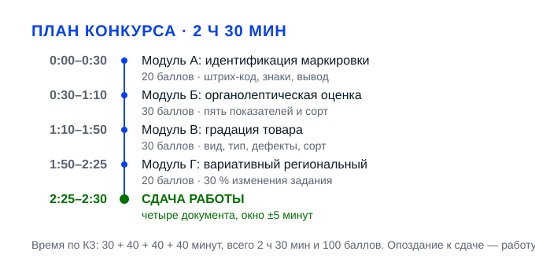
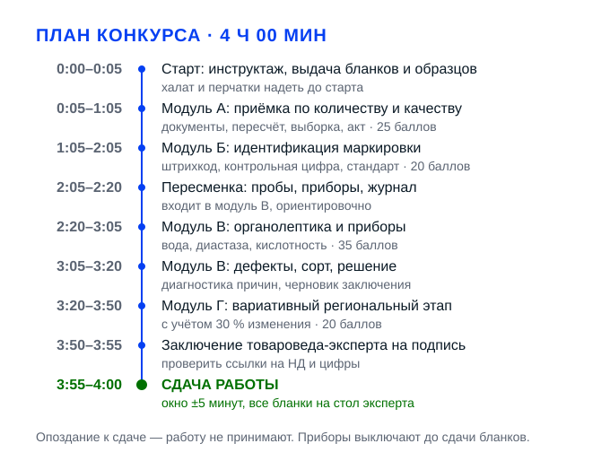
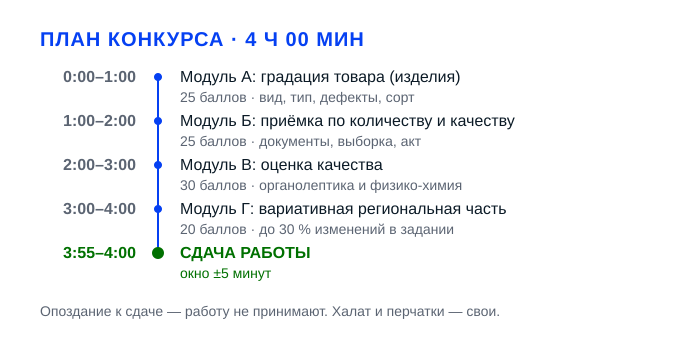

Эксперт по качеству (Р)
Задания ниже — официальные файлы «Абилимпикс» (источник: abilympics-russia.ru), разложенные по категориям. Решения написаны по тексту задания, регламенту и критериям оценки; в них указано, что именно проверяет эксперт.
Школьник
14–16 лет, базовый уровень заданияВыдержка из официального конкурсного задания: страницы, относящиеся к категории «Школьник» (стр. 5–7 источника).
Пошаговое решение
Задание категории «Школьники» состоит из четырёх модулей и идёт 2 часа 30 минут: 30 минут на идентификацию маркировки, по 40 минут на органолептическую оценку, градацию товара и вариативную региональную часть. Баллы распределены так: 20 за маркировку, 30 за оценку качества, 30 за градацию и 20 за модуль Г, всего 100. Все критерии измеримые: эксперт ставит балл за конкретный факт — переписанный реквизит, посчитанную контрольную цифру, названный сорт, описанный дефект с размером в миллиметрах. Отсюда главный принцип работы: меньше рассуждений, больше записей в протоколе, потому что оценивают документ, а не память участника. Второй принцип — последовательность: сначала идентификация, потом оценка, потом градация; каждый следующий модуль опирается на предыдущий, и пропущенный шаг тянет за собой ошибку в сортности. Ниже — 48 шагов по всем четырём модулям, от подготовки рабочего места до сдачи пакета документов.

Задача 1. Войти на площадку и организовать рабочее местоМодуль А · 20 баллов
До старта у вас есть несколько минут, и они решают больше, чем кажется: на столе должно лежать всё, чем вы будете работать, образец должен стоять на подложке целым, а в голове — план на 30 минут модуля А. Организация не оценивается отдельным баллом, но именно она определяет, успеете ли вы провести идентификацию маркировки на все 20 баллов или половину времени будете искать лупу и переписывать реквизиты с чужого черновика.
Действие 1.1. Подготовить себя и инструмент
Шаг 1.1.1
Надеваем лабораторный халат своего размера — он должен застёгиваться на все пуговицы и закрывать одежду до колен, а рукава сидят на запястье, а не свисают до локтя: в товароведной экспертизе руки работают у самой упаковки, и свободный рукав цепляет образец. Длинные волосы убираем под резинку. Силиконовые перчатки надеваем перед тем, как брать образец, и меняем их после каждого продукта с сильным запахом — рыбы, копчёностей, специй.
Халат и перчатки участник обязан привезти с собой: остальное на площадке выдаёт организатор. Чистый халат и убранные волосы эксперт фиксирует в первые минуты, и это часть культуры экспертизы: образец, который трогали руками в уличной одежде, нельзя считать корректно оценённым. Перчатки защищают не столько вас, сколько образец — от пота и кожного жира, которые меняют блеск поверхности и запах.
Халат застёгнут, манжеты на месте, волосы не выбиваются, перчатки по размеру и не болтаются на пальцах. Проверьте карманы: ручка и блокнот — да, телефон — нет, его эксперт воспринимает как нарушение. Перчатки проверяем на разрыв, растянув манжету: тонкая силиконовая перчатка рвётся у большого пальца.
Прийти в футболке, рассчитывая надеть халат «потом»: время на это уйдёт из модуля А, а балл за спецодежду уже потерян. Вторая ошибка — работать в перчатках, в которых до этого держали рыбу: запах переносится на следующий образец, и вы получите ложный результат по запаху и вкусу.
Эксперт смотрит на участника до старта, при входе на площадку, и отмечает спецодежду вместе с готовностью рабочего места. Отдельно фиксируется, сняты ли украшения: на этой компетенции их проверяют так же строго, как на кулинарной.
Шаг 1.1.2
Расставляем на столе всё в порядке работы, слева направо: образец на подложке, лупа, линейка, штангенциркуль, бланк протокола, ручка. Рабочее место по инфраструктурному листу — 3000 на 1900 мм, то есть площади хватает, чтобы не городить башню из упаковок: образец отдельно, инструмент отдельно, бумаги отдельно, и ничего не лежит на пути руки. Свет должен падать на образец сверху или сбоку, но не из-за вашей спины, иначе вы смотрите на собственную тень.
Порядок на столе — это скорость. Идентификация маркировки требует переписать до двадцати реквизитов и не потерять ни одного; когда бланк лежит под образцом, вы отвлекаетесь на каждой строке. Кроме того, эксперт обходит площадку в начале модуля и по организации стола видит, готовился ли участник или импровизирует на ходу.
Три зоны читаются глазом: образец, инструмент, документы. На столе нет лишнего — рюкзака, еды, стакана с чаем, телефона. Образец стоит на подложке, а не на голой столешнице, и до края стола от него не меньше ладони.
Свалить всё в одну кучу и начать искать ручку в середине работы. Хуже — поставить образец у самого края: одно неловкое движение, и упаковка падает, а вместе с ней теряются читаемость маркировки и баллы модуля А.
Эксперт оценивает организацию места при первом обходе, в первые пять-семь минут модуля. Если образец стоит на подложке, а инструмент разложен по порядку работы, для него это признак того, что участник понимает, зачем пришёл.
Шаг 1.1.3
Проверяем каждый инструмент до работы. У лупы крутим окуляр до резкости на мелком тексте: состав и адрес изготовителя набраны кеглем 6–8 пунктов, и без фокуса вы их не прочитаете. У штангенциркуля сводим губки до упора и смотрим на ноль. Линейку кладём нулевой отметкой к краю, а не отмеряем от торца. Если на столе стоят весы, включаем их, ждём обнуления и только потом ставим образец.
Все критерии этой компетенции — измеримые, тип «И»: эксперт ставит балл за факт, а не за старание. Измеримость начинается с инструмента: показание, снятое непригодным прибором, — это не измерение, а догадка, и в протоколе оно выглядит как ошибка участника, а не как поломка оборудования.
Лупа даёт резкую картинку с расстояния двух-трёх сантиметров, штангенциркуль показывает 0,00 при сведённых губках, весы показывают ноль с пустой чашей. Если инструмент неисправен, идём к эксперту сразу, до старта, а не в середине модуля.
Работать лупой с неотрегулированным фокусом: реквизиты «читаются», но цифры переписываются с ошибкой, и весь вывод о соответствии строится на неверных данных. Вторая ошибка — молча терпеть неисправный прибор и потом объяснять этим провал.
Эксперт отмечает, пользуется ли участник лупой вообще: на категории «Школьники» это ожидаемый навык, а не излишество. Второй момент — как участник держит лупу: у самого глаза, а не на вытянутой руке.
Действие 1.2. Принять образец и разобрать задание
Шаг 1.2.1
Берём образец двумя руками за боковые грани, ставим на подложку и сверяем его номер с номером в бланке задания: на площадке одновременно лежат несколько образцов, и перепутать их — самая обидная потеря. Упаковку до поры не вскрываем: все реквизиты маркировки находятся на ней, и разорванный пакет лишает вас части данных. Если для оценки запаха упаковку всё же нужно открыть, открываем ровно так, чтобы можно было закрыть обратно.
Модуль А — это идентификация маркировки, 20 баллов из 100. Оценивается соответствие того, что напечатано, требованиям нормативного документа; если упаковка испорчена до осмотра, вы теряете читаемость части реквизитов и не сможете сделать полный вывод. Повреждение образца по небрежности эксперт отдельно фиксирует в протоколе.
Номер совпал, упаковка целая, все четыре стороны доступны для осмотра. Поверните образец и убедитесь, что маркировка есть не только на лицевой стороне: дата изготовления и условия хранения часто напечатаны на торце.
Схватить образец за лицевую сторону и стереть пальцем краску: на дешёвой упаковке дата изготовления наносится именно так и держится плохо. Вторая ошибка — вскрыть пакет «чтобы посмотреть», а потом обнаружить, что срок годности напечатан на оторванном углу.
Эксперт фиксирует обращение с образцом: небрежность видна по заломам, пятнам и смазанным строкам. Отдельно отмечается, поставил ли участник образец на подложку или бросил на стол: разница видна сразу.
Шаг 1.2.2
Читаем бланк целиком, до последней строки, и подчёркиваем карандашом, что именно требуется: перечень реквизитов, которые надо проверить, форму вывода, куда вписывать результат, нужен ли расчёт контрольной цифры. На черновике выписываем пять-шесть вопросов, на которые обязаны ответить: подлинность штрихового кода, вид и номер нормативного документа, формы товарной информации, наличие обязательных сведений, итоговый вывод.
Задание в этой компетенции построено как чек-лист, и баллы начисляются за каждый закрытый пункт. Участник, который начал с первого вопроса и не дочитал, что в конце нужен письменный вывод о соответствии, теряет баллы не потому, что не знает, а потому, что не увидел требование. На 30 минутах модуля А такая потеря особенно заметна.
На черновике список вопросов, и напротив каждого — место, куда писать ответ. Если список короче четырёх пунктов, вы что-то пропустили: перечитайте задание ещё раз, медленно, с карандашом. Отмечайте в списке те вопросы, на которые ответ уже найден, — так видно, сколько осталось.
Ответить на все вопросы устно и не оставить записи: эксперт оценивает протокол, а не память. Вторая ошибка — писать вывод раньше, чем собраны реквизиты, и потом переписывать его целиком, теряя время. Третья ошибка — читать задание один раз и больше к нему не возвращаться.
Эксперт видит, читает ли участник задание с ручкой в руке или просматривает его по диагонали. Ему также видно, выписал ли участник требования к форме вывода: именно на этом теряются баллы.
Шаг 1.2.3
Раскладываем 30 минут модуля А по операциям: пять минут на то, чтобы снять и переписать реквизиты, десять — на штриховой код и расчёт контрольной цифры, восемь — на расшифровку знаков и определение нормативного документа, пять — на письменный вывод, две — резерв. Время записываем на черновике и сверяемся с таймером на площадке, а не с ощущением, что «ещё успею».
Модуль А — самый короткий: 30 минут против 40 в остальных трёх. Именно здесь участники чаще всего не успевают оформить вывод, хотя фактически всё уже сделали. План на бумаге превращает «не успел» в «успел, потому что знал, сколько стоит каждая операция».
К двадцатой минуте у вас переписаны реквизиты и посчитан штриховой код. Если на двадцатой минуте вы всё ещё читаете состав, план не работает — сокращайте подробности: вывод важнее мелких деталей. Таймер на площадке общий, поэтому сверяйтесь по нему, а не по своим ощущениям.
Увлечься расшифровкой каждой пиктограммы и оставить вывод на последнюю минуту: недописанный вывод — это потерянные баллы сразу по нескольким измеримым критериям модуля. Вторая ошибка — не оставить резерв: любая заминка с прибором съедает именно его.
Эксперт обходит площадку по ходу модуля и отмечает, кто сверяется с планом, а кто работает рывками. Если участник поглядывает на таймер и делает пометки о времени, это читается как зрелая работа.
Действие 1.3. Разобрать нормативную базу
Шаг 1.3.1
Ищем на упаковке строку с обозначением нормативного документа: «ГОСТ 31450-2013», «ГОСТ Р 52096-2003», «ТУ 10.51.11-004-...». Выписываем дословно — с индексом, номером, годом и, если есть, названием. Если обозначение напечатано мелко или смазано, читаем через лупу и сверяем по двум местам: обычно оно дублируется на торце и на обратной стороне упаковки.
Вид и номер нормативного документа — отдельный пункт задания модуля А. По нему в модуле В определяется, по какой таблице устанавливать сорт: у ГОСТ и у ТУ нормы разные, и сорт, выставленный по чужому документу, не засчитывается. Кроме того, ссылка на документ — то, что делает ваш вывод проверяемым.
В черновике запись, которую можно прочитать вслух без запинки: индекс, номер, год. Проверьте, что не перепутали ГОСТ и ГОСТ Р — это разные системы, и в выводе такая путаница считается ошибкой идентификации.
Записать «ГОСТ на молоко» без номера: формально реквизит есть, а идентифицировать документ нельзя, и балл не ставится. Вторая ошибка — принять за обозначение стандарта номер технического регламента, например ТР ТС 033/2013: это разные уровни требований.
Эксперт проверяет точность записи: индекс и год для него важнее, чем название документа. Если обозначение записано с ошибкой в годе, сорт потом обосновывается по недействующей редакции.
Шаг 1.3.2
Выстраиваем порядок проверки: сначала технические регламенты Таможенного союза — ТР ТС 022/2011 для маркировки пищевой продукции и ТР ТС 005/2011 для упаковки, затем государственный стандарт или технические условия, затем внутренние стандарты изготовителя. Если на упаковке есть ссылка на ГОСТ, а обязательные сведения из регламента отсутствуют, вывод делается по регламенту: он выше стандарта.
Требования в России действуют по иерархии, и вывод о соответствии маркировки строится сверху вниз. Участник, который проверяет только ГОСТ, пропускает, например, отсутствие единого знака обращения продукции на рынке ЕАЭС — а это прямое несоответствие, за которое снимаются баллы модуля А.
На черновике три строки: регламент, стандарт, изготовитель. Проверьте, что вывод опирается на самую верхнюю строку, где найдено несоответствие, а не на самую удобную для вас. Если несоответствие найдено на уровне регламента, дальше можно не искать: вывод уже определён.
Написать «маркировка соответствует ГОСТ», не проверив обязательные сведения регламента: вывод формально положительный, но неверный, и эксперт видит это по перечню проверенных пунктов. Третья ошибка — ссылаться на документ, которого нет на площадке: проверить такую ссылку нельзя.
Эксперт смотрит на аргументацию вывода: ссылка на конкретный документ весомее общей фразы о соответствии. Он может попросить назвать, какой документ главнее, — это стандартный уточняющий вопрос.
Задача 2. Провести идентификацию маркировки товараМодуль А · 20 баллов
Тридцать минут на то, чтобы прочитать упаковку как документ: снять все маркировочные реквизиты, проверить штриховой код, расшифровать информационные знаки, найти нормативный документ и написать вывод о соответствии. Работа идёт строго по порядку — от переписывания к расчёту и только потом к выводу, потому что вывод, написанный до расчёта, всегда приходится переделывать.
Действие 2.1. Снять маркировочные реквизиты
Шаг 2.1.1
Переписываем маркировку по группам, а не подряд: сведения о товаре (наименование, состав, количество, пищевая ценность), об изготовителе (наименование, адрес, страна), о сроке (дата изготовления, срок годности, условия хранения), о подтверждении соответствия (единый знак обращения, номер декларации). На каждую группу — своя строка черновика, и сразу видно, что найдено, а чего на упаковке нет.
Модуль А стоит 20 баллов, и начисляют их за полноту и точность снятых реквизитов. Группировка нужна не для красоты: пропуск целой группы — это минус несколько пунктов, тогда как пропуск одного слова внутри группы стоит дешевле. Кроме того, группы сразу подсказывают, какие требования какого документа проверять.
Четыре группы заполнены, в каждой не меньше трёх позиций. Если какая-то группа пустая, вернитесь к упаковке: скорее всего, вы смотрели только лицевую сторону, а состав и адрес напечатаны на обороте. Проверьте, что в группе «подтверждение соответствия» записан не только знак, но и номер декларации.
Переписывать всё подряд, как напечатано: в середине сбиваешься, начинаешь пропускать строки, а на проверку полноты времени уже нет. Вторая ошибка — переписывать только крупный шрифт, считая мелкий необязательным.
Эксперт сверяет ваш перечень с упаковкой и видит пропуски сразу — они заметнее, чем кажется участнику. Если группа заполнена одной строкой, он задаёт вопрос по составу — и пропуск обнаруживается.
Шаг 2.1.2
Определяем, какие формы товарной информации использованы на упаковке: словесная (текст), цифровая (масса, срок, температура), изобразительная (рисунок продукта, пиктограммы) и штриховая (код). Отдельно отмечаем вид информации — потребительская, то есть адресованная покупателю, или торговая, нужная складу и кассе: у них разные требования и разные носители.
В задании прямо сказано: установить виды и формы товарной информации. Это не абстракция: от вида зависит, какие требования применяются. Потребительская информация регулируется регламентом и законом о защите прав потребителей, торговая — правилами маркировки для логистики и учёта.
Для каждой формы — хотя бы один пример с упаковки: слово, число, пиктограмма, код. Если по какой-то форме примера нет, так и записываем: отсутствие формы — тоже результат наблюдения, и он оценивается.
Свести всё к «есть текст и есть код»: тогда пункт о видах информации остаётся нераскрытым, а балл за него не ставится, хотя время на ответ потрачено. Вторая ошибка — называть формой информации «упаковку»: упаковка это носитель, а не форма.
Эксперт слушает формулировку и смотрит, различает ли участник потребительскую и торговую информацию. Ответ «есть текст и картинка» он считает неполным, потому что в нём нет штриховой формы.
Шаг 2.1.3
Оцениваем качество самой маркировки: читается ли она без напряжения, не смазана ли, не стёрта ли, нанесена ли на русском языке, не перекрыта ли другими элементами упаковки. Смотрим при рассеянном свете и под углом — на глянцевой плёнке часть текста видна только под углом, и это нормально, а вот полное отсутствие строки — нет. Если строка видна только под углом, это не дефект, а свойство плёнки, и записывать его как несоответствие нельзя.
Требования к маркировке включают не только содержание, но и читаемость: нечитаемая маркировка приравнивается к отсутствующей. Это самый частый реальный дефект в конкурсных образцах — его вносят специально, чтобы проверить, заметит участник или нет, и на нём теряется больше баллов, чем на любом другом пункте модуля.
Каждый обязательный реквизит читается при освещении не менее 300 люкс, то есть при обычном рабочем свете. В черновике отмечаем, что именно нечитаемо и почему: стёрто, заклеено, смазано, нанесено только на прозрачной плёнке без подложки.
Пропустить затёртую дату изготовления и написать «дата есть»: эксперт видит, что её нет, и весь вывод о соответствии рушится, даже если остальные двадцать реквизитов проверены безупречно. Вторая ошибка — писать «маркировка стёрта» без указания, какой именно реквизит пострадал.
Эксперт проверяет именно те реквизиты, которые в образце испорчены намеренно. Он подходит к образцу и просит показать место, которое участник назвал нечитаемым: так проверяется честность записи.
Действие 2.2. Проверить подлинность штрихового кода
Шаг 2.2.1
Находим на упаковке штриховой код и определяем его тип по числу знаков: тринадцать цифр — EAN-13, восемь — EAN-8, четырнадцать — ITF-14 на транспортной упаковке, квадратный двумерный код из чёрных и белых модулей — DataMatrix. Считаем цифры подряд, не пропуская, и записываем их столбиком по одной: так удобнее проверять и труднее ошибиться. Если код нанесён на изогнутую поверхность, цифры читаем по частям, сдвигая упаковку, а не наклоняя голову.
От типа кода зависит алгоритм проверки, а в задании требуется определить подлинность. Ошибка в определении типа — это ошибка в расчёте: для тринадцатизначного кода считают по модулю 10, а для двумерного DataMatrix проверяют совсем другое, а именно соответствие записи в системе маркировки товаров.
Записаны все цифры без пропусков, тип назван. Убедитесь, что не приняли за код номер партии или артикул: штриховой код всегда под полосами, а не над ними, и его первая цифра не начинается с нуля у EAN-13.
Посчитать двенадцать цифр вместо тринадцати, потеряв первую: расчёт «почти сойдётся», и участник сделает ложный вывод о подлинности или, наоборот, забракует нормальный код. Третья ошибка — переписать код с чужой упаковки, если образцов на столе несколько.
Эксперт смотрит на аккуратность выписывания: столбик цифр читается и проверяется быстрее, чем строка. Если участник сразу говорит «EAN-13, тринадцать цифр», это ожидаемый уровень для школьников.
Шаг 2.2.2
Разбираем первые цифры кода — префикс, который указывает на национальную организацию GS1, выдавшую код. Комбинации 460–469 закреплены за Россией, 481 — за Беларусью, 482 — за Украиной, 690–699 — за Китаем, 400–440 — за Германией. Записываем префикс и страну рядом с полным кодом, отдельной строкой. Если префикс начинается с двойки или тройки, код, скорее всего, внутренний, для весового товара.
Префикс не доказывает страну происхождения товара, но при идентификации он нужен: расхождение между надписью «сделано в России» и префиксом 690 — сигнал, который надо объяснить в выводе. Эксперт ценит именно объяснение, а не механическое «код российский».
Префикс выписан отдельно, страна названа. Если префикс не входит в диапазон 460–469, отметьте это в черновике как обстоятельство, требующее пояснения, а не как готовое несоответствие. Запишите префикс тремя цифрами: по одной цифре страну не определить.
Объявить товар подделкой только по префиксу: код может быть выдан дочернему предприятию за рубежом или получен по лицензии, и поспешный вывод о фальсификации — грубая ошибка идентификации, которая стоит баллов.
Эксперт слушает, различает ли участник префикс кода и страну изготовителя. Для него важно, чтобы участник не делал из префикса далеко идущих выводов о качестве товара.
Шаг 2.2.3
Считаем контрольную цифру по модулю 10. Цифры на нечётных позициях, считая слева, складываем как есть, цифры на чётных умножаем на три и тоже складываем; из общей суммы отбрасываем десятки, а остаток вычитаем из десяти — это и есть контрольная цифра. Проверим на коде 4006381333931: сумма с весами даёт 89, остаток 9, десять минус девять — единица, и последняя цифра кода действительно 1.
Расчёт контрольной цифры — обязательный пункт модуля А: он превращает «посмотрел на код» в измеримую проверку. Если цифра сходится, код синтаксически корректен, то есть не содержит опечатки при нанесении; если не сходится, код поддельный или перепечатан с ошибкой.
Пересчитайте сумму дважды, второй раз — с конца, чтобы не сбиться на чётности позиций. Совпадение с последней цифрой кода — единственный признак, который здесь считается доказательством. Если суммы расходятся на единицу, ищите ошибку в позиции цифры, а не в арифметике.
Перепутать веса и умножить на три нечётные позиции вместо чётных: тогда почти любой код «не сойдётся», и участник забракует нормальный товар. Вторая ошибка — считать по двенадцати цифрам, забыв, что контрольная входит в тринадцать.
Эксперт смотрит на сам расчёт в черновике: для него важен ход, а не только ответ. Если участник считает в уме и сбивается, он советует записывать цифры столбиком с весами напротив.
Шаг 2.2.4
Сопоставляем код с данными на упаковке: наименование, масса нетто и изготовитель должны совпадать с тем, что заявлено рядом с кодом и в сопроводительных документах образца. Если на образце есть код маркировки средствами идентификации, проверяем, что он читается сканером или приложением и что запись соответствует именно этому товару. Массу нетто сверяем с той, что указана рядом с кодом: расхождение в пять граммов уже повод для вопроса.
Подлинность кода — это не только арифметика. Код может быть математически верным, но относиться к другому товару: именно такие случаи и составляют большинство подделок. Задание требует определить подлинность, и вывод должен опираться на сопоставление, а не на одну контрольную цифру.
Три совпадения: наименование, масса нетто, изготовитель. Если хотя бы одно расходится, фиксируем это как признак недостоверной идентификации и указываем, что именно не совпало. Если совпало только два признака из трёх, пишите об этом прямо, а не подгоняйте вывод.
Ограничиться контрольной цифрой и написать «код подлинный»: если код взят от другого товара, вывод неверен, и баллы за идентификацию снимаются полностью, хотя расчёт был правильным. Третья ошибка — проверять код по памяти приложения, а не по записи на упаковке.
Эксперт задаёт вопрос «на основании чего вы решили, что код подлинный», и ждёт два аргумента, а не один. Он также смотрит, назван ли номер декларации, если он есть на упаковке рядом с кодом.
Действие 2.3. Расшифровать знаки и найти норматив
Шаг 2.3.1
Расшифровываем информационные знаки: единый знак обращения продукции на рынке ЕАЭС — стилизованные буквы ЕАС, знак соответствия национальным стандартам — РСТ, манипуляционные знаки (рюмка, зонт, стрелки вверх), экологические знаки, знак «Не содержит ГМО». Каждый знак записываем в черновик с расшифровкой в три-четыре слова, а не описанием картинки. Знаки, которых вы не знаете, зарисовываем и описываем словами: это лучше, чем пропустить.
Товарные знаки и маркировочные реквизиты — отдельный пункт задания. Знаки несут обязательную информацию: отсутствие ЕАС на пищевой продукции означает, что подтверждение соответствия не оформлено, а это уже несоответствие регламенту, а не косметический недостаток упаковки.
Для каждого знака есть расшифровка, а не пересказ рисунка. Проверьте, что не спутали ЕАС с РСТ: первый означает соответствие техническим регламентам Союза, второй — национальным стандартам, и в выводе это разные основания.
Переписать знаки значками без расшифровки: эксперт видит рисунок, но не видит понимания, и балл за расшифровку не ставится, хотя время на перерисовывание потрачено. Вторая ошибка — принять манипуляционный знак за знак соответствия: у них разное назначение.
Эксперт просит объяснить один знак на выбор — обычно манипуляционный, потому что его проще всего проверить. Ответ «это значит, что можно хранить» без расшифровки знака он не засчитывает.
Шаг 2.3.2
Сверяем упаковку с перечнем обязательных сведений регламента: наименование продукции, состав, количество, дата изготовления, срок годности, условия хранения, наименование и место нахождения изготовителя, рекомендации по использованию при необходимости, показатели пищевой ценности, сведения о компонентах, полученных с применением генно-модифицированных организмов, и единый знак обращения.
Это ядро модуля А: вывод о соответствии маркировки требованиям российского законодательства делается именно по этому перечню. Каждый отсутствующий пункт — конкретное несоответствие с указанием пункта регламента, и именно такую формулировку ждёт эксперт, а не общее «маркировка неполная».
Напротив каждого пункта перечня в черновике стоит плюс или минус. Минусы пересчитайте: их количество должно совпасть с количеством несоответствий, которые вы назовёте в выводе. Если минусов больше трёх, перечитайте упаковку: часть сведений могла быть на торце.
Проверить пять пунктов из десяти и написать «в основном соответствует»: размытый вывод не засчитывается, потому что его нельзя проверить, а перечень проверенного в протоколе отсутствует. Вторая ошибка — считать отсутствие рекомендаций по использованию несоответствием всегда: они обязательны лишь при необходимости.
Эксперт сравнивает число найденных вами несоответствий с числом реально внесённых в образец. Он проверяет, названы ли пункты регламента, а не только сам факт отсутствия сведений.
Действие 2.4. Сформулировать вывод и оформить протокол
Шаг 2.4.1
Пишем вывод одной связной фразой с опорой на документы: «Маркировка образца соответствует требованиям ТР ТС 022/2011 и ГОСТ ...», дальше — перечень выявленных несоответствий с указанием пункта и того, что именно отсутствует или искажено. Если несоответствий нет, так и пишем, но с перечнем проверенных пунктов, иначе вывод выглядит голословным. Формулировку пишем так, чтобы её можно было прочитать вслух без пояснений.
Вывод — это тот результат, который оценивают в модуле А: «проведена идентификация маркировки на соответствие требованиям нормативного документа». Балл ставят за проверяемую формулировку: эксперт должен увидеть, на что вы опирались, и суметь повторить вашу проверку.
В выводе три элемента: что проверяли, по какому документу, с каким результатом. Если хотя бы одного нет, вывод переписываем, не надеясь, что эксперт догадается. Проверьте ещё, что вывод не противоречит перечню несоответствий: если минусов три, а вывод положительный, это ошибка.
Написать «маркировка соответствует» без ссылки на документ и без перечня проверенного: такой вывод нельзя ни подтвердить, ни опровергнуть, и баллы за него не начисляются, даже если работа проведена полностью.
Эксперт читает вывод первым делом и по нему судит о всей работе модуля. Если вывод начинается со слов «я думаю», он просит заменить их ссылкой на документ.
Шаг 2.4.2
Переносим результат в официальный бланк: заполняем все поля, ставим номер образца, дату, фамилию, подпись. Пишем разборчиво, шариковой ручкой, без сокращений, которые можно понять двояко. Исправления делаем аккуратно: зачёркиваем одной чертой и подписываем рядом, а не замазываем и не заклеиваем. Поля с выбором заполняем, обводя нужный вариант, а не ставя галочку между строк.
Протокол — единственный документ, который остаётся после конкурса, и оценивают именно его. Поле, оставленное пустым, читается как невыполненный пункт задания, даже если вы всё сделали устно и правильно: эксперт не обязан восстанавливать ваши слова по памяти.
Все поля заполнены, пустых строк нет, номер образца совпадает с заданием, подпись на месте. Пройдите по бланку сверху вниз второй раз: на пустые поля глаз «замыливается». Отдельно проверьте, что номер образца написан теми же цифрами, что в задании, без перестановки.
Оставить пустой графу «нормативный документ», потому что обозначение не поместилось: лучше вписать мелко и в две строки, чем не вписать вовсе. Такая пустая графа стоит столько же, сколько полное незнание документа.
Эксперт проверяет протокол на полноту и на соответствие тому, что участник сказал устно. Если в бланке осталась пустая графа, он не спрашивает, почему, а просто не ставит балл.
Задача 3. Провести органолептическую оценку качестваМодуль Б · 30 баллов
Сорок минут на то, чтобы оценить образец пятью органами чувств и превратить впечатление в запись по форме стандарта. Самый дорогой модуль вместе с градацией: тридцать баллов. Здесь выигрывает не тот, кто тоньше чувствует, а тот, кто описывает увиденное словами стандарта и не забывает ни одного показателя — потому что оценивают протокол, а не вкусовые ощущения.
Действие 3.1. Подготовить образец и органы чувств
Шаг 3.1.1
Готовим образец к оценке: доводим до комнатной температуры, если для этого продукта стандарт предусматривает дегустацию при 18–20 °C, выкладываем на белую тарелку, режем на куски одинакового размера — такие, чтобы один кусок можно было взять в рот целиком. Каждый образец получает шифр, и дальше вы работаете с шифром, а не с названием: это исключает подсказку и заодно дисциплинирует запись.
Органолептическая оценка — 30 баллов, и условия прямо влияют на результат: холодный продукт отдаёт меньше аромата, тёплый кажется более мягким, а на цветной тарелке невозможно оценить оттенок. Если не привести образцы к одной температуре, сравнение будет нечестным, и сорт определится неверно — а это уже ошибка модуля В.
Образцы одной температуры, посуда белая и без запаха, куски одинакового размера, шифры подписаны. Проверьте, что на тарелке нет следов предыдущего образца: жирная плёнка даёт посторонний привкус. Если тарелка холодная, продукт на ней остынет быстрее, чем вы дойдёте до вкуса.
Оценивать образец прямо из холодильника: запах почти не ощущается, вкус приглушён, и участник занижает сорт. Вторая ошибка — использовать цветную или пахнущую посуду: одноразовая с запахом пластика отбивает тонкий аромат полностью.
Эксперт смотрит на подготовку: температура образца и посуда входят в измеримые условия оценки. Он также смотрит, подписан ли шифр образца: без шифра запись в протоколе невозможно сопоставить.
Шаг 3.1.2
Перед первой пробой нейтрализуем восприятие: пьём воду комнатной температуры, вдыхаем запах свежего хлеба или кофе, если он есть на площадке, делаем паузу в 30–60 секунд между образцами. Не оцениваем больше трёх-четырёх образцов подряд без перерыва: чувствительность падает, и последний образец всегда кажется хуже, чем он есть. Если на площадке нет ни хлеба, ни кофе, годится собственный локоть: вдохнуть запах своей кожи — простой способ сбросить предыдущий аромат.
Адаптация рецепторов — физиология, а не отговорка: после двух жирных образцов вкус следующего искажается, и участник ставит оценку «на глаз», а не по факту. В модуле Б это стоит баллов напрямую: неверно определённый показатель тянет за собой неверный сорт.
Между образцами прошло не меньше полуминуты, во рту нет вкуса предыдущего продукта, вода выпита. Если вкус остался, прополощите рот водой и подождите ещё столько же. Если после паузы вкус всё равно остался, пауза была короткой: повторите её.
Пробовать все образцы подряд «чтобы быстрее»: к третьему образцу вы перестаёте различать оттенки, и в протоколе появляются одинаковые описания у разных продуктов — эксперт это видит и снимает баллы за конкретику.
Эксперт обращает внимание на паузы и на воду на столе: это признаки обученной дегустации. Он может спросить, зачем нужна пауза, и ждёт ответ про адаптацию рецепторов, а не про вежливость.
Действие 3.2. Оценить показатели по порядку
Шаг 3.2.1
Начинаем с внешнего вида: осматриваем образец при рассеянном свете не менее 300 люкс, со всех сторон и в разрезе. Отмечаем форму, состояние поверхности, равномерность, наличие вмятин, трещин, оголённых участков. Описываем не оценочно («хороший вид»), а предметно: «поверхность ровная, без трещин, форма правильная, край ровный, следов деформации нет».
Внешний вид — первый показатель в любой таблице стандарта, и с него начинается снятие баллов за дефекты. Именно он показывает эксперту, видел ли участник образец вообще: общие слова в этой графе сразу выдают формальный осмотр, даже если остальные показатели описаны подробно.
В описании не меньше трёх характеристик: форма, поверхность, цвет. Каждая — словами из стандарта, а не бытовыми выражениями вроде «нормальный» или «как в магазине». Проверьте, что описание не состоит из одних прилагательных без существительных: «ровная» без указания чего — не описание.
Написать «внешний вид соответствует» и перейти к вкусу: тогда все дефекты, которые видны глазом, остаются неописанными, и баллы за них теряются, хотя вы их видели. Вторая ошибка — описывать внешний вид по фотографии на упаковке, а не по самому образцу.
Эксперт сверяет описание с образцом и смотрит, найдены ли внесённые дефекты. Если дефект на поверхности не назван, он считает, что осмотр был формальным, и снижает балл за весь показатель.
Шаг 3.2.2
Оцениваем цвет на белом фоне при том же освещении: сравниваем с описанием в стандарте, отмечаем оттенок, равномерность, наличие потемнений, пятен, серого или зеленоватого налёта. Затем разламываем или разрезаем образец и смотрим состояние на разрезе: пористость, равномерность, следы непромеса, пустоты, закал. Срез делаем чистым ножом, а не разламываем руками: от этого зависит, увидите ли вы структуру.
Цвет и вид на разрезе — показатели, по которым чаще всего выявляют нарушения хранения: потемнение говорит о реакции окисления, пятна — о плесени или контакте с влагой, закал — о нарушении режима выпечки. В модуле В эти же признаки станут основанием для заключения о дефектах, поэтому фиксировать их нужно уже здесь.
Цвет описан словами стандарта, срез осмотрен, отмечено, равномерен ли он. Фотографировать на площадке нельзя, значит описание должно быть таким, чтобы по нему можно было представить образец. Отметьте, одинаков ли цвет по всей поверхности или есть участки другого оттенка.
Смотреть цвет под жёлтой лампой накаливания: продукт кажется темнее, и участник записывает несуществующее потемнение, а потом обосновывает им заниженный сорт. Вторая ошибка — оценивать цвет по памяти, не сравнив с описанием в стандарте.
Эксперт проверяет, различает ли участник равномерность окраски и сам оттенок: это разные характеристики. Он проверяет, назван ли оттенок, а не только слово «равномерный».
Шаг 3.2.3
Оцениваем запах в три приёма: сначала на расстоянии, не поднося образец к лицу, потом коротким вдохом над поверхностью, потом — после разламывания, когда аромат раскрывается. Вдыхаем коротко, а не глубоко: при глубоком вдохе рецепторы быстро устают. Отмечаем чистоту запаха и посторонние оттенки — кислый, затхлый, плесневелый, химический. Если запах кажется слабым, подержите образец в ладонях полминуты: от тепла он усиливается.
Запах — самый чувствительный индикатор порчи, и по нему в первую очередь определяют, можно ли товар вообще реализовывать. В модуле Б это прямой путь к сорту: посторонний запах почти всегда переводит продукт в низший сорт или делает его непригодным к реализации.
Запах описан как «свойственный», «слабо выраженный» или «посторонний», с указанием оттенка. Если посторонний запах есть, отметьте интенсивность: слабый, заметный, резкий. Если оттенок назвать не удаётся, опишите его через сравнение: «как у лежалых фруктов».
Нюхать образец вплотную и долго: обоняние адаптируется за 10–15 секунд, и участник перестаёт чувствовать даже явный посторонний запах, а в протоколе появляется «запах свойственный». Вторая ошибка — оценивать запах после вкуса: после пробы рецепторы заняты другим.
Эксперт следит за техникой: короткий вдох на расстоянии — признак обученности, глубокий вдох у самого продукта — наоборот. Он также смотрит, не держит ли участник образец у самого носа.
Шаг 3.2.4
Пробуем небольшой кусок, распределяем по всей полости рта и держим 5–10 секунд, отмечая первые ощущения и послевкусие отдельно. Для консистенции используем не только язык, но и нож: сжимаем, разминаем, смотрим, крошится ли, тянется ли, восстанавливает ли форму. Каждый образец пробуем отдельно, между пробами — вода. Если продукт жидкий, оцениваем его ложкой, а консистенцию — по тому, как он стекает с неё.
Вкус и консистенция дают наибольший вес в органолептической оценке, потому что их нельзя подделать оформлением упаковки. В задании прямо сказано: оценить качество органолептическим методом и определить сорт — без вкуса сорт не обосновать, и заключение модуля В останется без опоры.
Описаны вкус, послевкусие и консистенция по отдельности. Проверьте, что характеристики взяты из стандарта, а не придуманы: «кисловатый» и «кислый» — разные оценки, и вторая уже может означать порчу. Проверьте, что вкус описан тремя словами: основной, дополнительный оттенок и послевкусие.
Проглотить образец сразу: послевкусие, по которому определяют свежесть, формируется во вторую-третью секунду, и его легко пропустить, а вместе с ним — признак начинающейся порчи. Вторая ошибка — пробовать образец после воды с газом: пузырьки искажают восприятие.
Эксперт смотрит на последовательность: сначала запах, потом вкус, и никогда наоборот — после пробы запах оценить уже нельзя. Он спрашивает, чем отличается вкус от послевкусия, — это типичный уточняющий вопрос.
Действие 3.3. Свести результаты и определить сорт
Шаг 3.3.1
Заполняем протокол по показателям, каждый — отдельной строкой: внешний вид, цвет, запах, вкус, консистенция. Напротив каждого ставим фактическое описание и оценку по шкале, которая задана в бланке. Пустых строк не оставляем: если показатель не оценивался, пишем «не определялся» и объясняем почему. Оценку по шкале ставим сразу, а не в конце: иначе к последней строке вы уже не помните первого впечатления.
Протокол — это результат модуля Б, за который дают 30 баллов. Оценка ставится за полноту и за соответствие описаний стандарту; строка, оставленная пустой, читается как невыполненный показатель, независимо от того, что вы видели и чувствовали на самом деле.
Все пять показателей заполнены, у каждого есть описание и оценка. Сумму оценок пересчитайте дважды: арифметическая ошибка в протоколе стоит баллов не меньше, чем пропущенный показатель. Если сумма не совпадает с максимумом шкалы, проверьте, не пропущена ли строка.
Заполнять протокол по памяти в конце модуля: детали забываются, описания становятся общими, и балл за конкретику теряется. Записывать нужно сразу после каждой пробы, пока ощущение свежее. Третья ошибка — оставлять строку пустой, надеясь, что эксперт поймёт: он понимает это как пропуск.
Эксперт читает протокол целиком, а не выборочно, и сравнивает строки между собой на непротиворечивость. Он также смотрит, совпадают ли описания в протоколе с тем, что участник говорит вслух.
Шаг 3.3.2
Открываем ту таблицу стандарта, которая относится к вашему виду продукта, и построчно сравниваем: требование — факт — вывод. Работаем именно с той таблицей, что соответствует виду и сорту, а не с первой попавшейся: у разных видов нормы различаются, а у одного вида — по сортам. Норму из таблицы выписываем в черновик рядом с фактом. Норму выписываем дословно, с единицами измерения, чтобы потом не спорить о трактовке.
Сорт определяется не впечатлением, а таблицей допусков. Если сравнение сделано не по той таблице, сорт окажется завышенным или заниженным, и в модуле В это даст расхождение между двумя вашими же выводами — а такое расхождение эксперт замечает сразу и фиксирует как ошибку градации.
Напротив каждого показателя стоит норма из стандарта и ваш факт. Расхождения обведены: именно они станут основанием для понижения сорта, и именно их вы назовёте в выводе. Если расхождений нет ни по одному показателю, так и запишите: это тоже результат.
Сравнивать по памяти: «вроде бы для первого сорта допускается» — типичная фраза, после которой сорт определяется неверно, а обосновать его в заключении нечем. Вторая ошибка — брать таблицу для другого сорта: тогда сравнение сразу смещено.
Эксперт проверяет, открыт ли у участника сам документ, а не только бланк протокола: работа «по памяти» видна по отсутствию ссылок. Он смотрит на ссылку в протоколе: без номера таблицы сравнение не проверить.
Шаг 3.3.3
Определяем сорт по правилу «худший показатель решает»: сорт не может быть выше того, который допускает самый слабый из ваших показателей. Если по вкусу продукт первого сорта, а по внешнему виду — второго, итог второй сорт. Записываем сорт словами и цифрой, как в стандарте: «первый» или «1-й сорт». Если два показателя дают разный сорт, в протоколе указываем оба и объясняем выбор.
Сорт — главный измеримый результат модуля Б и одновременно вход в модуль В. Ошибка здесь стоит дороже всего: она тянет за собой неверное заключение о возможности реализации и о цене, а эксперт оценивает именно связку «сорт — дефекты — вывод», а не отдельные фразы.
Сорт обоснован ссылкой на конкретный показатель, который его ограничил. Если обоснования нет, сорт назначен произвольно, и это видно по протоколу. Проверьте, что ограничивающий показатель назван тем же словом, что в стандарте, а не пересказан.
Ставить сорт по большинству показателей или по самому сильному: это самая частая ошибка, и она всегда в сторону завышения, а завышенный сорт — прямой повод снизить оценку модуля. Вторая ошибка — обосновывать сорт «общим впечатлением»: это не показатель, и проверить его нельзя.
Эксперт спрашивает, какой показатель ограничил сорт, и ждёт конкретного ответа с названием показателя. Если участник называет сорт без показателя, он просит найти в протоколе строку, которая его ограничила.
Шаг 3.3.4
Формулируем вывод: соответствует ли товар заявленному сорту, можно ли его реализовывать и на каких условиях. Пишем так: «Образец соответствует первому сорту по ГОСТ ...; выявлено незначительное потемнение поверхности, не влияющее на сорт; реализация возможна без ограничений». Если ограничения есть, называем их: снижение сорта, уценка, возврат поставщику.
В задании модуля Б прямо требуется сделать вывод о качестве и возможности реализации. Это связка, которую проверяют измеримо: сорт, дефекты и решение о реализации должны быть согласованы между собой, и несогласованность видна без всяких пояснений. Кроме того, вывод проверяется на связность: он должен опираться на протокол, а не на общее впечатление.
В выводе три элемента: сорт, дефекты, решение. Между ними нет противоречий — нельзя одновременно писать «второй сорт» и «реализация без ограничений по цене первого сорта». Проверьте, что условия реализации сформулированы так, чтобы их можно было выполнить: «хранить при 4 °C» проверяемо, «хранить хорошо» — нет.
Написать «качество хорошее, реализация возможна» без указания сорта и без связи с дефектами: вывод не проверяем, баллы не начисляются, а работа модуля Б выглядит незаконченной. Вторая ошибка — писать вывод до заполнения протокола: тогда он не опирается ни на одну строку.
Эксперт проверяет именно согласованность вывода с протоколом: сорт в выводе должен совпадать с сортом в протоколе. Он сверяет сорт в выводе с сортом в протоколе и фиксирует расхождение.
Задача 4. Провести градацию товара и дать заключение о дефектахМодуль В · 30 баллов
Сорок минут на то, чтобы ответить на четыре вопроса: что это за товар, какого он типа и категории, какие у него дефекты и какого он сорта. Тридцать баллов ставятся за связку, а не за отдельные ответы: вид должен соответствовать составу, дефекты — категории, сорт — таблице допусков, а заключение — всему перечисленному. Именно здесь рассыпаются работы, где каждый пункт по отдельности верен, а вместе они противоречат друг другу.
Действие 4.1. Определить вид, тип и категорию
Шаг 4.1.1
Определяем вид товара по классификации: называем группу (например, молочные продукты), подгруппу (кисломолочные), вид (кефир) и при необходимости разновидность (обезжиренный, 1 %, 2,5 %). Пользуемся классификатором и стандартом на группу, а не бытовым названием: слово «молочка» в протоколе недопустимо, потому что по нему нельзя выбрать таблицу норм.
Модуль В начинается с определения вида и типа, и это 30 баллов: без правильного вида нельзя выбрать таблицу допусков, а значит, нельзя установить сорт. Идентификация по виду — это ещё и проверка подлинности: если заявлен кефир, а по составу продукт молочный составной, вид определён неверно.
Вид назван так, как он назван в стандарте и на упаковке. Проверьте, что не подменили вид торговым наименованием: «Био-классик» — это название, а вид у него другой. Проверьте, что вид не назван родовым словом: «напиток» вместо «кефир» — это не определение вида.
Определить вид «на глаз» по упаковке, не заглянув в состав: торговое название часто шире вида, и участник фиксирует не то, что внутри, а то, что напечатано крупным шрифтом. Вторая ошибка — определять вид по вкусу, не прочитав состав: вкус подсказывает, но не доказывает.
Эксперт сверяет названный вид с составом и с тем, что заявлено на маркировке. Если вид назван верно, но без группы и подгруппы, он ставит балл частично и говорит об этом.
Шаг 4.1.2
Уточняем тип и категорию внутри вида: жирность, термическое состояние (охлаждённый, замороженный), способ обработки (пастеризованный, стерилизованный), категорию упитанности или класс. Каждый уточняющий признак записываем отдельной строкой с фактическим значением, взятым с упаковки и проверенным по образцу. Значения с упаковки переписываем дословно: «2,5 %» и «2,5 процента» в протоколе выглядят по-разному.
Тип и категория — не украшение протокола: нормы стандарта часто заданы отдельно для каждого типа. Обезжиренный и жирный продукт оценивают по разным таблицам, и если тип определён неверно, сорт будет обоснован чужой нормой, а вывод окажется недоказуемым.
Уточняющих признаков не меньше двух, у каждого — фактическое значение. Все они совпадают с маркировкой; если не совпадают, это фиксируется как несоответствие и отдельно называется в заключении. Проверьте, что тип не противоречит виду: у некоторых видов термическое состояние задано стандартом.
Пропустить термическое состояние: у замороженного и охлаждённого продукта разные допуски по консистенции, и сорт «поедет» именно на этом показателе, хотя всё остальное определено верно. Вторая ошибка — указывать тип по памяти, не сверив с маркировкой.
Эксперт проверяет, различает ли участник вид и тип — это разные уровни классификации, и путать их на категории «Школьники» считается типичной ошибкой.
Шаг 4.1.3
Сверяем то, что заявлено на маркировке, с тем, что видно в образце: наименование, состав, жирность, срок. Расхождения записываем отдельным списком с указанием, где именно заявлено и где обнаружено. Это и есть идентификация в узком смысле — установление тождества товара его описанию. Каждое расхождение подтверждаем цитатой с упаковки: без цитаты это не расхождение, а мнение.
Задание модуля В требует определить вид и тип и дать заключение о дефектах; идентификация — основание для обоих пунктов. Если товар не тождествен своему описанию, говорить о сорте бессмысленно: это уже не градация, а фальсификация, и вывод должен быть именно таким.
Список расхождений либо пуст, либо каждый пункт имеет адрес: строка на упаковке и наблюдение по образцу. Проверьте, что не записали в расхождения разницу формулировок. Если расхождений нет, запишите, что сверены четыре признака, — пустой список тоже нужно обосновать.
Считать расхождением разные формулировки одного и того же: «нормализованное молоко» и «молоко нормализованное» — это одно и то же, и вносить такое в несоответствия нельзя, это ошибка идентификации. Вторая ошибка — сверять только наименование, не глядя на состав.
Эксперт ценит точность: ложное расхождение хуже пропущенного, потому что показывает, что участник не понимает смысла сверки. Он просит показать место на упаковке, где заявлен признак.
Действие 4.2. Найти и описать дефекты
Шаг 4.2.1
Осматриваем образец по схеме, чтобы ничего не пропустить: сначала вся поверхность целиком, затем по четырём сторонам, затем срез или разлом, затем края и углы. Каждый участок — при рассеянном свете не менее 300 люкс, спорные места — через лупу. Найденное сразу помечаем на схеме образца или на отдельном листе, чтобы не искать повторно. Если дефект мелкий, отходим на расстояние вытянутой руки: так он виден лучше, чем в упор.
Дефекты в конкурсных образцах внесены точечно, и хаотичный осмотр их пропускает. Схема нужна ещё и потому, что в заключении требуется указать локализацию: фраза «потемнение на поверхности» без указания места не проверяема, а значит, и не засчитывается.
Схема осмотра пройдена полностью, все находки помечены. Пересчитайте их: обычно в образце от одного до трёх внесённых дефектов, и если вы нашли один, стоит пройти торцы и срез ещё раз. Отмечайте не только сам дефект, но и то, чего нет: отсутствие трещин — тоже результат осмотра.
Осмотреть только лицевую сторону: большинство внесённых дефектов располагают на торцах и на срезе именно потому, что их легко не заметить, а баллы за них самые весомые в модуле. Вторая ошибка — осматривать образец в упаковке, не вынув его: половина поверхности остаётся закрытой.
Эксперт знает, где расположены дефекты, и по вашим записям видит, найдены ли все. Он сравнивает вашу схему осмотра с расположением внесённых дефектов и видит, какие участки вы пропустили.
Шаг 4.2.2
Каждый найденный дефект относим к категории: критический — при наличии которого товар нельзя использовать по назначению; значительный — влияющий на качество, но не делающий товар опасным; малозначительный — почти не влияющий на потребительские свойства. Дополнительно отмечаем, явный он или скрытый, устранимый или неустранимый. Категорию записываем словом из стандарта, а не своим: «критический» и «недопустимый» — разные термины.
Классификация — это язык, на котором заключение становится проверяемым. От категории зависит и сорт, и решение о реализации: критический дефект переводит товар в непригодный, малозначительный может не влиять на сорт вовсе. Без классификации заключение превращается в перечисление того, что вы увидели.
У каждого дефекта есть категория, и она обоснована: чем именно дефект мешает использованию. Проверьте, что критические дефекты не названы малозначительными из осторожности. Проверьте, что у каждого дефекта категория обоснована отдельной фразой, а не общей на всех.
Все найденные дефекты записать как «незначительные»: участник боится занизить сорт и теряет баллы за диагностику, потому что эксперт видит — категория не определена, а слово выбрано, чтобы ничего не решать.
Эксперт проверяет обоснование категории, а не саму категорию: важно, чем вы её аргументировали. Если категория названа без обоснования, он просит объяснить, чем дефект мешает использованию.
Шаг 4.2.3
Для каждого дефекта указываем вероятную причину: сырьё (пороки исходного материала), технология (нарушение режима обработки), хранение (температура, влажность, товарное соседство), транспортировка (механические повреждения, подмораживание). Причину формулируем как версию с обоснованием: «потемнение по поверхности — вероятно, нарушение температурного режима хранения».
В задании требуется дать заключение о наличии дефектов, а причина — это то, что отличает эксперта от переписчика. Причина определяет, чьи это потери: поставщика, перевозчика или магазина, и от неё зависит решение о возврате и о претензии. Кроме того, причина показывает, умеет ли участник отличать симптом от источника проблемы.
У каждого дефекта — причина и признак, на котором она основана. Если причина неочевидна, так и пишем: «причина по внешним признакам не установлена». Если признак слабый, пишите «вероятно»: утверждение без признака эксперт считает выдумкой.
Свалить все дефекты на «нарушение хранения»: универсальная отговорка не принимается, потому что не объясняет, почему дефект выглядит именно так, а не иначе. Вторая ошибка — приписывать дефект производителю, не проверив условия хранения на упаковке.
Эксперт задаёт вопрос «почему вы так решили», и ждёт признак, а не догадку. Если участник называет причину, он спрашивает, какой внешний признак её подтверждает.
Шаг 4.2.4
Описываем дефект так, чтобы его можно было найти без вас: что именно, где, сколько. Например: «потемнение поверхности площадью около 15 на 20 мм в правом верхнем углу лицевой стороны, серо-коричневого цвета, без нарушения целостности». Размеры измеряем линейкой и указываем в миллиметрах, количество — числом, а не словом «несколько». Если дефектов несколько, нумеруем их: в заключении на них будет удобно ссылаться.
Точность описания — прямой критерий модуля В: эксперт сверяет ваше описание с образцом. Описание, которое нельзя проверить, не засчитывается, даже если дефект найден правильно и категория определена верно. Кроме того, по описанию эксперт понимает, видел ли участник дефект сам или переписал из задания.
В каждом описании есть три координаты: что, где, сколько. Проверьте, что по вашему тексту другой человек найдёт дефект с первого раза, не переспрашивая. Проверьте, что размеры указаны по двум направлениям, а не одним числом: пятно редко бывает квадратным.
Написать «небольшое пятно»: размер не указан, и проверить нельзя. Вторая ошибка — описывать дефект словами, которых нет в стандарте, без пояснения, что имеется в виду. Вторая ошибка — описывать дефект, не указав сторону упаковки: лицевая и торцевая стороны различаются.
Эксперт ищет дефект по вашему описанию — это и есть проверка его качества. Он отворачивает образец и просит найти дефект по описанию, не подсказывая сторону.
Действие 4.3. Установить сорт и оформить заключение
Шаг 4.3.1
Устанавливаем сорт по таблице допусков: выписываем нормы для первого и второго сорта по тем показателям, где у вас есть отклонения, и смотрим, в какой столбец попадает факт. Работаем по принципу худшего показателя, как в модуле Б, и обязательно ссылаемся на тот же документ, что и там. Если отклонение одно, таблицу смотрим только по нему: остальные показатели сорт не ограничивают.
Сорт в модуле В — 30 баллов, и он должен совпасть с сортом из модуля Б: расхождение между двумя вашими документами эксперт считает ошибкой градации. Ссылка на документ делает сорт проверяемым, а не назначенным. Кроме того, сорт определяет цену и условия реализации, поэтому ошибка здесь имеет денежные последствия.
Сорт обоснован таблицей, а не мнением, и совпадает с выводом модуля Б. Если не совпадает, возвращайтесь и пересматривайте один из них, пока не найдёте ошибку: оставлять расхождение нельзя. Проверьте, что ссылка на документ в обоих протоколах одинаковая, вплоть до года.
Поставить сорт «на один выше» из желания показать лучший результат или «на один ниже» из осторожности: и то и другое одинаково неверно, потому что сорт — это факт, а не оценка намерений. Вторая ошибка — не указывать, какой показатель ограничил сорт, и оставлять вывод без опоры.
Эксперт сверяет сорт с таблицей и с вашим же выводом по модулю Б. Он открывает таблицу вместе с участником и проверяет, в какой именно столбец тот смотрел и почему.
Шаг 4.3.2
Оформляем заключение по структуре: вид и тип товара, заявленный сорт, выявленные дефекты с категорией и причиной, установленный сорт, возможность реализации и условия. Каждый пункт — отдельным абзацем, связным текстом, без таблиц и сокращений, которые эксперт должен расшифровывать. Каждый абзац начинаем с названия пункта: так эксперт находит нужное место без поиска.
Заключение — итоговый документ модуля В, и оценивается оно целиком, а не по частям. Именно здесь проверяется, умеет ли участник связать наблюдение с нормой и с решением о судьбе партии, а не просто перечислить то, что увидел. Кроме того, заключение читают не только эксперты: по нему потом принимают решение о партии.
Все пять элементов на месте, между ними нет противоречий. Прочитайте заключение как покупатель: вам было бы понятно, что с товаром и почему принято именно такое решение? Проверьте, что в заключении нет ссылок на черновик: всё нужное должно быть внутри.
Оставить заключение без решения о реализации: формально дефекты описаны, но главный вопрос задания не закрыт, и баллы снимаются по нескольким критериям сразу. Вторая ошибка — перечислять дефекты без указания, как они повлияли на сорт.
Эксперт читает заключение целиком и оценивает логику, а не отдельные удачные фразы. Он читает заключение подряд и ищет место, где логика обрывается или подменяется общим словом.
Шаг 4.3.3
Проводим финальную сверку: сорт, дефекты и решение должны вытекать друг из друга. Если сорт первый, критических дефектов быть не может; если реализация ограничена, в заключении должно быть указано, чем именно. Отдельно сверяем терминологию: одно и то же явление должно быть названо одинаково во всех трёх документах. Сверку делаем по пунктам, а не «на глаз»: выписываем сорт, число дефектов и решение в столбик.
Согласованность — то, что отличает работу эксперта от набора правильных фраз. Эксперт проверяет именно связку, и рассогласование стоит дороже пропущенного второстепенного дефекта: оно показывает, что участник не понимает, зачем проводил оценку. Кроме того, рассогласование видно быстрее, чем ошибка в отдельном показателе.
Три документа — протокол модуля Б, протокол модуля В и заключение — не противоречат друг другу. Сверьте числа: сорт, количество дефектов, размеры в миллиметрах. Проверьте, что термины совпадают буквально: «потемнение» в одном документе и «тёмное пятно» в другом — это расхождение.
Исправить сорт в заключении и забыть протокол: расхождение между документами фиксируется как ошибка, даже если новое значение правильное, потому что проверяют комплект, а не один лист. Вторая ошибка — исправлять один документ и оставлять черновик с прежними числами.
Эксперт сравнивает документы между собой — это стандартная процедура оценки, а не придирка. Он кладёт документы рядом и сравнивает числа построчно — это занимает у него меньше минуты.
Задача 5. Выполнить вариативный модуль и сдать работуМодуль Г · 20 баллов
Последние сорок минут конкурса. Модуль Г — вариативная региональная часть: она отражает специфику республики, заполняется перед чемпионатом и может содержать до 30 % изменения задания, включая субъективные критерии. Двадцать баллов здесь ставятся за то, что участник не растерялся перед незнакомым объектом, применил тот же метод и успел оформить отчёт до сдачи.
Действие 5.1. Разобрать задание модуля Г и спланировать время
Шаг 5.1.1
Читаем вводную часть модуля Г внимательно и до конца: это вариативная региональная часть, которая составляет 30 % изменения конкурсного задания и заполняется под специфику республики непосредственно перед чемпионатом. Смотрим, что именно требуется: какой товар или изделие, какие показатели, какая форма отчёта, есть ли дополнительные критерии и оценочные шкалы.
Модуль Г — 20 баллов, и его содержание участник узнаёт только на площадке: полный вид оно не публикуется заранее. Поэтому первое действие — не начать делать, а понять, что делать. Ошибка в прочтении задания здесь стоит всех двадцати баллов, тогда как в модулях А–В такая же ошибка стоит части оценки.
На черновике выписаны четыре пункта: объект, требуемые действия, форма отчёта, отведённое время. Если хотя бы один пункт не ясен, задаём вопрос эксперту до начала работы — уточнение по формулировке задания разрешено и подсказкой не считается.
Начать с первого, что бросилось в глаза, и обнаружить в конце, что требовалась другая форма отчёта. Вторая ошибка — стесняться спросить: неясность в задании не наказывается, а вот работа не по заданию — наказывается.
Эксперт наблюдает, задаёт ли участник уточняющие вопросы по существу, а не «а что делать». Если вопрос задан после начала работы, он отвечает только на процедурные, но не на содержательные.
Шаг 5.1.2
Раскладываем 40 минут модуля Г: пять — на разбор задания и подготовку, двадцать — на выполнение основной части, десять — на оформление отчёта, пять — на проверку и сдачу. План записываем рядом с планом модуля А и сверяемся с общим таймером на площадке, потому что модуль Г — последний и его окончание совпадает со сдачей работы. План держим на виду: на последнем модуле время уходит незаметно, потому что работа новая.
Модуль Г идёт последним, и его время нельзя растянуть: после него работу принимают. Участники, которые оставляют оформление «на потом», сдают недописанный отчёт — а отчёт и есть результат модуля, других следов работы не остаётся. Кроме того, сдача идёт сразу после модуля Г, и опоздание обнуляет работу целиком.
К двадцать пятой минуте основная часть выполнена, к тридцать пятой — отчёт оформлен. Если к тридцать пятой минуте отчёт не начат, сокращайте основную часть: пустой отчёт дороже неполного. Проверьте по таймеру, а не по числу сделанных операций: они не связаны напрямую.
Потратить все сорок минут на измерения и сдать черновик: баллы за оформление и за полноту теряются одновременно, а восстановить их уже нельзя. Вторая ошибка — начать оформление и бросить его, чтобы «доделать измерение»: обратно к тексту вы уже не вернётесь.
Эксперт смотрит на таймер и на готовность отчёта к концу модуля: это видно без вопросов. Он подходит к концу модуля и смотрит, лежит ли перед участником начатый отчёт.
Действие 5.2. Выполнить региональную часть
Шаг 5.2.1
Собираем данные по объекту модуля Г теми же инструментами, что и раньше: снимаем маркировочные реквизиты, фиксируем органолептические показатели, отмечаем дефекты. Если объект региональный — например, местный продукт, — отдельно фиксируем то, что отличает его от типового: сырьё, традиционная рецептура, условия производства, особенности упаковки. Все наблюдения записываем сразу, на месте: к концу модуля детали стираются.
Вариативная часть проверяет, умеет ли участник применить знакомый метод к незнакомому объекту. Именно это и есть профессиональный навык: методы те же, объект новый, и эксперт смотрит, не растерялся ли участник и не начал ли выдумывать новый подход вместо отработанного.
Данные собраны по всем трём блокам: маркировка, органолептика, дефекты. Ни один блок не пропущен, даже если задание делает акцент только на одном из них. Если блоков меньше трёх, вернитесь к заданию: чаще всего пропущена градация.
Сделать только то, что прямо названо в задании, и не зафиксировать остальное: в критериях модуля Г обычно есть пункты за полноту, и они закрываются именно пропущенными блоками. Вторая ошибка — считать региональную часть «дополнительной» и делать её в последнюю очередь.
Эксперт проверяет, перенесён ли метод на новый объект без потери качества. Он смотрит, заметил ли участник, чем объект отличается от типового, — это и есть суть модуля.
Шаг 5.2.2
Применяем ту же последовательность, что в модулях А–В: сначала идентификация (что это за товар и соответствует ли маркировка), затем органолептика (внешний вид, цвет, запах, вкус, консистенция), затем градация (вид, тип, сорт, дефекты). Порядок не меняем: он экономит время и не даёт пропустить блок. Если объект незнакомый, порядок блоков важнее скорости: он не даёт пропустить целый этап.
Последовательность — не формальность, а рабочий алгоритм: идентификация задаёт, по какой таблице оценивать, а без неё органолептика повисает в воздухе. В модуле Г это заметно сильнее, потому что объект незнакомый и опереться больше не на что. Кроме того, порядок блоков в отчёте показывает эксперту, что работа велась осознанно.
Все три блока выполнены в правильном порядке, и в отчёте это видно по структуре. Если блоков два, вы пропустили градацию — самый весомый по баллам. Проверьте, что в отчёте каждый блок начинается с нового раздела, а не идёт сплошным текстом.
Начать сразу с дегустации, не определив вид: тогда непонятно, с чем сравнивать, и вывод о сорте не обоснован, а отчёт выглядит набором впечатлений. Вторая ошибка — менять порядок под давлением времени: тогда пропускается именно градация.
Эксперт смотрит на порядок действий в отчёте: он должен повторять логику модулей А–В. Если порядок нарушен, он спрашивает, почему, и ждёт осознанного ответа, а не «так удобнее».
Шаг 5.2.3
Оформляем отчёт в той форме, которая задана: если это бланк — заполняем все поля; если свободная форма — пишем связным текстом по разделам, с выводом в конце каждого. Указываем номер образца, время выполнения и фамилию. Все числовые значения — с единицами измерения, все размеры — в миллиметрах. Пишем от руки разборчиво: переписывать набело на площадке негде и некогда.
Отчёт — единственное, что остаётся от модуля Г, и двадцать баллов ставятся по нему. Свободная форма не означает «как получится»: оценивается структура, наличие выводов и конкретика, а не объём исписанных листов. Кроме того, по отчёту видно, понимает ли участник, что он сделал, или просто выполнял команды.
В отчёте есть все разделы, каждый заканчивается выводом, числа с единицами. Прочитайте его вслух: если фраза спотыкается, эксперт тоже споткнётся и потеряет смысл. Проверьте, что единицы измерения стоят у каждого числа: без них значение нельзя проверить.
Сдать отчёт без выводов, только с описаниями: описания оцениваются ниже, потому что не показывают решения, а решение — суть работы эксперта. Вторая ошибка — писать отчёт «для себя», сокращениями, которые эксперт не обязан расшифровывать.
Эксперт оценивает отчёт по разделам, а не целиком «на впечатление». Он оценивает отчёт по разделам и ставит балл за каждый отдельно, поэтому пустой раздел виден сразу.
Шаг 5.2.4
Проверяем отчёт по критериям модуля: все ли требуемые пункты закрыты, нет ли противоречий между разделами, совпадают ли числа в описании и в выводе. Отдельно проверяем, что вывод отвечает на вопрос задания, а не на соседний: на площадке это самая частая ошибка последнего модуля. Если времени мало, проверяем в первую очередь вывод и числа: они весомее остального.
Проверка занимает три-четыре минуты и возвращает больше баллов, чем любая дополнительная работа: она ловит именно те ошибки, которые эксперт заметит первыми — несоответствие вывода заданию и расхождение чисел между разделами. Кроме того, проверка возвращает баллы, которые уже заработаны, но потеряны из-за описки.
Три вопроса к себе: закрыты ли все пункты, отвечает ли вывод на задание, совпадают ли числа. Если хотя бы на один ответ «нет», исправляем сейчас — потом времени не будет. Проверьте, что вывод начинается с ответа, а не с пересказа задания.
Сдать сразу после последней записи, без перечитывания: описки в числах и потерянные пункты находятся именно на этом шаге, и стоят они баллов. Вторая ошибка — править текст наспех и вносить новые числа, не сверив их с протоколом.
Эксперт отличает проверенную работу по отсутствию мелких несоответствий, а не по красоте почерка. Он замечает проверенную работу по тому, что числа в разделах совпадают между собой.
Действие 5.3. Собрать пакет, сдать и защитить результат
Шаг 5.3.1
Собираем всё, что сдаётся: протокол модуля А, протокол модуля Б, заключение модуля В, отчёт модуля Г, а также черновики, если они требуются. Складываем в том порядке, в котором модули шли, скрепляем или вкладываем в файл и проверяем, что на каждом листе есть номер образца и фамилия. Если бланков больше четырёх, вкладываем их в том же порядке и перечисляем на первом листе.
Сдача — отдельный этап, и потерянный лист стоит баллов целого модуля, даже если работа выполнена идеально. Порядок листов помогает эксперту: он оценивает по модулям и не должен искать нужный документ в стопке, а время оценки ограничено. Кроме того, комплектность проверяют при вас, и недостачу можно устранить на месте.
Четыре документа на месте, порядок совпадает с порядком модулей, подписи стоят. Пересчитайте листы и назовите их число про себя: так потеря замечается сразу, а не после сдачи. Проверьте, что на каждом листе есть подпись: без неё лист считается незаполненным.
Оставить протокол модуля А на столе под другими бумагами: он не попадёт в оценку, и 20 баллов уйдут в ноль при полностью правильной работе. Вторая ошибка — сдавать черновики вместо чистовых бланков: черновик не оценивается.
Эксперт принимает пакет и проверяет комплектность при вас, поэтому недостачу видно сразу. Он называет вслух, какие документы получил, — так расхождение выясняется сразу.
Шаг 5.3.2
Сдаём работу в отведённое окно — по плану это последние пять минут конкурса. Поднимаем руку, называем свой номер участника, отдаём пакет эксперту лично в руки и остаёмся на месте, пока он не проверит комплектность. Время сдачи фиксируется, поэтому окно лучше не растягивать до последней секунды. Если эксперт занят, ждём рядом и не оставляем пакет без присмотра.
Опоздание к сдаче означает, что работу не принимают, — это правило действует на всех уровнях чемпионата и не обсуждается. Кроме того, сдача в окно, а не в последнюю секунду, оставляет запас на случай, если эксперт попросит что-то дописать или поправить.
Время сдачи в пределах окна, пакет передан из рук в руки, номер назван. Если эксперт просит подождать, ждём рядом и не уходим с площадки. Проверьте, что время сдачи записано в протоколе и совпадает с таймером площадки.
Положить пакет на край стола эксперта и уйти: работа может быть не зафиксирована как сданная. Вторая ошибка — доделывать что-то после объявления сдачи: это уже нарушение. Вторая ошибка — сдавать за минуту до окончания, когда проверить комплектность уже некогда.
Эксперт фиксирует время сдачи в протоколе, и по нему потом проверяют соблюдение окна. Он объявляет время сдачи и записывает его в протокол при участнике.
Шаг 5.3.3
Отвечаем на вопросы эксперта коротко и по факту: что проверяли, по какому документу, что нашли, какой вывод. Если вопрос про показатель, который вы не оценивали, честно говорим, что не оценивали, и объясняем почему. Не пытаемся угадать «правильный» ответ: эксперт проверяет понимание, а не везение. Если вопрос непонятен, переспрашиваем формулировку: это лучше, чем отвечать не на тот вопрос.
Защита результата входит в оценку коммуникации и подтверждает измеримые критерии: балл ставится за то, что участник может объяснить. Честное «не оценивал, потому что в задании этого не было» звучит сильнее, чем выдуманный ответ, который рассыпается на первом уточнении.
На каждый вопрос дан ответ, содержащий документ или наблюдение. Если ответ сводится к «так написано в стандарте», уточняем, в каком именно и где это место. Проверьте, что в каждом ответе есть либо документ, либо наблюдение: общие слова не считаются.
Начать спорить с экспертом или, наоборот, соглашаться со всем: и то и другое мешает разобрать работу по существу и не добавляет баллов, зато затягивает сдачу. Вторая ошибка — отвечать заученной фразой из учебника, не относящейся к вашему образцу.
Эксперт задаёт два-три вопроса по самым весомым критериям — обычно про сорт и про дефекты. Он задаёт вопросы по вашим же записям, поэтому лучший ответ — ссылка на строку в протоколе.
Студент
учащиеся колледжей и техникумовВыдержка из официального конкурсного задания: страницы, относящиеся к категории «Студент» (стр. 5–7 источника).
Пошаговое решение
Конкурсное задание категории «Студенты» компетенции «Эксперт по качеству» состоит из четырёх модулей по шестьдесят минут: приёмка товара по количеству и качеству, идентификация маркировки, оценка качества органолептическими и физико-химическими методами и вариативный региональный модуль. Общая продолжительность — четыре часа, максимальный балл — сто, при этом тридцать пять баллов приходится на оценку качества и двадцать пять на приёмку, поэтому именно эти два модуля определяют результат. Работа строится как непрерывная цепочка: сначала документы и количество, потом маркировка, затем пробы и приборы, и только в конце — заключение товароведа-эксперта, в котором все предыдущие шаги должны сойтись без противоречий. Ниже задание разложено на пять задач и пятьдесят шагов; каждый шаг описан так, как его выполняют на площадке: что берём, в каком порядке, до какого состояния доводим, по какому признаку проверяем и что обычно идёт не так.

Задача 1. Модуль А. Провести приёмку товара по количеству и качествуМодуль А · 25 баллов · 60 минут
Модуль А — это приёмка: участник получает партию товара и пакет товарно-сопроводительных документов и должен показать, что умеет сверить бумаги с фактическим товаром, рассчитать выборку, принять или забраковать партию и оформить акт. Баллы здесь дают не за красивый вывод, а за цепочку «документ — количество — выборка — акт». Ошибка в одном звене тянет за собой следующие, поэтому модуль идёт первым, пока стол чист и время не поджимает.
Действие 1.1. Разобрать товарно-сопроводительные документы
Шаг 1.1.1
Раскладываем документы на партию по порядку: товарная накладная, универсальный передаточный документ или счёт-фактура, удостоверение качества и безопасности, декларация о соответствии. По каждому сразу выписываем на черновик номер и дату, поставщика и покупателя, полное наименование товара и количество с единицей измерения. Дальше работаем по этой выписке, а не по пачке бумаг.
Правильность заполнения товарно-сопроводительных документов — первая позиция в критериях модуля А, и именно с неё начинается отсчёт баллов за приёмку. Ошибка в реквизитах делает приёмку юридически ничтожной, поэтому даже безупречный товар с такой накладной нельзя оприходовать, и эксперт снижает оценку за весь блок.
В выписке по каждому документу заполнены четыре графы, номера и даты совпадают между накладной и УПД, нет пустых полей «основание» и «номер». Наименование товара в накладной должно дословно совпадать с этикеткой образца, вплоть до массы нетто.
Чаще всего читают только накладную, а удостоверение качества пролистывают — а именно там указаны срок годности партии и показатели, которые потом нужны в акте. Вторая ошибка: не заметить, что в счёте-фактуре нет ссылки на номер накладной, и документы перестают сшиваться в одну сделку.
Эксперт подходит в первые десять минут и смотрит, в каком порядке лежат документы и что участник выписывает. Работа без выписки читается как приёмка по памяти.
Шаг 1.1.2
Проверяем каждый документ по обязательным реквизитам: дата составления, номера, ИНН и адреса сторон, должности и подписи, печать поставщика. Отдельно смотрим, нет ли подчисток, зачёркнутых цифр и исправлений, не заверенных подписью. Найденные нарушения фиксируем в черновике отдельной строкой, а саму бумагу не правим. Рядом с пометкой пишем номер строки и графы, иначе при разборе придётся искать заново.
Проверка формы, а не только содержания — это те же баллы за правильность заполнения документов, и на них легко потерять половину блока. Исправленный от руки документ считается недействительным, а участник, который сам внёс правку, уже не может ссылаться на ошибку поставщика. Эксперт оценивает способность заметить дефект бумаги, а не умение её подчистить.
По каждому документу отмечено: реквизиты на месте, подписи есть, печать читается, исправлений нет. Сомнительные места обведены карандашом на черновике с короткой пометкой, что именно не так и в какой строке.
Типичный промах — подписать акт, не проверив, чья печать стоит на накладной: при разборе выясняется, что документ от другой организации. Ещё один — поправить дату в накладной своей ручкой, после чего вся партия становится спорной, а баллы за документы обнуляются.
Эксперт смотрит на черновик: есть ли пометки о нарушениях формы. Молчаливое согласие с дефектным документом он читает как невнимательность. Если пометок нет вовсе, он задаёт вопрос, что именно проверялось в документах.
Шаг 1.1.3
Сверяем между собой все документы пакета: количество в накладной против количества в УПД, цену за единицу против суммы, срок годности партии против даты поставки. Отдельно проверяем, что условия транспортировки в накладной совпадают с теми, что заявлены на маркировке. Все расхождения выписываем столбиком, с указанием, в каком документе какое значение.
Расхождение между документами — самостоятельное основание для составления акта, и за его обнаружение дают баллы в модуле А. Кроме того, именно здесь ловят партии с истекающим сроком, которые нельзя принимать без отдельного решения. Если расхождения не выписаны, дальше нечем обосновать ни выборку, ни браковку.
Каждая пара значений сведена: количество против количества, сумма против суммы, срок против даты. В черновике видно, сколько расхождений и в какую сторону, и ни одно не осталось необъяснённым. Если расхождений несколько, у каждого должна быть пометка, чем оно объясняется: опечаткой, пересортицей или недостачей.
Ошибка — сверить только количество, а цену и сумму оставить как есть: в акте потом не сходятся итоги, и эксперт снимает балл за арифметику. Вторая — пропустить партию с остаточным сроком меньше заявленного на маркировке.
Эксперт проверяет, выписаны ли расхождения по пунктам. Ему важно увидеть, что участник сравнивает документы между собой, а не читает каждый по отдельности.
Действие 1.2. Пересчитать товар и зафиксировать количество
Шаг 1.2.1
Пересчитываем товар по транспортным местам: сначала коробки и ящики целиком, потом вскрытые. Каждую единицу считаем вслух и сразу ставим точку в ведомости, чтобы не сбиться на третьем десятке. Вскрытые места пересчитываем отдельно и помечаем, что именно в них вскрыто и на каком основании. Если партия большая, разбиваем её на группы по десять мест и считаем группами, а не подряд: так сбой в счёте виден сразу, и пересчитать нужно только одну группу.
Сверка количества поступившего товара — прямое требование модуля А, и на ней держится весь акт: без точной цифры нельзя ни посчитать выборку, ни доказать недостачу. Счёт по местам, а не на глаз, экономит время: пересчёт партии в шестьдесят упаковок занимает три-четыре минуты, а не десять.
Итог пересчёта совпадает с ведомостью, вскрытые места отмечены, ни одна единица не посчитана дважды. Сверьте сумму по местам с числом в накладной: разница должна быть либо нулевой, либо объяснённой. Ведите счёт по местам, а не по всему штабелю: тогда любую цифру можно перепроверить за полминуты.
Считать по рядам, не помечая посчитанное, — почти гарантированный двойной счёт и лишняя минута на перепроверку. Вторая ошибка — вскрыть все коробки подряд, после чего часть товара придётся принимать как повреждённую.
Эксперт смотрит на ведомость пересчёта и на то, аккуратно ли вскрыты места. Порванная упаковка без причины — минус за бережное обращение с товаром. Он также смотрит, не осталось ли на полу или на соседнем столе единиц, выпавших из счёта.
Шаг 1.2.2
Берём три-четыре единицы из партии и взвешиваем на поверенных весах, сравнивая фактическую массу нетто с заявленной на этикетке. Отклонение считаем в процентах от номинала и сверяем с допуском по ГОСТ 8.579 для соответствующего номинала. Результат записываем по каждой взвешенной единице отдельно, а не одним средним. Если весы с тарой, тару взвешиваем заранее и записываем её массу отдельно: пустые банки одного типа весят одинаково, и это ускоряет работу втрое.
Количество — это не только число упаковок, но и масса нетто: недостача в десять граммов на упаковке при партии в шестьдесят штук превращается в шестьсот граммов товара. Показатель входит в блок приёмки по количеству, и его проверяют выборочно, поэтому считать нужно честно, а не подгонять под накладную.
По каждой взвешенной единице есть фактическая масса, номинал и отклонение в процентах. Отклонение укладывается в допуск ГОСТ 8.579, а весы перед взвешиванием показывали ноль без тары. Разница между взвешенными единицами не должна превышать погрешности весов, иначе одна из них повреждена.
Взвешивать вместе с упаковкой и записывать это как нетто — ошибка, которая сразу видна эксперту по цифрам. Вторая — не обнулить весы после предыдущего взвешивания, из-за чего все отклонения съезжают в одну сторону.
Эксперт смотрит, обнулены ли весы и снята ли упаковка. Записи с одинаковыми отклонениями у всех единиц он проверяет повтором. Он может попросить повторить взвешивание на другой единице: повтор должен дать ту же картину.
Шаг 1.2.3
Если пересчёт или взвешивание дали расхождение, сразу останавливаем приёмку и делаем запись: сколько заявлено, сколько фактически, разница в единицах и в рублях. Товар с недостачей держим отдельно, не смешивая с принятым, и приглашаем эксперта как представителя поставщика. До его прихода ничего не перемещаем и дополнительно не вскрываем. Если представитель поставщика не приходит в течение десяти минут, фиксируем это отдельной строкой с указанием времени.
Порядок действий при недостаче — часть оценки приёмки, и он же защищает участника: если товар переложен до осмотра, доказать недостачу невозможно. В акте потом указывают именно то, что зафиксировано в момент приёмки, поэтому запись делается до любых перемещений и уборки.
Запись о расхождении есть, товар с недостачей стоит отдельно и помечен, эксперт приглашён. В записи сходятся три числа: по документу, фактически и разница. Проверьте также, что в записи указан способ измерения: весы, пересчёт по местам или оба способа вместе.
Разложить товар по местам хранения, а потом сообщить о недостаче — самая дорогая ошибка модуля: доказательств нет, претензию не примут, а баллы за приёмку по количеству снимаются целиком. Третья ошибка — подписать акт до прихода представителя поставщика, после чего спор ведётся уже без доказательств.
Эксперт фиксирует момент обращения и то, тронут ли спорный товар. Порядок на столе в этот момент для него показатель владения ситуацией. Он смотрит на время в записи: чем раньше зафиксировано расхождение, тем убедительнее.
Действие 1.3. Рассчитать выборку, приёмочное и браковочное числа
Шаг 1.3.1
Открываем стандарт на правила приёмки и отбора проб для своей группы товара и находим таблицу объёмов выборки. Считаем по ней: при партии в шестьдесят упаковочных единиц выборка составляет шесть упаковок, то есть десять процентов, но окончательную цифру берём из таблицы, а не из головы. Записываем объём партии, объём выборки и номер пункта стандарта.
Определение объёма выборки — отдельный критерий модуля А, и он измеримый: эксперт видит и цифру, и ссылку на пункт. Выборка меньше нормативной делает результат оценки недействительным, а больше — съедает время, которого в модуле ровно шестьдесят минут.
В черновике есть три числа и ссылка: партия, выборка, пункт стандарта. Проверьте арифметику — десять процентов от шестидесяти это шесть, а не шестнадцать; ошибка на порядок встречается чаще, чем кажется.
Взять пять штук, чтобы быстрее, — выборка не соответствует стандарту, и все дальнейшие выводы по качеству теряют силу. Вторая ошибка — отобрать пробы из одного места партии: так проверяется одна коробка, а не партия.
Эксперт сверяет объём выборки с таблицей стандарта и смотрит, из разных ли мест партии взяты пробы. Если участник называет объём выборки, но не может показать таблицу, из которой взял цифру, он считает это ответом по памяти и снижает балл за обоснованность.
Шаг 1.3.2
По тому же стандарту находим приёмочное и браковочное числа для своего объёма выборки: например, при выборке шесть упаковок приёмочное число равно единице, браковочное — двум. Считаем дефектные единицы в выборке и сравниваем: до приёмочного включительно партию принимают, от браковочного — бракуют. Решение записываем словами, а не галочкой в углу. Если дефектных единиц ноль, пишем «ноль» и ставим решение «принять»: пустая графа читается как незаполненная.
Приёмочное и браковочное числа — это механизм, который превращает осмотр в решение о партии, и за него дают баллы в блоке приёмки. Без них участник либо принимает всё подряд, либо бракует по эмоции, а эксперт оценивает именно обоснованность вывода, а не его строгость.
В черновике стоят оба числа, количество дефектных единиц и однозначный вывод: принять, принять с ограничением или забраковать. Числа взяты из стандарта, а не придуманы под результат. Проверьте, что вывод сделан по числу дефектных единиц, а не по числу дефектов: у одной единицы их может быть три.
Путать приёмочное и браковочное числа — ошибка на один шаг, из-за которой партию с двумя дефектами принимают вместо браковки. Вторая — записать «партия условно годная» без числа, и тогда вывод невозможно проверить.
Эксперт задаёт один вопрос: почему именно такое решение. Ответ должен опираться на числа из стандарта, а не на общее впечатление от товара. Он просит назвать оба числа и разницу между ними: ответ показывает, понимает ли участник механизм.
Шаг 1.3.3
Отбираем пробы из выборки: по одной единице от каждой вскрытой упаковки, массой не меньше требуемой для лабораторных испытаний. Каждую пробу подписываем сразу — наименование, номер партии, дата отбора, номер акта, фамилия участника — и наклеиваем этикетку на саму упаковку, а не на отдельный листок рядом. Если проба отбирается в лабораторную посуду, её предварительно ополаскиваем тем же продуктом, чтобы не разбавить.
Проба без маркировки не имеет юридической силы: по ней нельзя ни подтвердить, ни оспорить результат, а на конкурсе ещё и невозможно сопоставить измерение с конкретной партией. Отбор и маркировка проб входят в критерии модуля А и повторяются потом в модуле В, где по ним уже идут приборы.
На каждой пробе есть четыре реквизита: что, из какой партии, когда и кем отобрано. Пробы стоят отдельно от товара, подписанные этикетки не отклеиваются при наклоне упаковки. Проверьте, что этикетка не закрывает дату изготовления на упаковке: она понадобится в заключении.
Подписать пробы потом, когда освобожусь, — через десять минут уже не вспомнить, из какой коробки взята вторая банка. Вторая ошибка — писать на крышке маркером по жирной поверхности: надпись стирается о пальцы.
Эксперт проверяет, есть ли на пробах номера партии. Пробы без маркировки он оценивает как неотобранные, даже если измерение выполнено правильно. Он смотрит, отобрана ли проба в чистую посуду и не касался ли участник продукта руками.
Действие 1.4. Оформить акт о приёмке и выбраковке
Шаг 1.4.1
Берём бланк акта и заполняем шапку: номер акта, дату и место составления, наименование получателя и поставщика, ссылку на накладную и на договор. Дальше идёт таблица: наименование товара, количество по документу, фактически, цена, сумма, выявленные дефекты. Заканчиваем решением по партии и подписями комиссии. Если бланк типовой, не переписываем его заново, а заполняем по графам: эксперт оценивает заполненность, а не каллиграфию.
Акт о приёмке и выбраковке — итоговый документ модуля А, и его структура оценивается отдельно: около шести баллов из двадцати пяти приходится именно на оформление. Акт без ссылки на накладную или без решения по партии считается незаполненным, как бы подробно ни были описаны дефекты.
В акте заполнены все графы шапки, таблица сходится по сумме, решение по партии сформулировано, подписи на месте. Проверьте, что номер накладной в акте совпадает с тем, что вы выписали на первом шаге. Проверьте, что в шапке указано место составления: без него акт не привязывается к площадке.
Заполнить только таблицу дефектов, а шапку оставить полупустой: акт превращается в черновик. Вторая ошибка — исправлять сумму в акте корректором: акт должен быть составлен заново, а не подчищен. Третья ошибка — оставить незаполненной графу «фактически»: тогда документ говорит только о том, что должно было быть.
Эксперт читает акт целиком, начиная с шапки. Пропущенная дата или отсутствие решения по партии — прямой минус балл, заметный сразу. Он также сверяет номер акта с журналом регистрации: расхождение читается как подмена документа.
Шаг 1.4.2
Описываем каждый дефект так, чтобы его можно было проверить: где именно, какого размера, в каком количестве единиц, при каком освещении видно. Вместо «упаковка повреждена» пишем «вмятина на боковой грани банки номер три, размер около десяти миллиметров, герметичность не нарушена». Количество дефектных единиц указываем цифрой и прописью. Если дефект на фотографии, прикладываем снимок с масштабной линейкой, чтобы размер был виден без пояснений.
Формулировки в акте — то, по чему потом принимают претензию, и на конкурсе их оценивают отдельно от самого факта дефекта. Размытое описание невозможно ни подтвердить, ни опровергнуть, поэтому эксперт считает его отсутствием описания и снимает балл за качество документа.
По каждому дефекту есть три элемента: место, размер или характер, количество единиц. Прочитайте формулировку и представьте, сможет ли другой человек найти этот дефект по вашему описанию без подсказки.
Писать «брак», «не соответствует», «плохое качество» — это оценки, а не описания, и они не дают ни одного балла. Вторая ошибка — указать дефект, но не указать количество: тогда непонятно, браковать одну единицу или всю партию.
Эксперт выбирает одну строку акта и просит показать дефект на образце. Если по описанию он не находит место, строка не зачитывается. Если описание расходится с образцом хотя бы в размере, он просит уточнить и снижает балл за точность.
Шаг 1.4.3
Завершаем акт: подписываем у всех членов комиссии, указываем должности и расшифровки, ставим дату. К акту прикладываем копию накладной, ведомость пересчёта, расчёт выборки и, если есть, фотографии дефектов. Номер акта вносим в журнал регистрации, если он ведётся на площадке. Если на площадке ведётся электронный журнал, дублируем номер акта и туда: бумажная и электронная запись должны совпадать.
Комплектность акта — последний пункт модуля А, и он дешёвый по времени, но дорогой по баллам: неполный комплект обесценивает сам акт. Приложения нужны потому, что именно по ним проверяют арифметику и обоснованность выводов, а не по красивой формулировке решения.
Акт подписан всеми, приложения перечислены в самом акте и физически лежат под ним, номер зарегистрирован. Проверьте, что в перечне приложений нет документа, которого нет на столе. Проверьте, что подписи членов комиссии не совпадают по почерку: одна рука за всех читается как фикция.
Сдать акт без ведомости пересчёта — эксперт не может проверить цифры и снимает балл за обоснованность. Вторая ошибка — перечислить приложения, которых не приложили: это читается как небрежность во всей работе.
Эксперт смотрит комплект целиком и сверяет перечень приложений с фактическими листами. Здесь легко увидеть, довёл ли участник работу до конца. Он проверяет, стоит ли дата у каждой подписи, а не только в шапке документа.
Задача 2. Модуль Б. Идентифицировать маркировку и расшифровать товарную информациюМодуль Б · 20 баллов · 60 минут
Второй модуль — про маркировку: участник читает этикетку как документ, раскладывает её на обязательные блоки, считает контрольную цифру штрихового кода и определяет, по какому нормативному документу произведён товар. Здесь важно не увидеть знакомое, а проверить каждый реквизит и сделать однозначный вывод о соответствии. Модуль короткий, критериев в нём много, поэтому порядок важнее скорости.
Действие 2.1. Прочитать маркировку и разложить её на блоки
Шаг 2.1.1
Читаем этикетку сверху вниз и выписываем обязательные сведения: наименование продукта, состав, количество, дату изготовления, срок годности, условия хранения, наименование и адрес изготовителя, рекомендации по применению, показатели пищевой ценности. Каждый пункт отмечаем в черновике: есть, нет, читается плохо. Отдельно смотрим, на каком языке нанесена информация.
Расшифровка товарной информации — прямое требование модуля Б, и обязательные сведения перечислены в техническом регламенте на маркировку, а не придуманы экспертами. Пропущенный реквизит — это несоответствие, которое участник обязан назвать, и за названное несоответствие дают баллы, а за пропущенное снимают.
В черновике по каждому обязательному сведению стоит отметка, и нет ни одного пункта «не смотрел». Информация нанесена на русском языке, читается без лупы при обычном освещении рабочего места. Проверьте также, что единицы измерения указаны полностью: «г» и «гр» — не одно и то же в акте.
Смотреть только состав и срок годности, потому что остальное стандартное: именно в адресе изготовителя и условиях хранения чаще всего и прячется несоответствие. Вторая ошибка — не проверить язык маркировки, а она может быть только на языке страны-изготовителя.
Эксперт просит назвать обязательные сведения и сверить их с этикеткой. Он смотрит, ищет ли участник несоответствия или просто переписывает этикетку. Он просит показать место, где указан изготовитель: его чаще всего не могут найти.
Шаг 2.1.2
Находим на упаковке знаки и расшифровываем каждый: единый знак обращения на рынке ЕАС, манипуляционные знаки «хрупкое», «беречь от влаги», «верх», экологические знаки и знак вторичной переработки, а также товарный знак изготовителя. Для каждого знака записываем, что он означает и уместен ли он на этом товаре. Если знак повреждён или напечатан нечитаемо, это тоже фиксируется: нечитаемый знак равен отсутствующему.
Информационные знаки — часть товарной информации, и в критериях модуля Б они идут отдельной строкой. Знак ЕАС подтверждает, что товар прошёл оценку соответствия по техническим регламентам, и его отсутствие на пищевой продукции — грубое несоответствие, а не косметический дефект этикетки.
По каждому найденному знаку есть расшифровка, а список знаков совпадает с тем, что реально напечатано на упаковке. Проверьте, нет ли знака, который к товару не относится: такое тоже бывает и тоже является несоответствием.
Перепутать знак ЕАС со знаком соответствия ГОСТ или нарисовать его по памяти в акте: расшифровка должна идти с упаковки, а не из головы. Вторая ошибка — не заметить отсутствие манипуляционного знака на стеклянной таре.
Эксперт показывает на знак и просит объяснить его смысл. Ответ «это про экологию» без конкретики не зачитывается. Он также спрашивает, какие знаки обязательны для стеклянной тары, а какие для картонной упаковки: ответ показывает, понимает ли участник назначение знака.
Шаг 2.1.3
Выписываем дату изготовления, срок годности и номер партии, затем считаем: дата изготовления плюс срок годности должны давать дату, до которой товар годен, и она должна быть в будущем на момент приёмки. Условия хранения с маркировки сравниваем с фактическими условиями на площадке — температура и влажность. Если стоит только срок годности без даты изготовления, товар уже нельзя идентифицировать полностью, и это надо назвать.
Срок годности и условия хранения — те реквизиты, по которым потом принимают решение о реализации, и в модуле Б они оцениваются вместе с модулем А. Если товар хранился не при той температуре, что заявлена, качество уже могло измениться, и это прямо влияет на вывод модуля В.
Дата годности посчитана и записана, номер партии совпадает с накладной, условия хранения на этикетке сопоставлены с фактическими. Проверьте арифметику срока: месяц плюс двенадцать — это следующий год, а не этот же.
Считать срок годности от даты поставки, а не от даты изготовления: разница может составлять месяцы, и товар окажется просроченным. Вторая ошибка — не сверить номер партии с накладной, хотя расхождение здесь сразу говорит о пересортице.
Эксперт проверяет расчёт срока годности и сверку партии. Он специально спрашивает дату, до которой товар годен: её нужно назвать, а не показать пальцем.
Действие 2.2. Проверить штриховой код и рассчитать контрольную цифру
Шаг 2.2.1
Берём тринадцать цифр под штрихами и разбираем их по группам: первые две-три цифры — префикс страны регистрации, следующие — код изготовителя, затем код товара, последняя цифра — контрольная. Записываем группы отдельно, чтобы видеть, где кончается код предприятия и начинается код продукта. Если код нанесён на кривую поверхность, переписываем его по частям, а не целиком: так меньше ошибок при переносе.
Понимание структуры кода нужно, чтобы отличить подлинный код от набранного вручную: у настоящего EAN-13 префикс соответствует стране регистрации изготовителя, и по нему сразу видно несоответствие заявленному адресу производства. Это входит в критерий определения подлинности штрихового кода.
Все тринадцать цифр переписаны без ошибок, группы разделены, префикс страны назван. Сверьте переписанные цифры с упаковкой ещё раз: одна потерянная цифра рушит весь расчёт контрольной цифры. Проверьте, что первая цифра кода не потерялась при копировании: она не входит в штрихи на глаз.
Переписать код с фотографии на телефоне, где штрихи размыты: цифры путаются, особенно шесть и восемь. Вторая ошибка — считать, что префикс указывает страну происхождения товара, хотя он указывает страну регистрации изготовителя.
Эксперт смотрит на разбивку кода по группам. Если участник не может сказать, где контрольная цифра, критерий не зачитывается. Он просит назвать страну по префиксу и объяснить, почему префикс не равен стране происхождения товара.
Шаг 2.2.2
Считаем контрольную цифру вручную: складываем цифры на чётных позициях, умножаем сумму на три, прибавляем цифры на нечётных позициях, кроме последней. Из результата берём последнюю цифру и вычитаем её из десяти — остаток и есть контрольная цифра; если получилось десять, контрольная равна нулю. Если контрольная цифра не совпала, пересчитываем заново, а не подгоняем результат под напечатанное: расхождение — это факт, который надо описать.
Расчёт контрольной цифры — измеримый критерий модуля Б, и он проверяется по шагам: эксперт видит и сумму, и остаток. Совпадение расчётной цифры с напечатанной подтверждает, что код не перерисован и не набран вручную, а расхождение — признак фальсификации или ошибки печати.
Расчёт записан в столбик: сумма чётных, умножение на три, сумма нечётных, итог, вычитание из десяти. Расчётная цифра совпала с тринадцатой цифрой кода — значит, арифметика верна и её можно показывать.
Умножать на три сумму нечётных позиций вместо чётных — самая частая ошибка, и результат отличается ровно на одну цифру. Вторая — забыть, что позиции считают с первой цифры кода, а не с нуля. Третья ошибка — считать позиции с конца кода, из-за чего чётные и нечётные меняются местами и результат расходится.
Эксперт проверяет расчёт по вашей записи, а не по калькулятору. Промежуточные суммы должны быть видны на бумаге. Он также просит посчитать контрольную цифру второго кода, если на упаковке их два: повторный расчёт показывает, работает ли участник по алгоритму.
Шаг 2.2.3
Проверяем результат вторым способом: сканируем код сканером или приложением и сравниваем считанное значение с напечатанным. Затем сопоставляем префикс кода с адресом изготовителя на этикетке и с наименованием товара в накладной. Вывод пишем одной фразой: код подлинный, код вызывает сомнение или код не соответствует товару. Если код не читается сканером, но напечатан чётко, проверяем контрастность: бледная печать тоже является нарушением.
Подлинность штрихового кода — отдельный критерий модуля Б, и он требует именно сопоставления, а не одного сканирования. Сканер подтверждает только читаемость, а подлинность подтверждается совпадением контрольной цифры, префикса и заявленного изготовителя.
Считанное сканером значение совпадает с напечатанным, префикс соответствует стране изготовителя, вывод сформулирован. Если что-то не сходится, в черновике указано, что именно и на сколько. Проверьте, что вывод не содержит двух ответов одновременно: «подлинный, но вызывает сомнение» — это не вывод.
Ограничиться фразой «сканер прочитал, значит код настоящий»: читаемость ничего не говорит о подлинности. Вторая ошибка — не сопоставить префикс с адресом, хотя именно здесь чаще всего и обнаруживается несоответствие.
Эксперт просит показать, где в коде страна, а где код товара, и чем подтверждается подлинность. Здесь видно, считал участник сам или доверился прибору.
Действие 2.3. Определить нормативный документ и сделать вывод
Шаг 2.3.1
Определяем, по какому документу произведён товар: технический регламент Таможенного союза, национальный стандарт ГОСТ, стандарт организации или технические условия. Смотрим, что именно указано на этикетке и в удостоверении качества, и выписываем обозначение полностью, с годом. Если изготовитель указал и регламент, и стандарт, выписываем оба: оценка качества идёт по стандарту, а безопасность по регламенту.
Вид и категория стандарта — отдельный пункт критериев модуля Б, и от него зависит вся дальнейшая оценка: сравнивать показатели товара нужно с тем документом, который заявлен изготовителем. Если стандарт определён неверно, все выводы модуля В повисают в воздухе.
Обозначение выписано полностью: индекс, номер, год. Вид документа назван словами: регламент, ГОСТ, ТУ. Обозначение на этикетке и в удостоверении качества совпадает до последней цифры. Проверьте, что год стандарта указан: без года ссылка считается неполной и в зачёт не идёт.
Написать «ГОСТ» без номера — такой ответ не зачитывается. Вторая ошибка — принять за стандарт на продукцию санитарные правила или рекламную надпись «по ГОСТ», которая не содержит номера. Третья ошибка — принять за обозначение стандарта номер технического регламента, хотя это разные документы с разными задачами.
Эксперт спрашивает, чем ГОСТ отличается от ТУ и почему это важно для оценки. Ответ должен быть по существу, а не про названия документов. Он также спрашивает, что регулирует регламент, а что стандарт на продукцию.
Шаг 2.3.2
Открываем найденный стандарт на разделе маркировки и построчно сравниваем с этикеткой: что стандарт требует указать, что фактически указано. Каждое расхождение выписываем отдельной строкой с номером пункта стандарта. Требования регламента и стандарта смотрим вместе, потому что они дополняют друг друга. Если стандарт на продукцию отсылает к другому документу, открываем и его: требования к маркировке часто лежат именно там.
Идентификация маркировки на соответствие требованиям нормативного документа — ядро модуля Б, и за него дают основную часть баллов. Ссылка на пункт стандарта превращает замечание в доказательство, а без неё вывод остаётся мнением участника, которое нельзя проверить.
По каждому расхождению есть номер пункта стандарта и цитата требования. Проверьте, что вы не приписали стандарту требование, которого там нет: спорная строка проверяется по тексту за десять секунд. Проверьте, что цитата приведена дословно: пересказ требования легко оспорить.
Сравнивать по смыслу, не открывая стандарт: тогда в акте появляются требования, которых в документе нет, и эксперт снимает баллы за обоснованность. Вторая ошибка — пропустить требование к шрифту и высоте знаков.
Эксперт проверяет одну-две ссылки наугад. Если номер пункта не совпадает с содержанием, весь список расхождений теряет доверие. Он предлагает участнику самому найти пункт в стандарте: если тот не может, ссылка считается случайной.
Шаг 2.3.3
Формулируем вывод: маркировка соответствует требованиям, соответствует частично с перечнем несоответствий или не соответствует. В выводе указываем, какие именно реквизиты нарушены, и отдельно — можно ли товар реализовать при таких нарушениях. Вывод пишем в бланк модуля Б и переносим ключевую фразу в заключение. Если нарушений несколько, перечисляем их в порядке значимости: сначала те, из-за которых товар нельзя продавать.
Вывод о соответствии маркировки требованиям законодательства — конечный результат модуля Б, и он оценивается отдельно от перечня несоответствий. Формулировка должна быть однозначной: эксперт ищет в ней решение, а не описание процесса проверки. Кроме того, вывод переносится в заключение и должен читаться там без пояснений: эксперт сверяет формулировки в двух документах.
Вывод содержит три элемента: что проверено, что нарушено, какое решение. Он не противоречит перечню расхождений, который вы составили на предыдущем шаге, и не содержит оговорок, отменяющих сам вывод. Проверьте, что в выводе нет слова «вероятно»: оно превращает решение в предположение.
Написать «маркировка в целом нормальная, но есть замечания» — такая формулировка не даёт ни одного балла, потому что решения в ней нет. Вторая ошибка — сделать вывод о соответствии, имея в списке грубое нарушение.
Эксперт читает вывод первым делом. Если вывод не согласуется с перечнем, он снижает балл и за вывод, и за перечень. Он также смотрит, совпадает ли вывод с тем, что написано в акте о приёмке: расхождение между документами он замечает первым.
Задача 3. Модуль В. Оценить качество товара и установить сортМодуль В · 35 баллов · 60 минут
Третий модуль — самый дорогой: тридцать пять баллов за оценку качества. Здесь участник работает и органами чувств, и приборами: сначала готовит пробы, потом описывает внешний вид, цвет, консистенцию, запах и вкус, затем измеряет физико-химические показатели и только после этого называет дефекты, их причины и сорт. Порядок жёсткий: измерение без подготовленной пробы даёт цифру, которой нельзя верить.
Действие 3.1. Подготовить рабочее место и пробы
Шаг 3.1.1
Готовим стол до первого измерения: чистые сухие бюксы и колбы, промаркированные номерами проб, рефрактометр, настроенный по дистиллированной воде, бюретка, промытая титрантом, и поверенные весы. Каждый прибор включаем и даём выйти на режим: рефрактометру нужно три-пять минут, чтобы температура призмы стабилизировалась. Если прибор не выходит на ноль после юстировки, сообщаем эксперту до начала работы: на неисправном приборе измерения не зачитываются.
Подготовка средств измерения — часть критерия оценки качества, и она напрямую влияет на цифры: непрогретый рефрактометр даёт завышенную массовую долю воды, а непромытая бюретка — завышенную кислотность. Эксперт смотрит на подготовку в начале модуля, пока результатов ещё нет и оценивать больше нечего.
Приборы включены и показывают ноль на дистиллированной воде, посуда сухая и подписана, весы обнулены. Бюретка заполнена титрантом, в носике нет пузыря воздуха. Проверьте также, что кюветы и призмы чистые и что рядом нет открытых реактивов, пары которых искажают показания.
Настроить рефрактометр по водопроводной воде: она даёт заметное смещение, и потом вся партия не проходит по влажности. Вторая ошибка — работать мокрой посудой, из-за чего проба разбавляется и показатели уезжают.
Эксперт проверяет юстировку прибора и сухость посуды до начала измерений. Настройка на глаз, без воды, видна сразу. Он смотрит также, подписана ли посуда до начала работы: посуда без номеров означает, что пробы будут перепутаны.
Шаг 3.1.2
Доводим пробу до комнатных условий: ставим закрытую банку в водяную баню с температурой 40 °C на десять минут, если продукт закристаллизован, затем остужаем до 20 °C и перемешиваем стеклянной палочкой до однородности. Жидкие пробы просто выдерживаем при 20 °C не меньше получаса и осторожно перемешиваем, не взбивая. Если продукт густой, прогреваем его на водяной бане при помешивании, но не выше 40 °C: при более высокой температуре меняется состав.
Физико-химические показатели определяются при нормированной температуре, и большинство методик прямо требует 20 °C: от температуры зависят показатель преломления, плотность и вязкость. Проба с кристаллами даёт ложное занижение влажности, а непромешанная — большой разброс между параллельными измерениями.
Температура пробы 20 °C по термометру, комков и кристаллов нет, проба однородна по всей массе. Проверьте наклоном банки: продукт должен стекать ровной струёй, без сгустков. Проверьте также, что на стенках банки нет капель воды от бани: они разбавляют пробу.
Мерить сразу из холодильника: показатель преломления смещается, и влажность выходит на два-три процента выше реальной. Вторая ошибка — греть банку на открытом огне, из-за чего продукт подгорает и меняет состав.
Эксперт проверяет температуру термометром или на ощупь и смотрит, перемешана ли проба. Кристаллы в пробе он считает грубой методической ошибкой. Он также смотрит, не перемешана ли проба встряхиванием: так в ней появляются пузырьки воздуха.
Шаг 3.1.3
Заводим журнал: номер пробы, наименование, номер партии, масса, дата и время отбора, какие показатели по этой пробе определяются. Каждую запись делаем сразу после операции, а не в конце модуля по памяти. Номера проб на посуде и в журнале должны совпадать до последней цифры. Если проб несколько, нумеруем их подряд, без пропусков: пропущенный номер читается как потерянная проба.
Журнал проб — доказательство того, что измерение относится к конкретной партии, и без него результат нельзя включить в заключение. Кроме того, записи по ходу работы экономят время в конце модуля, когда его уже нет: остаётся перенести цифры, а не восстанавливать их.
В журнале столько строк, сколько проб, номера совпадают с надписями на посуде. По журналу можно восстановить, какая цифра к какой пробе и к какому моменту относится. Проверьте, что время в журнале совпадает со временем на таймере термостата: расхождение говорит о том, что запись сделана не сразу.
Записывать результаты на свободных листках и потом переносить: теряется связь между пробой и цифрой. Вторая ошибка — вести журнал после работы, когда половина номеров уже забыта. Третья ошибка — писать в журнал результат вместо условия: «17,4» без указания метода через день уже не объяснить.
Эксперт смотрит журнал в середине модуля. Аккуратные записи по ходу работы он отмечает отдельно, потому что они говорят о методичности. Он также проверяет, что журнал ведётся на бланке, а не на клочке бумаги.
Действие 3.2. Провести органолептическую оценку
Шаг 3.2.1
Оцениваем внешний вид в прозрачной посуде на белом фоне при освещении не меньше 300 люкс: смотрим однородность, наличие осадка, пузырьков, посторонних включений, состояние поверхности. Цвет описываем словами, а не словом «нормальный»: янтарный, светло-янтарный, с зеленоватым оттенком. Если в продукте видны кристаллы, описываем их размер и распределение: это отдельный признак, который потом понадобится при диагностике.
Внешний вид и цвет — первые органолептические показатели в перечне стандарта, и по ним сразу видно грубые дефекты: брожение, плесень, посторонние включения. Органолептика в модуле В даёт около трети баллов, и начинается она именно с осмотра, а не с дегустации.
Описание содержит три элемента: однородность, посторонние включения, оттенок цвета. Сравните с образцом-эталоном, если он есть на столе: отклонение должно быть названо словами, а не показано кивком. Проверьте освещение: при менее 300 люкс мелкие включения просто не видны.
Писать «цвет нормальный» — за такую формулировку балл не дают, потому что её нельзя проверить. Вторая ошибка — смотреть пробу на тёмном столе или против окна: цвет искажается, и описание получается неверным.
Эксперт подходит с эталоном и просит сравнить. Он оценивает, назван ли оттенок словами, а не жестом в сторону банки. Он также смотрит, описано ли состояние поверхности: плёнка, заветривание и пузырьки говорят о нарушении хранения.
Шаг 3.2.2
Проверяем консистенцию: наклоняем банку и смотрим, как стекает продукт, затем берём пробу стеклянной палочкой и даём стечь. Отмечаем вязкость, наличие расслоения, крупинок, комков, тягучесть. Для пастообразных и сыпучих продуктов отдельно описываем структуру на разрезе. Если продукт не стекает вовсе, отмечаем это отдельной характеристикой: для одних видов она нормальна, для других признак дефекта.
Консистенция прямо связана с технологией и хранением: расслоение говорит о нарушении эмульсии, крупинки — о кристаллизации, тягучесть — о повышенной влажности. В критериях модуля В консистенция оценивается вместе с внешним видом, но отдельной строкой, поэтому её нельзя описать одной фразой.
Описание консистенции содержит характеристику стекания и наличие включений. При наклоне банки видно, ровная ли струя и нет ли расслоения по слоям. Проверьте, что описание консистенции не противоречит измерению влажности: очень густой продукт при высокой влажности — признак фальсификации.
Оценивать консистенцию ложкой из общей банки, не перемешав: верхний слой и середина дают разную картину. Вторая ошибка — не заметить крупинки, которые видны только на просвет. Третья ошибка — оценивать консистенцию по одному касанию палочкой, не посмотрев, как продукт ведёт себя при наклоне банки.
Эксперт просит показать, как продукт стекает с палочки. Демонстрация для него важнее словесного описания. Он также просит назвать, какая консистенция нормирована для этого продукта: ответ показывает, читал ли участник стандарт.
Шаг 3.2.3
Оцениваем запах короткими вдохами, не больше трёх-четырёх подряд, держа открытую банку на расстоянии пяти сантиметров от носа. Между подходами делаем паузу и вдыхаем чистый воздух, чтобы не потерять чувствительность. Плотные продукты наносим тонким слоем на стекло и даём прогреться до комнатной температуры. Если запах слабый, помогаем себе так: закрываем банку, греем её в руках две-три минуты и нюхаем сразу после открытия.
Запах выявляет дефекты, которые не видны глазом: брожение, затхлость, посторонние химические оттенки. При этом обоняние быстро утомляется, и после пятого вдоха подряд участник перестаёт различать нюансы, поэтому паузы входят в методику, а не в удобство.
В описании названы основной аромат и отсутствие посторонних оттенков либо назван конкретный посторонний запах. После паузы запах воспринимается так же, как в первый раз. Проверьте, что описание не состоит из одного слова: «медовый» без оттенков не даёт представления о продукте.
Нюхать банку подряд десять раз, чтобы поймать аромат: обоняние адаптируется, и посторонний оттенок пропадает из восприятия. Вторая ошибка — оценивать запах в помещении, где уже пахнет другими пробами.
Эксперт наблюдает за паузами и за тем, описывает ли участник аромат словами. Он сам нюхает следом и сравнивает впечатления. Он также нюхает закрытую банку до открытия: запах из-под крышки говорит о герметичности упаковки.
Шаг 3.2.4
Пробуем маленькую порцию, около пяти граммов, распределяя её по всей полости рта и держа десять-пятнадцать секунд, затем оцениваем послевкусие. Между пробами ополаскиваем рот водой и ждём полминуты. В дегустационный лист записываем основную ноту, наличие посторонних привкусов и общую гармоничность по пятибалльной шкале. Если привкус горький или кислый, отмечаем, в начале или в послевкусии он появляется: это разные причины.
Вкус и послевкусие — решающий органолептический показатель, и в модуле В на него приходится наибольшая часть баллов внутри органолептики. Оценка должна быть обоснована: эксперт сопоставляет вашу запись со своим впечатлением и со значениями стандарта.
В листе есть основная нота, посторонние привкусы и балл по шкале. Балл согласуется с описанием: при названном постороннем привкусе высший балл не ставится. Проверьте, что сумма баллов по показателям не превышает максимума шкалы: арифметику эксперт тоже смотрит.
Пробовать всю ложку целиком и сразу глотать: вкус не раскрывается, а послевкусие не оценивается вовсе. Вторая ошибка — ставить максимальный балл, чтобы не портить себе результат, хотя в описании указан дефект.
Эксперт пробует ту же пробу и сверяет вашу оценку со своей. Расхождение в два балла он обсуждает с участником на месте. Он также спрашивает, чем послевкусие отличается от основного вкуса: на этом вопросе видно, дегустировал участник или просто попробовал.
Действие 3.3. Измерить физико-химические показатели
Шаг 3.3.1
Наносим две-три капли подготовленной пробы на измерительную призму рефрактометра, закрываем крышку, ждём тридцать секунд и снимаем показание по шкале с точностью до 0,1. Повторяем измерение дважды и берём среднее. Пересчитываем показатель преломления в массовую долю воды по таблице методики. Если показание плывёт, ждём ещё тридцать секунд: нестабильная цифра говорит о том, что проба не термостатирована.
Массовая доля воды — ключевой физико-химический показатель, от которого зависят стойкость при хранении и сортность. В модуле В он оценивается как измеримый результат: эксперт смотрит и цифру, и то, получена ли она на поверенном приборе по методике, а не на глаз.
Два параллельных измерения расходятся не больше чем на 0,2 процента, среднее записано, прибор отъюстирован. Значение сравнимо с нормой стандарта, и отклонение названо цифрой, а не словом «примерно». Проверьте, что призма закрыта и под крышкой не осталось пузырька воздуха.
Нанести пробу на призму, не закрыв крышку: влага испаряется, показатель плывёт в сторону завышения. Вторая ошибка — взять одно измерение и записать его как результат, хотя методика требует двух параллельных.
Эксперт смотрит, как нанесена проба и выдержано ли время. Он проверяет запись двух параллельных значений, а не только итог. Он также смотрит, записано ли показание преломления, а не только пересчитанная влажность: по первому проверяется расчёт.
Шаг 3.3.2
Ставим реакцию по методике: в пробирку наливаем раствор субстрата, добавляем ферментный экстракт пробы, выдерживаем в термостате при 40 °C ровно десять минут и титруем до исчезновения окраски. Отмечаем объём титранта и пересчитываем в единицы диастазного числа по формуле методики. Если окраска не исчезает после десяти минут, фиксируем результат «более десяти» и указываем фактическое время выдержки.
Диастазное число показывает ферментативную активность и напрямую говорит о нагреве продукта: после перегрева ферменты разрушаются, и число падает. Это один из показателей, по которым выявляют фальсификацию и нарушение технологии, поэтому он входит в измеримую часть модуля В.
Выдержка в термостате ровно десять минут по таймеру, температура 40 °C подтверждена термометром, объём титранта записан. Расчёт по формуле перепроверен на черновике, а не в уме. Проверьте, что пробирка вынута из термостата ровно по таймеру, а не примерно тогда.
Передержать пробирку в термостате на минуту дольше: результат уходит вверх, и продукт выглядит лучше, чем есть. Вторая ошибка — титровать без контроля окраски на белом фоне и пропустить точку перехода.
Эксперт следит за таймером и термометром в термостате. Нарушение выдержки он фиксирует как методическую ошибку. Он также проверяет, подписаны ли пробирки: без номеров невозможно сказать, к какой пробе относится результат.
Шаг 3.3.3
Отбираем навеску, растворяем в дистиллированной воде, добавляем три-четыре капли индикатора и титруем из бюретки до устойчивого перехода окраски, не исчезающего при перемешивании в течение тридцати секунд. Объём титранта записываем с точностью до 0,05 миллилитра и пересчитываем в градусы кислотности. Если раствор мутный, титруем на чёрном фоне: переход окраски на белом в мутном растворе не виден.
Кислотность отражает свежесть и степень созревания, а её рост при хранении говорит о начавшемся брожении. Показатель входит в перечень физико-химических в модуле В, и его значение потом переносится в заключение как обоснование сорта. Кроме того, кислотность входит в перечень показателей, по которым устанавливают сорт, поэтому её значение должно быть получено по методике, а не приблизительно.
Точка эквивалентности зафиксирована, объём титранта записан, параллельное титрование расходится не больше чем на 0,1 миллилитра. Индикатор добавлен до титрования, а не после него. Проверьте, что бюретка заполнена до нулевой отметки: иначе объём придётся считать с поправкой.
Титровать до яркой окраски, хотя переход наступает раньше: кислотность завышается на градус-полтора. Вторая ошибка — не перемешивать раствор у точки перехода и засчитать ложную окраску за результат. Третья ошибка — не смачивать стенки колбы при титровании, из-за чего капли остаются выше уровня раствора.
Эксперт смотрит на технику титрования: держит ли участник кран бюретки, покачивает ли колбу, ждёт ли тридцать секунд у точки перехода. Он также смотрит на положение глаз у мениска: отсчёт ведётся по нижнему краю.
Шаг 3.3.4
Сводим все измерения в таблицу: показатель, результат, норма по стандарту, отклонение, вывод по каждому показателю отдельно. Считаем среднее по параллельным измерениям и погрешность. Затем сравниваем с нормами и отмечаем, какие показатели укладываются, а какие выходят за пределы. Если показатель вне нормы, отдельно отмечаем, насколько: отклонение в пределах погрешности и отклонение в разы — разные выводы.
Обработка результатов — то, что превращает набор цифр в оценку качества, и в критериях модуля В она оценивается отдельно от самих измерений. Сравнение с нормой должно быть построчным: эксперт ищет в таблице не общий вывод, а соответствие каждого показателя своему нормативу.
В таблице по каждой строке есть результат, норма и вывод. Средние значения совпадают с журналом, отклонения посчитаны в тех же единицах, что и норма. Проверьте, что погрешность указана для каждого метода: у рефрактометрии и титрования она разная, и складывать их нельзя.
Сравнить с нормой только те показатели, которые получились, и пропустить те, где цифра неудобная. Вторая ошибка — перепутать единицы: проценты с граммами на литр, из-за чего вывод получается противоположным.
Эксперт проверяет две-три строки таблицы на соответствие норме. Ошибка в единицах для него признак небрежной обработки результатов. Он также просит показать, откуда взята норма: из таблицы стандарта или из памяти.
Действие 3.4. Диагностировать дефекты и установить сорт
Шаг 3.4.1
Выписываем все найденные дефекты и распределяем их по группам: явные и скрытые, критические, значительные и малозначительные. Для каждого указываем, к какому показателю он относится — органолептическому или физико-химическому. Критические дефекты, при которых товар нельзя реализовать, отмечаем отдельным списком. Для каждого дефекта указываем, выявлен он органолептически или прибором: это разные доказательства, и в заключении они идут раздельно.
Диагностика дефектов — отдельный критерий модуля В, и он требует не перечисления, а классификации: от группы дефекта зависит решение о реализации. Критический дефект обнуляет сорт, значительный снижает его на ступень, малозначительный может не влиять вовсе.
Каждый дефект отнесён к группе и к показателю, критичных дефектов нет в разделе малозначительных. Классификация не противоречит измерениям: если влажность выше нормы, это не малозначительный дефект. Проверьте, что список дефектов не короче, чем список отклонений в таблице измерений.
Свалить все дефекты в один список без групп: тогда невозможно обосновать сорт. Вторая ошибка — отнести критический дефект к малозначительным, чтобы спасти партию: эксперт видит это сразу по несоответствию с измерениями.
Эксперт выбирает дефект из списка и спрашивает, к какой группе он относится и почему. Ответ должен опираться на последствия, а не на размер. Он также спрашивает, какой дефект участник считает главным и почему.
Шаг 3.4.2
Для каждого дефекта называем причину и этап, на котором он возник: сырьё, технология, упаковка, транспортировка или хранение. Формулируем связь словами: повышенная влажность при хранении привела к забраживанию, потому что упаковка была негерметична. Если причину установить нельзя, пишем «вероятная причина» и приводим два варианта с обоснованием: честная неопределённость ценится выше выдуманной точности, а эксперт на защите спрашивает именно об этом.
Установление точных причин возникновения дефектов — прямое требование к модулю В для студентов, и за него дают баллы отдельно от самого факта дефекта. Причина определяет, кто отвечает за брак и можно ли партию исправить, поэтому «дефект есть» без причины считается половиной ответа.
У каждого дефекта есть причина и этап. Причина не повторяет описание дефекта: «забраживание из-за забраживания» — не причина. Проверьте, что причина объясняет и размер дефекта, а не только его наличие.
Писать «нарушение технологии» на все случаи: такая причина подходит к любому дефекту и потому не значит ничего. Вторая ошибка — винить хранение там, где дефект заложен в сырье, и наоборот. Третья ошибка — указывать причину, которая не согласуется с измерениями: например, винить сырьё при нормальной влажности.
Эксперт задаёт вопрос «почему это произошло» по одному дефекту. Он оценивает связность объяснения, а не заученную формулировку. Он также спрашивает, на каком этапе товародвижения дефект можно было предотвратить.
Шаг 3.4.3
Сопоставляем совокупность дефектов с градациями стандарта и устанавливаем сорт: высший, первый, второй или нестандарт. Если стандарт не предусматривает сортов, указываем, соответствует товар требованиям или не соответствует. Заканчиваем решением: реализовать, реализовать со скидкой, направить на переработку или вернуть поставщику. Если товар не подходит ни под одну градацию, пишем «нестандарт» и обосновываем, почему ни один сорт не применим.
Установление товарного сорта и оформление заключения о качестве — финальный результат модуля В, на который приходится основная часть из тридцати пяти баллов. Сорт должен вытекать из таблицы измерений и списка дефектов, а не назначаться по впечатлению от внешнего вида.
Сорт назван и обоснован ссылкой на пункт стандарта, решение о реализации сформулировано. Проверьте, что при наличии критического дефекта сорт не выставлен как первый. Проверьте, что сорт согласуется с каждым дефектом из списка: один значительный дефект уже исключает высший сорт.
Поставить первый сорт, чтобы не обидеть поставщика, имея значительный дефект: эксперт сверяет сорт с вашей же таблицей и снижает балл дважды. Вторая ошибка — не указать решение о реализации. Третья ошибка — не указать, по какому пункту стандарта установлен сорт, и тогда решение невозможно проверить.
Эксперт читает сорт и решение последними в модуле В и сверяет их с измерениями. Несовпадение он обсуждает с участником. Он также просит назвать, что нужно было изменить в хранении, чтобы партия осталась в первом сорте.
Задача 4. Модуль Г. Выполнить вариативное региональное заданиеМодуль Г · 20 баллов · 60 минут
Четвёртый модуль вариативный: он отражает региональную специфику и заполняется перед чемпионатом, поэтому его содержание участник узнаёт на площадке. Здесь проверяют, умеет ли он быстро прочитать новое условие, применить к нему уже отработанные методы и не потерять при этом документацию. Именно в этом модуле чаще всего расходятся время и силы, если первые три шли не по плану.
Действие 4.1. Идентифицировать региональный продукт
Шаг 4.1.1
Читаем вкладыш модуля Г целиком, до последней строки, и выписываем три вещи: что за продукт, какие показатели нужно определить и в какой форме сдать результат. Отмечаем, чем это задание отличается от модулей А, Б и В. На чтение отводим не больше пяти минут и не начинаем работу, пока не выписаны все три пункта. Время на чтение фиксируем по таймеру: если вкладыш длинный, читаем его один раз целиком, а не возвращаемся к нему посреди работы.
Вариативный модуль стоит двадцать баллов, и его условия объявляют перед началом, поэтому невнимательное чтение — самая дорогая ошибка этапа. Кроме того, часть баллов модуля приходится на субъективные критерии, и они напрямую связаны с тем, насколько точно выполнено именно объявленное задание.
Три пункта выписаны на черновик, продукт назван, форма сдачи понятна. Если формулировка допускает два прочтения, уточняем у эксперта до начала работы, а не после неё. Проверьте, что выписанная форма сдачи совпадает с тем, что просит эксперт: бланк, устный ответ или и то и другое.
Начать с привычной схемы модуля В и потом обнаружить, что требовался другой показатель: время уходит, а результат не тот. Вторая ошибка — не уточнить спорную формулировку и сделать по-своему. Третья ошибка — начать измерения, не выяснив, какие показатели входят в зачёт модуля Г.
Эксперт объявляет модуль и следит, кто начал работу, не дочитав вкладыш. Уточняющий вопрос до старта он считает правильным поведением. Он также смотрит, отмечены ли отличия модуля Г от предыдущих: это признак внимательного чтения.
Шаг 4.1.2
Определяем признаки, по которым региональный продукт отличается от обычного: заявленный регион происхождения, сырьё или порода, способ производства, сезон сбора. Проверяем, что из этого подтверждено маркировкой и документами, а что только заявлено словесно. Для башкирского мёда, например, смотрим заявленную монофлорность и указание района кочёвки. Каждый признак подкрепляем документом: удостоверением качества, декларацией или записью в накладной.
Идентификация регионального продукта — суть вариативного модуля: он проверяет умение отделить подтверждённые признаки от рекламных заявлений. Заявленное, но неподтверждённое преимущество — это несоответствие маркировки, и оно оценивается в баллах модуля Г.
Каждый заявленный признак отнесён к одной из двух групп: подтверждён маркировкой и документом или не подтверждён. Список признаков не содержит общих слов вроде «натуральный» и «экологичный». Проверьте, что для каждого признака указан документ, а не общая фраза «заявлено изготовителем».
Принять слово «натуральный» за подтверждённый признак: это не идентифицирующая характеристика, и балл за идентификацию не дают. Вторая ошибка — не сопоставить заявленный регион с адресом изготовителя в накладной.
Эксперт просит назвать два признака подлинности и показать, чем каждый подтверждён. Ответ «так написано на банке» он не зачитывает. Он также спрашивает, какой признак нельзя подделать: ответ показывает глубину понимания.
Шаг 4.1.3
Готовим микропрепарат: наносим каплю пробы на предметное стекло, разбавляем дистиллированной водой, накрываем покровным и смотрим под микроскопом при увеличении сорок-сто. Зарисовываем или описываем форму пыльцевых зёрен и отмечаем преобладающий тип. Если микроскопа на площадке нет, описываем пробу органолептически и честно указываем, что ботаническое происхождение подтверждено косвенно: за честную оговорку балл не снимают, за выдуманный результат снимают.
Микроскопия даёт объективное подтверждение ботанического происхождения продукта, и это самый убедительный аргумент в споре о монофлорности. В модуле Г такой результат ценится выше словесного описания, потому что его можно проверить повторно на том же препарате.
Препарат без пузырей воздуха, картинка резкая, преобладающий тип пыльцы назван и описан. При просмотре другого поля зрения картина та же. Проверьте увеличение: при сорокакратном пыльцевые зёрна видны как отдельные объекты, при меньшем они сливаются в фон.
Смотреть препарат с пузырями воздуха и принимать их за пыльцу: описание получится ложным. Вторая ошибка — не накрыть стекло покровным и испортить объектив микроскопа. Третья ошибка — описывать пыльцу по памяти, не глядя в окуляр: эксперт может попросить показать, и описание рассыплется.
Эксперт смотрит в окуляр вместе с участником и просит показать преобладающее зерно. Он оценивает и качество препарата, и описание. Он также смотрит, как участник работает с микроскопом: резкость и освещение он оценивает попутно.
Действие 4.2. Оформить экспертное заключение по региональному продукту
Шаг 4.2.1
Собираем заключение по разделам: основание проведения, объект, документы, методы, результаты измерений, выявленные дефекты и их причины, вывод о сорте и соответствии, решение о реализации. Каждый раздел начинаем с новой строки и подписываем, чтобы его можно было найти без чтения всего текста. В разделе «основание» указываем номер задания и модуля, в разделе «объект» — наименование, партию и количество, иначе заключение повисает без привязки.
Заключение товароведа-эксперта — итоговый документ всей работы, и его структура оценивается в модулях В и Г вместе. Отсутствие раздела «основание» делает заключение недокументом: непонятно, на каком основании проводилась экспертиза и к какой партии она относится.
Все восемь разделов на месте, ни один не пустой. По заключению можно восстановить, что проверяли, чем и с каким результатом. Проверьте, что каждый раздел начинается с заголовка и что заголовки совпадают с перечисленными в бланке: самовольные названия эксперт ищет дольше.
Начать заключение сразу с результатов: без объекта и основания оно не имеет силы. Вторая ошибка — оставить раздел «методы» пустым, хотя приборы использовались и их показания перенесены в таблицу. Третья ошибка — перенести в заключение черновые записи вместе с зачёркиваниями и пометками на полях.
Эксперт читает заключение по разделам и отмечает пропущенные. Структура для него важнее объёма текста. Он также сравнивает заключение по модулю Г с заключением по модулю В: они должны быть оформлены одинаково, иначе видно, что участник торопился.
Шаг 4.2.2
Переносим в заключение цифры из журнала без округления в свою пользу, указываем нормы и отклонения, а вывод формулируем одной фразой на каждый показатель. Затем общий вывод: соответствует ли продукт заявленным характеристикам и стандарту. Если по какому-то показателю измерение не проводилось, честно пишем «не определялся» и объясняем почему: пустая строка читается как пропуск, а обоснованный пропуск — как решение.
Вывод должен быть воспроизводим: эксперт сверяет цифры заключения с журналом, и любое расхождение читается как подгонка результата. В модуле Г это особенно заметно, потому что показателей меньше, чем в модуле В, и каждый на виду. Кроме того, сверка цифр занимает минуту, а спасает весь модуль: расхождение между журналом и заключением эксперт находит почти всегда, потому что смотрит оба документа подряд.
Все цифры заключения совпадают с журналом, нормы взяты из стандарта с указанием пункта, вывод по каждому показателю однозначен. Общий вывод не противоречит частным. Проверьте, что единицы в заключении те же, что в журнале: пересчёт в другие единицы без пометки считается ошибкой.
Округлить значение в сторону нормы, чтобы пройти по показателю: расхождение с журналом эксперт находит за минуту. Вторая ошибка — общий вывод «соответствует», хотя один показатель вне нормы. Третья ошибка — переносить цифры из черновика, а не из журнала: в черновике остаются промежуточные значения.
Эксперт сверяет две-три цифры заключения с журналом. Совпадение всех он отмечает как аккуратность работы с данными. Он также смотрит, указана ли погрешность измерения рядом со значением: без неё вывод о соответствии спорен.
Шаг 4.2.3
Дописываем рекомендации: условия хранения с температурой и влажностью, срок, в течение которого продукт сохранит качество, и порядок реализации с учётом выявленного сорта. Если обнаружен дефект, указываем, можно ли его устранить и каким способом. Если продукт скоропортящийся, указываем максимальный срок реализации после вскрытия упаковки: для приёмки это отдельное условие, и его отсутствие в заключении считается неполнотой.
Рекомендации — практическая часть заключения, и в критериях вариативного модуля они идут отдельной строкой. Именно они показывают, что участник понимает последствия своей оценки: сорт без рекомендаций остаётся формальной отметкой в бланке. Кроме того, рекомендации показывают, понимает ли участник разницу между сортностью и безопасностью: второе не обсуждается.
В рекомендациях есть температура, влажность и срок, и они не противоречат маркировке изготовителя. По рекомендациям понятно, что делать с партией дальше: хранить, реализовать или вернуть. Проверьте, что условия хранения в рекомендациях не мягче, чем на маркировке изготовителя.
Написать «хранить в соответствии с ГОСТ» без цифр: такая рекомендация не проверяема. Вторая ошибка — рекомендовать реализацию партии с критическим дефектом. Третья ошибка — рекомендовать реализацию после переработки, не указав, какая переработка имеется в виду и сохранится ли при ней качество.
Эксперт ищет в рекомендациях конкретные цифры. Общая фраза «соблюдать условия хранения» балла не даёт. Он также спрашивает, при какой температуре продукт сохранит качество дольше всего: ответ должен опираться на стандарт.
Действие 4.3. Учесть 30 % изменение конкурсного задания
Шаг 4.3.1
Находим протокол внесённых изменений и читаем его полностью: что именно изменено, какие критерии добавлены, какие субъективные критерии введены. Выписываем на черновик каждое изменение и напротив — что нужно сделать, чтобы его выполнить. Если протокол объявлен устно, записываем его под диктовку и зачитываем вслух для проверки: письменная фиксация устного объявления — единственное доказательство, что участник его понял.
Изменения к заданию вносятся накануне и могут затрагивать до тридцати процентов содержания, включая субъективные критерии, поэтому их нужно выполнить буквально. Работа по старой версии задания — самая обидная потеря баллов: сделано хорошо, но не то, что просили.
Каждое изменение из протокола имеет напротив запись о действии. Ни одного пункта «не понял» не осталось: спорные уточняются у эксперта до начала работы. Проверьте, что выписанные изменения совпадают с текстом протокола дословно: пересказ теряет детали, за которые дают баллы.
Пролистать протокол и вернуться к привычному порядку: изменения обычно касаются именно того, что участник делает автоматически. Вторая ошибка — выполнить изменение частично, только в документах, а не в работе.
Эксперт объявляет изменения вслух и проверяет, кто их записал. Он отдельно смотрит, отражены ли они в заключении. Он также спрашивает, какое изменение участник считает самым существенным: ответ показывает, понял ли он смысл правки.
Шаг 4.3.2
Пересчитываем время: вычитаем из оставшихся минут время на новое требование и смотрим, что можно сократить без потери баллов. Переставляем этапы так, чтобы измерение с длинной выдержкой шло первым, а описание и оформление — пока прибор работает. Если времени не хватает, сокращаем не измерения, а оформление: черновик заполняем по ходу, а чистовой бланк — в последние пять минут, иначе можно остаться без заключения вообще.
Время в модуле Г ограничено шестьюдесятью минутами, и новое требование почти всегда добавляет работу. Умение перестроить план — часть организационных критериев, а срыв по времени автоматически тянет за собой недописанное заключение. Кроме того, перестроенный план виден эксперту по порядку операций: он оценивает не только результат, но и управление временем.
Новый план укладывается в оставшееся время с запасом в пять минут. Этапы с ожиданием стоят раньше этапов с ручной работой, приборы загружены последовательно. Проверьте, что в плане есть резерв на сдачу: пять минут нужны на сбор комплекта, и они не берутся из измерений.
Оставить старый план и пытаться успеть всё: в конце не хватает десяти минут на заключение. Вторая ошибка — поставить измерение с выдержкой последним, а потом ждать, глядя на термостат. Третья ошибка — планировать впритык, без резерва, и потом сдавать недописанное заключение.
Эксперт смотрит на темп: кто работает ровно, а кто рвётся в конце. Перестроенный план он видит по порядку операций на столе. Он также отмечает, кто начал оформление заранее, а кто сел за бланк в последние минуты.
Шаг 4.3.3
В заключении и в акте указываем, что работа выполнена с учётом изменений к заданию, и перечисляем, какие именно критерии затронуты. Дописываем строки по новым показателям, если они появились, и подписываем дополнение отдельно от основного текста. Ссылку даём так: «работа выполнена с учётом изменений, внесённых протоколом от такого-то числа, пункт такой-то» — без номера протокола ссылка не проверяется.
Если изменение не отражено в документах, эксперт не может зачесть его выполнение: критерий измеримый, а измеряется он по бумаге. Кроме того, ссылка на протокол показывает, что участник работает по актуальной версии задания, а не по прошлогодней. Кроме того, дополнение к заключению защищает участника: если критерий не зачли, у него есть письменное основание.
В документах есть упоминание изменений и перечень затронутых критериев. Новые строки заполнены, дополнение подписано и лежит вместе с основным заключением. Проверьте, что дополнение подписано и датировано так же, как основное заключение: разные даты читаются как дописанное задним числом.
Выполнить изменение, но не написать о нём: балл за критерий не начисляется, потому что в документах его нет. Вторая ошибка — сослаться на протокол, не указав, что конкретно изменилось. Третья ошибка — упомянуть изменения в устном докладе, но не в документах: на защите это не засчитывается.
Эксперт ищет в заключении ссылку на протокол и перечень изменений. Отсутствие ссылки он трактует как работу по старой версии задания. Он также смотрит, не противоречит ли дополнение основному тексту заключения.
Задача 5. Собрать заключение товароведа-эксперта и сдать работуИтоговые документы · входит в модули В и Г · последние 15 минут
Финальная задача не добавляет новых измерений: она собирает всё сделанное в один документ и в один короткий доклад. Здесь теряют баллы те, кто оставил оформление на последние минуты, и выигрывают те, кто писал заключение по ходу работы. Сдача идёт в окне плюс-минус пять минут, и после него работу не принимают.
Действие 5.1. Составить заключение и проверить его
Шаг 5.1.1
Берём бланк заключения и заполняем разделы по порядку: основание, объект, документы, методы, результаты, дефекты, вывод, решение. Цифры переносим из журнала, а не из памяти, и после каждого переноса сверяем. Пустых разделов остаться не должно. Если по какому-то разделу данных нет, пишем «не проводилось» с указанием причины: пустая графа читается как пропуск работы, а обоснованная запись — как решение.
Заключение товароведа-эксперта — обязательный результат задания для категории «Студенты», и оно оценивается как отдельный документ. Ошибка при переносе цифры обесценивает корректное измерение, а пропущенный раздел читается как незавершённая работа. Кроме того, заключение читают последовательно, и порядок разделов помогает эксперту найти нужный пункт за секунды.
Все разделы заполнены, каждая цифра совпадает с журналом, ссылки на документы и стандарты на месте. Прочитайте заключение целиком, не перескакивая: так видны противоречия между разделами. Проверьте, что в заключении нет зачёркиваний и вставок на полях.
Заполнять заключение с конца, начиная с вывода: тогда вывод подгоняется под желаемый результат, и расхождения с измерениями видны сразу. Вторая ошибка — оставить раздел «методы» на потом. Третья ошибка — оставить в заключении фразу из черновика, которая относилась к другой пробе.
Эксперт читает заключение до доклада и отмечает, совпадает ли оно с журналом. Расхождения он выносит на обсуждение. Он также сверяет номер партии в заключении с номером в акте: расхождение делает оба документа спорными.
Шаг 5.1.2
Каждый вывод формулируем в три элемента: показатель, фактическое значение, норма со ссылкой на пункт. Вместо «влажность в норме» пишем «массовая доля воды 17,4 процента при норме не более 20 процентов по стандарту, пункт 5.2, соответствует». Так же по каждому показателю, без исключений. Если норма дана в стандарте диапазоном, приводим обе границы: «не менее» и «не более» — это разные требования, и путать их нельзя.
Ссылка на пункт нормативного документа — то, что отличает экспертное заключение от описания. В критериях модулей В и Г обоснованность вывода оценивается отдельно, и вывод без ссылки считается немотивированным, даже если он верный. Кроме того, формулировка в три элемента экономит время на защите: эксперт задаёт вопрос по конкретной строке, и участник отвечает сразу.
В каждом выводе есть значение, норма и ссылка. Номера пунктов проверены по тексту стандарта, а не взяты из памяти. Проверьте, что норма в выводе совпадает с той, что использована в таблице измерений: две разные нормы для одного показателя — грубая ошибка, которую замечают сразу.
Писать выводы без цифр, общими словами «соответствует требованиям»: проверить такой вывод нельзя, и балл за обоснованность не начисляется. Вторая ошибка — ссылаться на пункт, в котором говорится о другом показателе.
Эксперт проверяет одну ссылку наугад и смотрит, есть ли в выводе цифра. Это самый быстрый способ оценить качество заключения. Он также просит назвать норму по памяти: ответ показывает, работал участник с текстом или копировал цифры.
Шаг 5.1.3
Читаем заключение с карандашом и проверяем три вещи: сорт не противоречит дефектам, решение не противоречит сорту, вывод по маркировке не противоречит выводу по качеству. Отдельно сверяем даты, номера партий и единицы измерения во всех разделах. Отдельно проверяем, что каждое утверждение подкреплено: если в тексте сказано «дефектов не выявлено», в таблице измерений не должно быть строк вне нормы, иначе возникает противоречие.
Внутренние противоречия — самая частая причина снижения баллов на защите: эксперт находит несоответствие между разделами и задаёт вопрос, на который нет ответа. Одна несведённая цифра ставит под сомнение весь документ, а не одну строку. Кроме того, самопроверка занимает пять минут и возвращает баллы, которые иначе теряются на защите из-за одного вопроса.
Противоречий нет: критический дефект не соседствует с первым сортом, единицы измерения одинаковы, номера партий совпадают. Каждая цифра встречается в заключении столько раз, сколько нужно, и везде одна и та же.
Оставить в заключении черновую формулировку из середины работы, которая уже не соответствует результату. Вторая ошибка — разные единицы в разных разделах: проценты в таблице и граммы в тексте. Третья ошибка — оставить в заключении два разных вывода по одному и тому же показателю.
Эксперт ищет несоответствия между разделами специально. Найденное противоречие он обсуждает с участником на защите. Он также ищет расхождение между выводом о маркировке и выводом о качестве: они должны дополнять друг друга, а не спорить.
Действие 5.2. Сдать работу
Шаг 5.2.1
Собираем комплект: акт о приёмке с приложениями, бланк идентификации маркировки, протокол измерений, заключение, черновики с расчётами. Складываем в том порядке, в котором эксперт будет читать, и скрепляем. Приборы выключаем, пробы убираем, стол протираем насухо. Если бланки сдаются по описи, нумеруем листы и подписываем опись: без нумерации эксперт не может указать, какого листа не хватает.
Комплектность сдачи — часть оценки организации работы, и она проверяется в первые секунды: если документы лежат в куче, эксперт тратит время на поиск и снижает балл. Кроме того, выключенные приборы и убранные пробы — требование охраны труда на площадке.
Комплект собран в порядке чтения, ничего не потеряно, приборы выключены, стол чистый. Пройдите по чек-листу из начала конкурса: каждая позиция должна быть закрыта. Проверьте, что пробы утилизированы или сданы, а не оставлены на столе: это требование охраны труда.
Сдавать документы по одному, находя их по столу: время уходит, а часть листов остаётся в черновиках. Вторая ошибка — оставить включённым рефрактометр или термостат. Третья ошибка — сдавать комплект, не проверив, что все приложения подписаны: эксперт находит это уже после окна сдачи.
Эксперт принимает комплект целиком и проверяет перечень. Порядок на столе он оценивает вместе с документами. Он также смотрит, лежат ли документы лицевой стороной вверх и в том порядке, который указан в описи.
Шаг 5.2.2
Докладываем за две минуты по схеме: что за партия, какие показатели проверены, что выявлено, какой сорт установлен и какое решение принято. Держим в руках заключение и называем цифры по памяти, не читая весь текст. Вопросы слушаем до конца и отвечаем по существу. Если эксперт перебивает, останавливаемся и отвечаем на вопрос, а потом продолжаем с того места: доклад по схеме нужен не для отчёта, а чтобы вас поняли.
Защита результата входит в субъективные критерии: эксперт оценивает, понимает ли участник то, что сделал, и может ли объяснить решение. Доклад по схеме показывает структуру мышления, а пересказ документа слово в слово — её отсутствие. Кроме того, доклад выявляет слабые места: если участник не может объяснить сорт, значит, он его не обосновал, и эксперту это сразу видно.
В докладе прозвучали все пять пунктов, цифры совпадают с заключением, на вопросы дан ответ по существу. Уложились в две минуты, не торопясь. Проверьте, что можете назвать три цифры без бумаги: влажность, кислотность и значение, которое вышло за норму.
Начать с описания процесса вместо результата: эксперт так и не услышит, какой сорт установлен. Вторая ошибка — спорить с вопросом вместо ответа на него. Третья ошибка — отвечать «так получилось по прибору», не называя причину: эксперт ждёт объяснения, а не ссылки на оборудование.
Эксперт задаёт два-три вопроса: почему такой сорт, что стало причиной дефекта, можно ли реализовать партию. Ответы он оценивает по существу. Он также оценивает, говорит ли участник уверенно, но без напора.
Шаг 5.2.3
После сдачи документов убираем рабочее место: посуду в мойку, приборы на место, реактивы закрытыми, пробы утилизированы по указанию эксперта, перчатки сняты и выброшены. Халат снимаем только после того, как эксперт отпустит с площадки. Если на площадке есть контейнеры для раздельного сбора, раскладываем отходы по ним: стекло отдельно, бумага отдельно, реактивы только в тару, указанную экспертом, иначе утилизация считается нарушенной.
Порядок после работы — последний пункт организационных критериев, и он же требование охраны труда: незакрытые реактивы и оставленные пробы недопустимы на площадке. Эксперт может пройти по рабочему месту после сдачи и отметить состояние стола. Кроме того, уборка освобождает площадку для следующей группы: задержка из-за вас — заметная помеха.
Стол пустой, приборы выключены и накрыты, реактивы закрыты, мусор разделён. Раковина свободна, пол сухой. Проверьте, что на столе не осталось личных вещей и черновиков с результатами: черновики забирайте с собой, они понадобятся при разборе.
Уйти сразу после сдачи документов, оставив пробы и посуду: баллы за организацию снимаются, а замечание переносится в протокол. Вторая ошибка — снять халат и перчатки до окончания работы с реактивами. Третья ошибка — оставить открытыми склянки с реактивами: это прямое нарушение требований охраны труда.
Эксперт проходит по площадке после сдачи. Состояние стола он фиксирует отдельно от документов. Он также смотрит, вымыта ли посуда и убраны ли пробы в отведённое место: по этому признаку видно, доведена ли работа до конца.
Специалист
работающие профессионалыВыдержка из официального конкурсного задания: страницы, относящиеся к категории «Специалист» (стр. 5–12 источника).
Пошаговое решение
Специалистам отводится 4 часа 00 минут на четыре модуля по 60 минут каждый, и все четыре проверяют одно умение с разных сторон: доказать словами и числами, что товар именно таков, каким его считают. Модуль А — градация товара и 25 баллов, модуль Б — приёмка по количеству и качеству и ещё 25, модуль В — оценка качества органолептически и на приборах, самая дорогая часть на 30 баллов, модуль Г — вариативная региональная часть на 20 баллов, которая заполняется перед чемпионатом и вместе с ней вносится до 30 процентов изменений в задание. Критерии по всем модулям измеримые, поэтому балл привязан не к старанию, а к конкретному признаку: числу, графе, ссылке на пункт ГОСТа. Халат по размеру и силиконовые перчатки участник привозит сам, всё остальное — приборы, бланки, образцы — даёт организатор. Работайте в жёсткой последовательности: документы, потом измерения, потом вывод, и никогда наоборот.

Задача 1. Модуль А: градация товара (изделия)Модуль А · 25 баллов · 60 минут
Градация — это ответ на четыре вопроса, заданных в одном порядке: что за товар перед вами, какие у него дефекты, к какому сорту он относится по ГОСТ и можно ли его пускать в реализацию. Модуль стоит 25 баллов из 100 и длится 60 минут, то есть примерно две с половиной минуты на балл. Ошибка здесь дороже, чем кажется: неверно определённый вид тянет за собой неверный сорт, а неверный сорт обнуляет всё заключение, даже если дефекты найдены правильно. Поэтому работа идёт строго по цепочке: сначала идентификация, потом дефекты, потом сорт, и только в конце вывод.
Действие 1.1. Организовать рабочее место и принять образец
Шаг 1.1.1
Надеваем лабораторный халат по своему размеру (S, M, L или XL — тот, что вы привезли с собой по разделу 3.1 конкурсного задания) и силиконовые перчатки по размеру руки. Халат застёгиваем полностью, рукава оставляем прямыми, волосы убираем под зажим или резинку. Инструмент раскладываем справа от бланка в том порядке, в котором будем им пользоваться: линейка с ценой деления 1 мм, штангенциркуль, лупа с подсветкой, весы, салфетки, ручка и бланки заключения. Слева оставляем пустую зону под образец и под отходы после вскрытия.
Спецодежда — не формальность, а условие допуска: по разделу 3.1 задания участник обязан привезти халат и перчатки сам, организатор их не выдаёт. Отсутствие халата или работа в уличной одежде фиксируется до старта и снимает баллы из блока организации, который входит в оценку модуля. Порядок на столе экономит не меньше минуты на каждом образце: когда инструмент лежит в нужной последовательности, рука не ищет линейку по всей площади стола.
Проверьте себя тремя признаками: халат застёгнут и не мешает движению руки, перчатки сидят по размеру и не спадают, весь инструмент лежит в пределах вытянутой руки и не мешает бланку. Бланк должен лежать так, чтобы на него не попадали крошки и капли — испачканное заключение эксперт вправе не принять.
Самая частая ошибка — надеть перчатки только к моменту дегустации, а до этого трогать образец голыми руками: по санитарным требованиям это нарушение, и оно видно с первой минуты. Вторая — сложить инструмент в кучу у края стола: линейка падает на пол, а поднятая с пола линейка уже не годится для измерений, и время уходит на её замену.
Эксперт оценивает готовность рабочего места в первые минуты модуля, до того как вы вскрыли образец: смотрит на халат, перчатки, наличие бланка и на то, лежит ли инструмент на своих местах.
Шаг 1.1.2
Принимаем образец у эксперта и сразу фиксируем его состояние: номер образца из задания, наименование, дату выработки и срок годности с упаковки, целостность упаковки, температуру на ощупь. Всё это записываем в черновик до вскрытия, потому что после вскрытия доказать исходное состояние уже невозможно. Если упаковка повреждена, а по заданию она должна быть целой, показываем это эксперту до того, как развернули образец.
Градация начинается с фиксации исходного состояния, и это ваша защита. Половина спорных дефектов — заветривание, закал, деформация — возникает не на производстве, а при хранении и транспортировке, и от того, зафиксирован ли дефект упаковки до вскрытия, зависит, спишут его на товар или на вашу неаккуратность. Кроме того, номер образца и дата выработки нужны в заключении: без них бланк считается незаполненным.
В черновике есть четыре записи: номер образца, дата выработки и срок годности, состояние упаковки, температура. Если образец холодный, дайте ему постоять при комнатной температуре не меньше пятнадцати минут — иначе органолептика будет искажена и вы запишете чужой запах.
Начать сразу с разрезания образца, не записав данные с упаковки: потом вы будете искать дату выработки на обрывках и потратите время, а часть данных вообще потеряете. Вторая ошибка — промолчать о повреждённой упаковке: дефект запишут вам, а не поставщику.
Эксперт подходит в момент приёмки и смотрит, записываете ли вы данные с упаковки или сразу хватаетесь за нож. Ведение черновика — отдельный пункт в критериях организации работы.
Шаг 1.1.3
Делим 60 минут модуля на пять отрезков и держим их в голове: 10 минут на идентификацию вида и типа, 15 минут на поиск и описание дефектов, 15 минут на определение сорта по ГОСТ, 10 минут на заполнение заключения и 10 минут оставляем резервом на спорный образец. Время записываем на черновике первой строкой, чтобы видеть, где вы находитесь относительно плана.
Модуль длится ровно 60 минут и стоит 25 баллов, и главная потеря здесь — не качество работы, а её незавершённость: заключение без вывода о сорте оценивается частично, даже если все измерения сделаны идеально. Резерв нужен потому, что один образец почти всегда оказывается спорным, и на него уходит вдвое больше времени, чем на остальные.
К середине модуля, то есть к тридцатой минуте, у вас должны быть заполнены графы вида, типа и категории. Если к этому моменту вы всё ещё разбираетесь с классификацией — сокращайте описание дефектов до перечня и переходите к сорту.
Планировать «по ощущениям» и обнаружить, что до сдачи осталось десять минут, а заключение пустое. Вторая ошибка — обратная: гнать и написать сорт, не проверив его по таблице ГОСТ, из-за чего теряются баллы за обоснование.
Эксперт смотрит на ритм работы: успевает ли участник пройти все четыре этапа градации или застревает на первом и сдаёт недописанный бланк. Отдельно видно, сверяется ли участник с планом времени по ходу модуля.
Действие 1.2. Установить вид, тип и категорию товара
Шаг 1.2.1
Определяем товар по органолептическим признакам, которые перечислены в разделе «Технические требования» нужного ГОСТа: внешний вид и форма, цвет, консистенция, вкус и запах. Пробу берём небольшой — 5–10 граммов, температурой около 20 градусов, потому что холодный продукт отдаёт запах слабее и вкус у него смазан. Каждый признак описываем не одним словом, а сравнением с нормой: не «цвет жёлтый», а «цвет светло-жёлтый, однородный по всей массе, без тёмных вкраплений».
Идентификация — фундамент модуля на 25 баллов: вид и тип записываются в заключение, и от них зависит, по какой таблице вы будете определять сорт. Если назвать товар неточно, все последующие выводы повиснут в воздухе. Описание через сравнение с нормой нужно ещё и потому, что эксперт оценивает не красоту формулировки, а умение отделить признак от отклонения.
Проверьте описание по трём признакам: каждый из них имеет эталон в ГОСТе, каждый описан с указанием степени выраженности, и ни один не противоречит другому. Если вкус солёный, а в составе соли нет — вы либо ошиблись с пробой, либо держите в руках фальсификат, и это нужно отметить отдельно.
Пробовать образец после того, как его разрезали на несколько частей и часть признаков потерялась: запах улетучивается за минуты, особенно у молочных и мясных продуктов. Вторая ошибка — записать «вкус нормальный, запах нормальный»: такая запись не даёт баллов, потому что не содержит ни одного измеряемого признака.
Эксперт читает графу описания и сверяет её с таблицей ГОСТа: важно, названы ли конкретные признаки и совпадают ли они с фактическим состоянием образца, который он видит сам.
Шаг 1.2.2
Устанавливаем вид, тип и подтип по классификации ГОСТа и по маркировке. Порядок такой: сначала вид — например молоко питьевое, масло сливочное, чай чёрный; затем тип — пастеризованное, стерилизованное или ультрапастеризованное молоко, сладко-сливочное или кисло-сливочное масло, листовой или гранулированный чай; затем подтип — солёное или несолёное, с наполнителем или без. Каждую ступень записываем отдельной строкой, чтобы было видно основание.
Вид и тип — это не украшение заключения, а условие правильного выбора норм: у пастеризованного и стерилизованного молока разные сроки и разные допуски по кислотности, у солёного масла отдельная норма по соли. Ошибка на этой ступени автоматически переносит вас в чужую таблицу, и сорт получается неверным при формально правильных измерениях.
Сверьте три источника: маркировку (наименование по ГОСТу), фактические признаки (что вы видите и пробуете) и раздел классификации в ГОСТе. Все три должны указывать на одно и то же. Если маркировка говорит «масло сливочное», а консистенция мажется и вкус напоминает спред — вы имеете дело с несоответствием, и его нужно описать.
Определить только вид и остановиться, пропустив тип: половина баллов за идентификацию теряется, потому что тип входит в перечень обязательных граф. Вторая ошибка — списать наименование с упаковки, не проверив признаки: задание проверяет именно умение идентифицировать, а не переписывать этикетку.
Эксперт задаёт контрольный вопрос по классификации — например, чем пастеризованное молоко отличается от стерилизованного по сроку хранения. Ответ по памяти, без запинки, считается уверенным владением материалом.
Шаг 1.2.3
Сверяем маркировку с фактическим товаром по обязательным реквизитам: наименование продукта, состав, масса нетто, дата изготовления и срок годности, условия хранения, наименование и место нахождения изготовителя, обозначение технического регламента или ГОСТа, единый знак обращения на рынке. Читаем мелкий шрифт через лупу с подсветкой — он на большинстве упаковок набран кеглем меньше шестого, и на глаз дата часто читается неверно.
Маркировка — самый быстрый способ поймать несоответствие: если заявлен состав без растительных жиров, а вкус выдаёт их присутствие, или если указан ГОСТ, по которому данный вид товара не выпускается, это прямой признак фальсификации. В модуле А маркировка работает как источник идентификации, а не как объект проверки, но обнаруженное расхождение усиливает заключение и приносит баллы за полноту.
Все обязательные реквизиты найдены и прочитаны, ни один не противоречит фактическим признакам. Отдельно проверьте дату: если до конца срока годности меньше трети от общего срока, товар формально годен, но это ограничивает возможность реализации, и такой вывод в заключении будет уместен.
Читать маркировку после того, как написали заключение: тогда противоречие замечают, но времени на переписывание уже нет. Вторая ошибка — верить этикетке больше, чем образцу, и описывать товар по упаковке, а не по фактическому состоянию.
Эксперт может намеренно дать образец с ошибкой в маркировке: правильная реакция — зафиксировать расхождение в заключении, а не пытаться его сгладить. Ещё один признак — читает ли участник дату и срок годности сам, а не переписывает их со слов соседа.
Действие 1.3. Найти и описать дефекты
Шаг 1.3.1
Осматриваем образец при рассеянном свете не ниже 300–500 люксов, чтобы тени не выдавались за дефекты, и через лупу с подсветкой с увеличением от четырёх до десяти крат. Осмотр ведём в трёх проекциях: сверху, сбоку и на разрезе — часть дефектов видна только внутри. Каждый найденный дефект называем термином из ГОСТа, а не бытовым словом: не «плесень где-то », а «единичные колонии плесени на поверхности, диаметр до 2 мм».
Перечень дефектов — вторая по весу часть модуля: за него дают баллы по критерию «заключение о наличии дефектов», и оценивается именно точность терминологии. Бытовое описание эксперт не может сопоставить с нормой ГОСТа, и балл снижается, даже если дефект вы увидели правильно. Осмотр на разрезе нужен потому, что закал, пустоты и посторонние включения снаружи не видны.
Проверьте себя по трём вопросам: каждый дефект назван термином, у каждого указано место и размер, и ни один дефект не назван дважды под разными именами. Если сомневаетесь в термине — откройте ГОСТ и найдите раздел «Дефекты» или «Допустимые отклонения»: там перечислены все названия, которые эксперт ждёт увидеть.
Осматривать только поверхность: половина зачётных дефектов лежит внутри, и не заметивший их участник пишет «дефектов не обнаружено» там, где их три. Вторая ошибка — придумывать дефекты, которых нет, чтобы показать внимательность: за ложный дефект баллы тоже снимают.
Эксперт подходит во время осмотра и смотрит, пользуетесь ли вы лупой и делаете ли разрез: без этих двух действий перечень дефектов заведомо неполный. Если лупа осталась в упаковке, эксперт считает, что осмотр при увеличении и на разрезе не проводился.
Шаг 1.3.2
Каждый дефект относим к одной из групп и указываем причину. По допустимости: допустимый (нормируется ГОСТом и не мешает реализации), недопустимый (переводит товар в низший сорт или в брак). По значимости: критический — влияет на безопасность, значительный — на потребительские свойства, малозначительный — только на внешний вид. По происхождению: производственный (нарушение технологии), транспортный (механическое повреждение), складской (нарушение температуры и влажности).
Классификация дефекта — это то, что превращает осмотр в экспертизу: сорт определяется не количеством дефектов, а их тяжестью, и критический дефект обнуляет любую другую оценку. Причина нужна для вывода о реализации: товар с транспортным повреждением уценяют, а товар с производственным дефектом снимают с продажи и предъявляют претензию изготовителю.
Проверьте, что у каждого дефекта заполнены три признака: допустимость, значимость, происхождение. Если у дефекта нет причины, значит, вы его не диагностировали, а просто заметили — и балл за диагностику не начисляется.
Записать все дефекты как «недопустимые» без разбора: это выглядит как отписка, и эксперт снижает оценку за неумение различать тяжесть. Вторая ошибка — отнести дефект к производственным, когда он явно складской: причина в заключении должна совпадать с условиями хранения, указанными на маркировке.
Эксперт проверяет логику связки «дефект — причина — последствие»: если дефект назван критическим, участник должен уметь объяснить, чем именно он опасен.
Шаг 1.3.3
Измеряем каждый дефект инструментом, а не на глаз: линейкой с ценой деления 1 мм — протяжённость и площадь, штангенциркулем — глубину и диаметр включений, с точностью до 0,1 мм. Площадь повреждения считаем в процентах от общей поверхности образца, потому что большинство норм ГОСТа заданы именно в процентах. Результат записываем рядом с названием дефекта, а не отдельным списком.
Норма в ГОСТе почти всегда выражена числом: «не более 2 процентов поверхности», «глубиной не более 3 мм», «не более двух включений на единицу». Пока дефект не измерен, вы не можете сказать, допустим он или нет, и всё заключение превращается в мнение. Измерение превращает мнение в измеримый критерий, а модуль оценивается именно как измеримый.
Рядом с каждым дефектом стоит число с единицей измерения, и это число получено инструментом, а не прикидкой. Проверьте единицы: миллиметры и проценты не путаются, площадь считается от той поверхности, которую нормирует ГОСТ, а не от площади упаковки.
Писать «незначительное повреждение» без числа: норма есть, а сравнить с ней нечего. Вторая ошибка — измерять дефект на весу, держа образец в руке: линейка смещается, и результат расходится с фактическим на несколько миллиметров.
Эксперт смотрит на черновик: есть ли цифры и совпадают ли они с тем, что видно на образце. Завышенный или заниженный размер дефекта фиксируется как ошибка измерения.
Действие 1.4. Установить товарный сорт по ГОСТ
Шаг 1.4.1
Открываем ГОСТ на товар и выписываем шкалу сортности в таблицу из трёх столбцов: показатель, норма для высшего сорта, норма для первого и второго сорта. Показатели берём из раздела «Технические требования» и из таблицы органолептических показателей, ничего не добавляя от себя. Если сорт один и градации нет, это тоже фиксируем письменно — «сортность не предусмотрена, товар оценивается на соответствие или несоответствие».
Таблица нужна, чтобы решение о сорте было воспроизводимым: эксперт проверяет не итоговую цифру, а путь к ней. Сорт — это 10–12 баллов из 25 в модуле А, и они начисляются только тогда, когда видно, с какой нормой вы сравнивали. Без выписки из ГОСТа любая ваша оценка выглядит как догадка.
В таблице заполнены все строки, каждая норма имеет ссылку на пункт ГОСТа, и нет показателей, которых в стандарте не существует. Проверьте, что вы взяли нормы именно для своего типа товара: у солёного масла и у несолёного нормы по вкусу различаются.
Брать нормы из интернета или по памяти: стандарты пересматриваются, и норма из старой редакции даст неверный сорт. Вторая ошибка — выписывать только те показатели, которые вы уже измерили, и пропускать остальные: сорт определяется по полному перечню.
Эксперт сверяет вашу таблицу с тем ГОСТом, который указан в задании: несовпадение редакции стандарта считается методической ошибкой. Если таблица написана наспех, без номеров пунктов, баллы за методику не начисляются.
Шаг 1.4.2
Сравниваем фактические значения с нормами построчно и находим лимитирующий показатель — тот, который оказался хуже всех остальных. Сорт присваивается по худшему показателю, а не по среднему и не по большинству: если из десяти показателей девять соответствуют высшему сорту, а один — первому, товар получает первый сорт. Эту логику записываем в заключение одной фразой с указанием показателя.
Правило худшего показателя — то, на чём теряется больше всего баллов: участники машинально ставят сорт по общему впечатлению, и образец с одним отклонением получает завышенный сорт. Эксперт видит такую ошибку сразу, потому что она противоречит вашей же таблице измерений.
Лимитирующий показатель назван, и он действительно худший в вашей таблице. Проверьте себя обратным ходом: подставьте полученный сорт в нормы и убедитесь, что все показатели в него укладываются, — если хоть один не укладывается, сорт завышен.
Определять сорт по вкусу и запаху, пропустив физические показатели: консистенция и цвет часто и оказываются лимитирующими. Вторая ошибка — усреднять: «в целом первый сорт» без указания показателя не принимается.
Эксперт задаёт вопрос «почему этот сорт, а не следующий» — ответ должен опираться на конкретный показатель и его норму. Ответ «по общему впечатлению» оценивается как отсутствие обоснования, даже если сорт назван верно.
Шаг 1.4.3
Записываем обоснование сорта в три строки: показатель, фактическое значение с единицей измерения, норма ГОСТа с номером пункта. Если товар не соответствует ни одному сорту, пишем «не соответствует требованиям ГОСТа» и указываем, по какому именно показателю и насколько отклонился. Рядом ставим вывод о возможности реализации: подлежит, подлежит со снижением сортности, не подлежит.
Обоснование — это то, что отличает эксперта от человека, который просто посмотрел на товар. В критериях модуля отдельно оценивается заключение о наличии дефектов и установление сорта, и баллы дают за связку «значение — норма — вывод», а не за одну цифру. Вывод о реализации нужен потому, что именно его в реальной работе читает руководитель.
Каждая строка обоснования содержит число и ссылку на пункт, а вывод о реализации не противоречит найденным дефектам. Если дефект критический, вывод «подлежит реализации» невозможен — это внутреннее противоречие, которое эксперт заметит обязательно.
Написать «первый сорт» без единой цифры рядом: такое заключение нечитаемо и баллов за обоснование не даёт. Вторая ошибка — ставить вывод «подлежит реализации» при обнаруженной плесени или посторонних включениях.
Эксперт читает именно эту часть заключения целиком: она самая весомая в модуле и самая частая причина потери баллов. Пропущенная строка с нормой читается так же, как неверный сорт: связка должна быть видна целиком.
Действие 1.5. Оформить заключение по модулю А
Шаг 1.5.1
Заполняем бланк заключения в том порядке, в котором шли: номер образца и наименование, нормативный документ, вид и тип, категория, перечень дефектов с размерами, сорт с обоснованием, вывод о реализации. Пишем ручкой, без помарок и подчисток: исправленное место не зачёркиваем, а пишем заново на новом бланке, потому что зачёркнутая цифра читается как сомнение. В конце — дата, подпись и время сдачи.
Бланк — единственное, что остаётся от модуля: эксперт оценивает его после сдачи и по нему выставляет баллы. Полнота граф входит в критерии напрямую, а пропущенная графа читается как невыполненное действие, даже если вы всё сделали руками. Чистота бланка тоже влияет: по положению о конкурсе документ с подчистками может быть не принят.
Пройдите по бланку сверху вниз и проверьте, что заполнены все графы, ни одна цифра не перечёркнута, а выводы согласуются между собой. Прочитайте заключение как чужой человек: если из текста непонятно, что за товар и почему такой сорт, — переписывайте.
Оставить графу «категория» пустой, потому что «и так понятно»: за неё дают отдельный балл. Вторая ошибка — исправлять цифру, зачёркивая её: бланк с подчисткой эксперт вправе не принять, и модуль оценивается по нулю.
Эксперт проверяет бланк после сдачи, причём сначала смотрит на полноту граф, и только потом на правильность: пустая графа стоит дороже неверной цифры.
Шаг 1.5.2
Сдаём заключение и образец в том виде, в котором их принимают: бланк — эксперту в руки, образец — на поднос или в контейнер, инструмент — на место, рабочее место протёрто, отходы убраны. Перед сдачей называем вслух одну фразу с итогом: вид, сорт, вывод о реализации. Это занимает десять секунд и снимает половину уточняющих вопросов. Если бланк принимают с замечанием, исправление делаем сразу, на месте, а не после конкурса.
Порядок при сдаче — часть оценки организации, а устный итог помогает эксперту правильно прочитать ваш бланк, если почерк или формулировка вызывают вопросы. Кроме того, аккуратно сданное место не даёт повода снизить баллы за санитарное состояние, которые входят в общий зачёт.
Бланк у эксперта, образец на подносе, инструмент на месте, стол сухой, время сдачи зафиксировано. Убедитесь, что на бланке стоит время: если его нет, доказывать, что вы уложились в 60 минут, будет нечем.
Уйти, оставив на столе разложенные пробы и грязную посуду: баллы за организацию снимаются уже после того, как работа сдана. Вторая ошибка — сдавать бланк молча и не проверять, принял ли его эксперт. Молчаливая сдача толкует спорные формулировки не в вашу пользу.
Эксперт фиксирует время сдачи и состояние места: в модуле А это последние баллы, которые можно как получить, так и потерять. Отдельно фиксируется, убраны ли отходы: пробы, оставленные на столе, считаются нарушением санитарных требований.
Задача 2. Модуль Б: приёмка товара по количеству и качествуМодуль Б · 25 баллов · 60 минут
Приёмка — это работа с документами и с партией одновременно, и в ней нельзя разделить одно и другое: пока не сверены документы, вы не знаете, что именно принимаете, а пока не пересчитано количество, нельзя определить объём выборки. Модуль стоит 25 баллов и длится 60 минут, и почти всё время уходит на три операции: сверка бумаг, пересчёт и оформление акта. Товар здесь условный, то есть никто не ждёт, что вы довезёте партию до склада, — оценивают порядок действий, правильность вычислений и качество документов, которые вы заполнили.
Действие 2.1. Проверить товарно-сопроводительные документы
Шаг 2.1.1
Разбираем пакет документов на четыре группы и раскладываем их слева направо: товарная накладная или универсальный передаточный документ, счёт-фактура, документ о соответствии (декларация или сертификат), качественное удостоверение или ветеринарное свидетельство, если товар этого требует. Каждый документ проверяем на наличие всех листов и приложений: накладная без продолжения на второй странице — обычная уловка, из-за которой пропадает часть позиций.
Проверка документов — первый критерий модуля, и без неё приёмка считается выполненной формально. Декларация о соответствии подтверждает, что товар законно выпущен в обращение, а накладная фиксирует, что именно вам передали; если этих бумаг нет, вы принимаете товар вслепую. Из 25 баллов модуля на документальную часть приходится примерно треть, и теряют её чаще всего на пропущенном приложении.
Все документы разложены, каждый проверен на комплектность, ни один не остался в папке неразобранным. Проверьте, что наименование товара в накладной совпадает с наименованием в декларации — расхождение хотя бы в одном слове уже является несоответствием.
Просмотреть только накладную, потому что «остальное не важно»: без документа о соответствии приёмка недействительна, и баллы за неё не начисляются. Вторая ошибка — взять документы в том порядке, в котором их передали, и запутаться, какой лист к чему относится.
Эксперт смотрит, как быстро вы разложили документы и проверили ли комплектность: беспорядочное перелистывание читается как неумение работать с товарно-сопроводительной документацией.
Шаг 2.1.2
Проверяем реквизиты каждого документа: дата и номер, наименование и ИНН поставщика и покупателя, основание передачи, подписи уполномоченных лиц и оттиски печатей, отсутствие подчисток и исправлений. Особое внимание — дате: накладная не может быть датирована позже даты фактической приёмки, а срок действия декларации о соответствии должен покрывать день поставки. Если документ подписан факсимиле там, где требуется живая подпись, это тоже отмечаем.
Правильность заполнения документов — отдельный пункт критериев, и проверяется он именно по реквизитам, а не по общему впечатлению. Просроченная декларация или накладная без подписи означает, что товар принят с нарушением, и в реальной работе такой акт приёмки не имеет силы. На чемпионате в задание почти всегда закладывают одну-две ошибки в реквизитах, и их нужно найти.
В каждом документе проверены пять реквизитов: дата, номер, стороны, подписи, печати. Если нашли ошибку — запишите её в черновик с указанием документа и реквизита, а не просто отметьте «есть замечания».
Проверять только дату и номер, пропуская подписи и печати: именно там чаще всего и спрятана ошибка. Вторая ошибка — увидеть несоответствие и не записать его: при оформлении акта вспомнить, что именно было не так, уже не получится.
Эксперт может указать на конкретный документ и спросить, что в нём не так: уверенный ответ с названием реквизита приносит баллы, общий ответ «оформлено неправильно» — нет.
Шаг 2.1.3
Сверяем документы между собой по цепочке: наименование товара, единица измерения, количество мест, масса брутто и нетто, цена, сумма, ставка и сумма НДС. Арифметику проверяем на калькуляторе, а не в уме: количество, умноженное на цену, должно давать сумму по строке, а сумма строк — итог по документу. Если в накладной и в счёте-фактуре разные количества или суммы, фиксируем расхождение с указанием обоих значений.
Расхождение между документами — самостоятельное основание для акта, и в критериях оно оценивается отдельно от ошибок внутри одного документа. Кроме того, арифметическая проверка ловит подмену: когда в накладной уменьшено количество, но увеличена цена, итог сходится, а товара привезли меньше. Такая ошибка находится только пересчётом по строкам.
Сверка закончена, когда по каждой строке сходятся наименование, количество, цена и сумма, а итог накладной равен итогу счёта-фактуры. Все несовпадения выписаны в черновик с числами из обоих документов.
Проверять только итоговые суммы, не разбирая строки: подмена внутри строки при сходящемся итоге останется незамеченной. Вторая ошибка — считать в уме и ошибиться самому, а потом искать несуществующее расхождение.
Эксперт проверяет, есть ли в вашем черновике арифметическая проверка: наличие вычислений по строкам показывает, что вы умеете работать с документами, а не только их читать.
Действие 2.2. Пересчитать количество и определить расхождения
Шаг 2.2.1
Пересчитываем товар в той же последовательности, в которой он указан в накладной: сначала места (коробки, ящики, лотки), затем единицы внутри каждого места. Считаем вслух или отмечаем каждую единицу галочкой на черновике — так исключается двойной счёт, который случается чаще всего при пересчёте однотипных упаковок. Результат пишем в отдельный столбец напротив строки накладной.
Количество — первая половина приёмки, и без него нельзя ни определить объём выборки, ни оформить акт. Пересчёт по порядку накладной экономит время: не приходится возвращаться к началу и сверять, что уже посчитано. Двойной счёт опасен тем, что даёт излишек, который потом всплывёт при сверке и обнулит доверие ко всему акту.
Количество по каждой строке записано, сумма мест совпадает с указанной в накладной, и ни одна позиция не осталась непосчитанной. Если единиц много, пересчитывайте группами по десять и фиксируйте каждую группу — так ошибка не размножается.
Считать «на глаз» и записывать округлённо: расхождение в две единицы превращается в неверный акт. Вторая ошибка — пересчитывать в обратном порядке, от последней позиции к первой: сбиваетесь на однотипных упаковках и теряете строку.
Эксперт наблюдает за пересчётом и смотрит, отмечаете ли вы каждую единицу: без отметок доказать правильность счёта невозможно. Если счёт ведётся без отметок и участник сбивается, это фиксируется как ошибка метода, а не как случайность.
Шаг 2.2.2
Взвешиваем товар, если он поставляется навалом или в таре, и определяем массу нетто: из массы брутто вычитаем массу тары, которую берём по маркировке или взвешиваем отдельно. Весы ставим на ровную поверхность, перед взвешиванием обнуляем тару, результат записываем с точностью, которую дают весы. Для фасованного товара массу нетто проверяем выборочно на нескольких единицах и сравниваем с номиналом на упаковке.
Масса нетто — то, за что платят деньги, и именно по ней чаще всего возникает недостача. Допустимые отрицательные отклонения заданы ГОСТом 8.579-2019: для упаковки массой от 500 до 1000 граммов это 15 граммов, для диапазона 200–300 граммов — 9 граммов, и отклонение в этих пределах недостачей не считается. Без взвешивания вы не отличите нормальный разброс фасовки от реальной недопоставки.
Масса нетто по каждой позиции посчитана и записана, отклонение от номинала сравнено с допуском по ГОСТу 8.579-2019. Если отклонение выходит за допуск — это уже недостача, и её нужно отразить в акте отдельной строкой.
Вычитать массу тары «на глаз» или брать её из памяти: упаковка разных партий весит по-разному, и ошибка в десять граммов на единицу превращается в килограммы на партию. Вторая ошибка — не обнулить тару перед взвешиванием.
Эксперт проверяет расчёт массы нетто: важно, чтобы вычиталась именно масса тары, а не средняя цифра, и чтобы допуск был взят из стандарта, а не придуман.
Шаг 2.2.3
Сравниваем посчитанное и взвешенное с данными накладной и оформляем результат в три строки по каждой позиции: по документу, фактически, отклонение. Отклонение подписываем словами «недостача» или «излишек» — это разные записи с разными последствиями. Если расхождений нет, пишем «расхождений не выявлено» и перечисляем проверенные позиции, чтобы было видно объём проверки.
Итог пересчёта — основание для акта, и формулировка здесь важнее, чем кажется: недостача означает претензию поставщику, излишек — оприходование по фактическому количеству, и путать их нельзя. Запись «расхождений не выявлено» с перечнем позиций защищает вас от обвинения в том, что проверка была формальной.
По каждой позиции есть три числа и словесная квалификация отклонения, а итог по недостаче и излишку сходится с разницей между документом и фактом. Проверьте арифметику разницы ещё раз — именно она идёт в акт.
Написать «примерно столько же» вместо чисел: акт с такой формулировкой не имеет силы. Вторая ошибка — сложить недостачу и излишек в одну сумму: они не компенсируют друг друга по разным позициям. Третья ошибка — округлять до целых там, где товар считается упаковками по 0,5 килограмма.
Эксперт сверяет ваши числа с фактическим количеством, которое видит сам: расхождение в вашу пользу или против вас фиксируется как ошибка счёта. Если в акте нет квалификации отклонения, пересчёт считается незавершённым, даже когда числа верны.
Действие 2.3. Определить объём выборки, приёмочное и браковочное числа
Шаг 2.3.1
Открываем правила приёмки по ГОСТу на свою группу товаров: для молочной продукции это ГОСТ 26809.1-2014, для консервов — ГОСТ 8756.0-70, для остальных групп стандарт указан в разделе «Правила приёмки» самого ГОСТа на продукт. Находим таблицу, где объём выборки зависит от количества единиц в партии: чем больше партия, тем больше единиц в выборку, но не вся партия. Выписываем нужную строку в черновик с указанием стандарта и пункта.
Выборка — это то, что делает приёмку законной: проверять всю партию никто не обязан, но и проверять одну единицу нельзя, потому что вывод о партии по одной упаковке недостоверен. В критериях модуля определение объёма выборки вынесено отдельным пунктом, и баллы дают за ссылку на стандарт, а не за произвольное число.
В черновике есть строка стандарта: количество единиц в партии, объём выборки, номер пункта. Проверьте, что вы взяли строку для своей группы товара: у консервов и у молочных продуктов таблицы разные, и перенос строки из чужого стандарта — типичная ошибка.
Взять выборку «процентов десять от партии» по памяти: такого правила в стандартах нет, и цифра не подтверждается ссылкой. Вторая ошибка — отобрать пробы из одного места партии, например из ближней коробки.
Эксперт спрашивает, откуда взято число: ответ должен содержать номер ГОСТа и пункт, иначе балл за определение выборки не начисляется. Если участник называет число без ссылки на пункт, балл снимается полностью: проверить основание невозможно.
Шаг 2.3.2
Определяем приёмочное и браковочное числа по той же таблице. Приёмочное число — предельное количество дефектных единиц в выборке, при котором партию принимают; браковочное — количество, при котором партию бракуют. Если дефектных единиц оказалось между этими числами, стандарт предусматривает повторную выборку или удвоенный объём. Оба числа выписываем рядом с объёмом выборки, чтобы решение принималось механически.
Приёмочное и браковочное числа — это и есть критерий решения по партии, и без них приёмка превращается в личное мнение. Схема выборочного контроля устроена так, что между двумя числами лежит зона неопределённости, и правильное поведение в этой зоне тоже оценивается: нужно взять дополнительную выборку, а не решать «на глазок».
В черновике три числа: объём выборки, приёмочное, браковочное. Решение по партии сформулировано одной фразой со ссылкой на сравнение: «дефектных единиц три при приёмочном числе два — партия подлежит браковке».
Путать приёмочное и браковочное числа местами: решение по партии переворачивается на противоположное, и модуль теряет баллы за вывод. Вторая ошибка — принять партию при количестве дефектных единиц, равном браковочному числу.
Эксперт проверяет именно логику перехода от числа к решению: сравнение должно быть однозначным, без «примерно соответствует». Отдельно проверяется поведение в зоне между числами: правильный ответ — дополнительная выборка, а не решение наугад.
Шаг 2.3.3
Отбираем пробы в нужном количестве и правильным способом: из разных мест партии, не менее чем из трёх точек, каждую единицу осматриваем до вскрытия, а вскрытую пробу сразу маркируем номером и позицией накладной. Сопроводительные документы на пробу оформляем одной строкой: номер пробы, наименование, дата и время отбора. Пробы на органолептику и на физико-химию отбираем раздельно, если стандарт требует разной подготовки.
Способ отбора влияет на результат сильнее, чем сам прибор: проба, взятая из одного места, может оказаться нетипичной, и вы забракуете нормальную партию или примете испорченную. Маркировка проб нужна, чтобы при оформлении акта и заключения не перепутать, что именно вы проверяли, — а перепутанные пробы обнуляют весь модуль.
Пробы отобраны из трёх и более точек, каждая подписана, время отбора зафиксировано. Проверьте, что количество отобранных единиц совпадает с объёмом выборки, который вы определили по стандарту. Если проб отобрано меньше, чем требует стандарт, решение по партии считается необоснованным.
Отбирать пробы из первой попавшейся коробки: партия оценивается по выборке, и смещённая выборка даёт неверное решение. Вторая ошибка — не подписать пробу и потом гадать, какая из них от какой позиции.
Эксперт наблюдает за отбором: смотрит, берёте ли вы пробы из разных мест и маркируете ли их сразу, а не в конце модуля. Эксперт может спросить, из каких точек взяты пробы: ответ «из разных коробок» без числа точек не принимается.
Действие 2.4. Провести приёмку по качеству
Шаг 2.4.1
Проверяем каждую единицу выборки по трём признакам: целостность упаковки, читаемость маркировки, температура. Упаковку осматриваем на просвет и по швам, маркировку читаем целиком, включая дату изготовления и срок годности, температуру измеряем термометром или оцениваем по состоянию товара, если он прибыл в изотермической таре. Результат по каждой единице отмечаем в таблице: годна или дефектна, с указанием признака.
Приёмка по качеству отличается от экспертизы тем, что здесь достаточно установить факт соответствия или несоответствия, не разбирая причин. Три признака выбраны потому, что они проверяются без вскрытия и дают основание для решения по партии. Температура важна отдельно: нарушение холодовой цепи — самый частый скрытый дефект, который проявится через сутки после приёмки.
По каждой единице выборки есть отметка, число дефектных единиц посчитано, температура записана с указанием, чем измеряли. Если термометр показывает отклонение от условий хранения на маркировке — это дефектная единица, даже если внешне товар нормальный.
Ограничиться внешним осмотром и не измерять температуру: товар, прибывший с нарушением режима, принимают как годный, и претензию потом не предъявить. Вторая ошибка — считать дефектной каждую единицу с помятой упаковкой, не проверив, повреждена ли продукция внутри.
Эксперт проверяет заполненную таблицу по единицам: ему важно увидеть, что осмотрены все единицы выборки, а не две первые. Отсутствие отметок по единицам читается так, как будто осмотрена только первая упаковка.
Шаг 2.4.2
Сравниваем число дефектных единиц с приёмочным и браковочным числами и принимаем решение по всей партии. Решение формулируем одной фразой с числами: сколько единиц проверено, сколько оказалось дефектных, какое число было приёмочным, какое браковочным, каково решение. Если дефектных единиц больше браковочного числа, партия бракуется целиком, даже если дефект найден в одной коробке из десяти.
Решение по партии — главный результат модуля Б: 25 баллов складываются из документов, выборки и этого вывода, и вывод без чисел не принимается. Логика выборочного контроля жёсткая: бракуется партия, а не отдельная единица, потому что дефект в выборке свидетельствует о системной проблеме партии, а не о случайной порче одной упаковки.
Формулировка решения содержит все четыре числа и однозначный глагол: принять или забраковать. Проверьте, что решение не противоречит таблице осмотра: если дефектных единиц три, а решение «принять при приёмочном числе два», это ошибка.
Решать «частично принять»: такого решения в правилах приёмки нет, партия принимается или бракуется целиком, а частичная приёмка возможна только после рассортировки, которая оформляется отдельно. Вторая ошибка — не указать числа в решении.
Эксперт сверяет ваше решение с числами в черновике: несовпадение читается как непонимание метода выборочного контроля. Если решение сформулировано без чисел, эксперт не может проверить логику и балл за вывод не ставит.
Шаг 2.4.3
Отдельно фиксируем дефекты, которые не влияют на решение по партии, но требуют записи в акте: потёртости на этикетке, деформация тары без повреждения продукции, следы подмокания на коробке. Для каждого такого дефекта указываем единицу, признак и вывод — «на качество продукции не влияет» или «требует уценки». Эти записи идут в акт отдельным разделом, после решения по партии.
Приёмка по количеству и качеству заканчивается документом, в котором видны и основания для брака, и основания для уценки: в реальной работе уценка оформляется отдельным актом, и без записи в приёмочном акте её потом не обосновать. Кроме того, аккуратная фиксация мелких дефектов показывает, что осмотр был полным, а это отдельный критерий.
Каждый мелкий дефект привязан к конкретной единице, имеет вывод о влиянии на качество и не противоречит общему решению. Если дефектов много, сведите их в таблицу, а не в сплошной текст. Если дефектов больше пяти, сводите их в таблицу: сплошной текст читают выборочно.
Записать все мелкие дефекты как «незначительные, не учитывать»: тогда в акте не будет основания для уценки, и партию оприходуют по полной стоимости. Вторая ошибка — перегрузить акт описанием каждой царапины и потерять главное решение.
Эксперт читает раздел мелких дефектов после основного решения: его интересует, умеете ли вы отделять существенное от несущественного. Перегруженный описанием акт тоже теряет баллы: главное решение должно читаться с первого взгляда.
Действие 2.5. Оформить акт о приёмке и выбраковке
Шаг 2.5.1
Заполняем акт о приёмке товаров по установленной форме: дата и место составления, участники приёмки, реквизиты накладной и документа о соответствии, количество по документу и фактически, данные о недостаче и излишках, результаты проверки качества с числами выборки, решение по партии. Если расхождения есть, акт составляется по форме для приёмки товаров с расхождениями, где дополнительно указывается, что именно не совпало и какие документы приложены.
Акт — итоговый документ модуля, и по нему выставляется большая часть из 25 баллов: оценивается не только правильность решения, но и полнота формы. Акт без ссылки на накладную или без числа проверенных единиц не позволяет восстановить ход приёмки, и в реальной работе такой документ возвращают на переоформление.
В акте заполнены все обязательные графы, каждое утверждение подкреплено числом или ссылкой на документ, а решение по партии сформулировано так же, как в черновике. Прочитайте акт целиком: человек, который не был при приёмке, должен понять из него, что произошло.
Писать акт «по памяти» после того, как черновик убран: часть чисел теряется, и в документе появляются округления. Вторая ошибка — заполнять акт до окончания проверки качества, чтобы «сэкономить время»: решение по партии ещё не принято, а документ уже подписан.
Эксперт читает акт как проверяющий: ищет несоответствия между разделами, отсутствие ссылок и небрежные формулировки. Акт, в котором решение по партии не совпадает с числами выборки, оценивается как недостоверный целиком.
Шаг 2.5.2
Оформляем выбраковку отдельной строкой или отдельным актом, если задание этого требует: перечисляем забракованные единицы с признаком дефекта, указываем количество и стоимость, ставим вывод о дальнейших действиях — возврат поставщику, утилизация, уценка. Прикладываем перечень документов и проб, которые остаются у эксперта. В конце ставим дату, время и подпись, сдаём акт вместе с черновиком.
Выбраковка — это отдельное действие с отдельными последствиями: забракованный товар нельзя просто вернуть в партию, его нужно изолировать и оформить. В критериях модуля оформление акта о приёмке и выбраковке указано как результат, поэтому отсутствие этой части означает невыполненный модуль целиком.
В акте выбраковки есть количество, признак дефекта и решение по каждой единице, а документы и пробы сданы вместе с ним. Проверьте время сдачи: в модуле 60 минут, и последние пять минут должны уйти на сдачу, а не на дописывание.
Оставить забракованные единицы на столе вместе с годными: по правилам они должны быть изолированы, и смешанная партия читается как ошибка приёмки. Вторая ошибка — сдать акт без подписи и времени. Третья ошибка — не указать, что делать с забракованным товаром: возврат, утилизация или уценка.
Эксперт фиксирует время сдачи и проверяет, изолированы ли забракованные единицы: это последние баллы модуля, и они теряются чаще всего именно на сдаче.
Задача 3. Модуль В: оценка качества органолептически и физико-химическиМодуль В · 30 баллов · 60 минут
Третий модуль — самый дорогой: 30 баллов из 100, то есть почти треть всей оценки, и 60 минут времени. Здесь проверяют и язык, и прибор: сначала вы описываете товар органами чувств, потом подтверждаете или опровергаете впечатление числами, полученными на поверенном оборудовании, и только потом ставите сорт. Порядок именно такой: органолептика задаёт гипотезу, физико-химия её проверяет, а заключение объясняет расхождение, если оно есть. Тот, кто начинает с приборов, обычно не успевает описать образец, а тот, кто заканчивает органами чувств, не может обосновать вывод числами.
Действие 3.1. Подготовить приборы и проверить их пригодность
Шаг 3.1.1
Составляем перечень приборов под те показатели, которые указаны в задании: весы, pH-метр, рефрактометр, ареометр, термометр, центрифуга и бутирометры для жира, бюретка с титрованным раствором для кислотности, сушильный шкаф для влаги. Каждый прибор осматриваем: нет ли трещин на корпусе и сколов на стекле, чистые ли кюветы и бутирометры, не истёк ли срок годности у реактивов. Приборы ставим на ровную поверхность вдали от источника тепла и сквозняка.
Физико-химический блок — половина 30 баллов модуля, и он обнуляется, если прибор непригоден: показания неповеренного pH-метра или весов с трещиной на платформе не считаются измерением. Осмотр до начала работы экономит время потом, когда выясняется, что бюретка не промыта, а раствор для титрования просрочен. Кроме того, аккуратно расставленные приборы — часть оценки организации рабочего места.
Все приборы из перечня на месте, каждый осмотрен, реактивы проверены по дате, рабочая поверхность ровная и сухая. Если чего-то не хватает — сразу к эксперту, до начала измерений, а не в середине. Отсутствие любого прибора из перечня фиксируется до старта, чтобы потом не доказывать, что его не было.
Начать измерения, не проверив реактивы: просроченный титрованный раствор даёт завышенную кислотность, и вы забракуете нормальный товар. Вторая ошибка — поставить весы у открытого окна или у горячей бани: колебания температуры и сквозняк дают разброс в несколько граммов.
Эксперт проходит по площадке в начале модуля и смотрит на состав приборов и порядок на столе: отсутствие нужного прибора фиксируется сразу, а не в конце.
Шаг 3.1.2
Проверяем поверку каждого измерительного прибора: ищем на корпусе знак поверки или в паспорте свидетельство с датой, сверяем дату следующей поверки с сегодняшней. Для pH-метра дополнительно проводим калибровку по двум буферным растворам — 4,01 и 6,86 при температуре 20 градусов, а если измеряем щелочную среду, добавляем третий раствор 9,18. Весы проверяем контрольной гирей: показание должно совпасть с массой гири в пределах погрешности.
Пригодность средства измерения — обязательное условие достоверности результата, и в критериях оценки она выделена отдельно. Прибор с истёкшей поверкой формально не может использоваться, и все полученные на нём числа не имеют силы, даже если они верны. Калибровка pH-метра по двум точкам нужна потому, что электрод смещается за смену, и без неё ошибка достигает половины единицы pH.
На каждом приборе есть действующий знак поверки, pH-метр откалиброван по двум растворам, весы проверены гирей. Запишите в черновик дату поверки и результат калибровки — это доказательство, что измерение выполнено пригодным прибором.
Пропустить калибровку pH-метра, потому что «он новый»: новый электрод тоже требует калибровки, а без неё показания уходят. Вторая ошибка — не проверить дату поверки и не заметить, что она истекла: числа, полученные на таком приборе, экспертом не засчитываются.
Эксперт может попросить показать знак поверки: отсутствие ответа означает, что участник не знает, чем отличается поверенный прибор от неповеренного. Если свидетельство о поверке лежит в паспорте прибора, участник должен уметь найти его за минуту.
Шаг 3.1.3
Доводим пробы до нужной температуры: органолептику проводим при 20 градусах, физико-химию — при той температуре, которая указана в методике, обычно тоже 20 плюс-минус 2 градуса, а жир определяем после водяной бани при 65 градусах. Пробу перемешиваем, отбираем нужную навеску на весах с точностью до 0,01 грамма и записываем фактическую массу, а не номинальную.
Температура пробы напрямую влияет на результат: плотность при 15 и при 25 градусах отличается на несколько единиц четвёртого знака, а рефрактометр даёт сдвиг показателя преломления. Навеска, взятая «на глаз», делает бессмысленным расчёт массовой доли: именно фактическая масса идёт в формулу. Эти две ошибки — самые частые причины, по которым числа не совпадают с нормой при правильной методике.
Температура пробы измерена термометром и записана, навеска взвешена с точностью до 0,01 грамма и записана в черновик. Проверьте, что проба перемешана: у молока жир всплывает, и проба сверху даёт завышенный результат.
Измерять холодную пробу, только что взятую из холодильника: показания уходят, а время на повторное измерение уже не останется. Вторая ошибка — брать навеску по объёму, а не по массе, и потом считать массовую долю от объёма.
Эксперт смотрит на черновик: есть ли записанная температура и фактическая навеска. Без этих двух чисел расчёт не проверяем. Температура и навеска — два числа, без которых физико-химический блок не проверяется вовсе.
Действие 3.2. Провести органолептическую оценку
Шаг 3.2.1
Готовим условия для дегустации: рабочее место без посторонних запахов — не рядом с реактивами, растворителями и горячей баней, освещение не ниже 500 люксов, желательно рассеянный дневной свет или лампа с нейтральным спектром. Посуду берём бесцветную и без рисунка, чтобы цвет продукта читался правильно. Перед началом проветриваем зону и убираем всё пахучее со стола.
Органолептика — субъективный метод, и его достоверность целиком зависит от условий: в помещении с запахом реактивов вы запишете чужой запах и потеряете баллы за правильность описания. Цвет в цветной посуде воспринимается искажённо, а при слабом освещении жёлтый оттенок не отличить от кремового. Условия проведения оценки входят в критерии наравне с самим описанием.
Освещение достаточное, посторонних запахов нет, посуда бесцветная, проба температурой около 20 градусов. Проверьте обонянием: если вы чувствуете что-то кроме продукта — меняйте место, а не привыкайте.
Проводить дегустацию рядом с открытой банёй или кислотой: запах продукта перебивается, и описание получается недостоверным. Вторая ошибка — оценивать цвет в тёмной или цветной посуде. Третья ошибка — пробовать образец сразу после работы с кислотой, не проветрив зону.
Эксперт оценивает подготовку зоны до начала дегустации: если рядом стоят реактивы, это фиксируется как методическая ошибка. Если рядом с пробой лежат реактивы, эксперт отмечает это как нарушение условий дегустации.
Шаг 3.2.2
Оцениваем последовательность признаков в том порядке, в котором они идут в таблице ГОСТа: внешний вид и форма, цвет, консистенция, запах, вкус. Пробу берём 5–10 граммов, разжёвываем и держим во рту несколько секунд, чтобы почувствовать послевкусие. Между пробами ополаскиваем рот водой комнатной температуры и съедаем небольшой кусочек пресного хлеба — так вкус предыдущей пробы не переносится на следующую.
Порядок признаков задан стандартом, потому что вкус и запах оцениваются последними: если начать с них, внешний вид уже не описать объективно. Небольшая проба и пауза между образцами нужны для того, чтобы рецепторы не устали: после третьего образца порог чувствительности падает, и различия в 1–2 балла перестают улавливаться.
Каждый из пяти признаков описан отдельно, с указанием степени выраженности и соответствия норме. Проверьте, что в описании нет противоречий: не может быть «консистенция однородная» и одновременно «комочки по всей массе».
Пробовать все образцы подряд, не ополаскивая рот: вкус накапливается, и последний образец кажется хуже, чем он есть. Вторая ошибка — глотать пробу: послевкусие и раздражение рецепторов мешают оценке следующего образца.
Эксперт наблюдает, ополаскиваете ли вы рот между пробами: это признак владения методикой, а не формальность. Эксперт смотрит и на порядок признаков: оценка, начатая с вкуса, считается методически неверной.
Шаг 3.2.3
Переводим описание в баллы по шкале, указанной в ГОСТе на продукт: обычно это 20 баллов, где вкус и запах дают 8, консистенция 4, цвет 4, внешний вид 4. Снижение ведём по конкретному признаку и на конкретную величину: за слабовыраженный запах снимаем 1 балл, за посторонний привкус — 2. Итог записываем в дегустационный лист вместе с кратким обоснованием снятых баллов, а не только итоговой цифрой.
Балльная шкала — это мост между описанием и заключением: без неё ваше «вкус нормальный» нельзя сравнить с нормой, а сорт определить невозможно. Снятие баллов с обоснованием показывает эксперту, что вы понимаете вес каждого признака, и защищает от обвинения в произвольной оценке. Итоговая цифра без обоснования почти всегда оспаривается.
Итог по каждому образцу посчитан, сумма сходится с максимумом шкалы, у каждого снятого балла есть причина. Проверьте арифметику: ошибка в сложении на один балл меняет вывод о сорте. Если сумма баллов меньше максимума, у каждого снятого балла должна быть записанная причина.
Ставить баллы «на глаз», не привязывая к признаку: такая оценка не воспроизводима и баллов за органолептику не даёт. Вторая ошибка — снимать баллы за всё подряд, чтобы показать строгость: завышенная строгость так же неверна, как и мягкость.
Эксперт сверяет ваши баллы с описанием: расхождение между текстом и цифрой фиксируется как ошибка. Балл без обоснования не засчитывается: цифра опирается на конкретный признак.
Действие 3.3. Выполнить физико-химические измерения
Шаг 3.3.1
Определяем массовую долю жира методом Гербера: в бутирометр отвешиваем 5 граммов продукта, приливаем 10 миллилитров серной кислоты плотностью 1,81–1,82 и 1 миллилитр изоамилового спирта, закрываем пробкой и встряхиваем до полного растворения белка. Ставим на водяную баню при 65 градусах на 5 минут, затем центрифугируем 5 минут при 1000 оборотов в минуту и снова греем 5 минут. Отсчитываем столбик жира по шкале с ценой деления 0,1 процента.
Жир — ключевой показатель для молочных продуктов и самый частый объект фальсификации: замена молочного жира растительным определяется именно по нему, вместе с показателем состава. Метод Гербера выбран потому, что он арбитражный и даёт результат за десять минут, а не за сутки. Ошибка в последовательности операций даёт неверный столбик, и вывод о сорте оказывается ложным.
Столбик жира в бутирометре чёткий, без пены и пузырей, граница раздела видна, отсчёт взят по нижнему мениску. Разница между двумя параллельными определениями не должна превышать 0,1 процента — если больше, измерение повторяют.
Пропустить центрифугирование или сократить время бани: жир не отделяется полностью, и результат занижается на несколько десятых. Вторая ошибка — отсчитывать по верхнему мениску вместо нижнего. Третья ошибка — держать бутирометр без пробки при встряхивании: часть пробы выплёскивается.
Эксперт смотрит на бутирометр: чистый столбик и правильный отсчёт видны сразу, а мутный столбик говорит о нарушении методики. Мутный столбик или пена у границы раздела читаются как нарушение режима центрифугирования.
Шаг 3.3.2
Определяем кислотность титрованием: отмеряем 10 миллилитров продукта, добавляем 20 миллилитров дистиллированной воды и 2–3 капли фенолфталеина, титруем 0,1 нормальным раствором гидроксида натрия до слабо-розового окрашивания, не исчезающего в течение минуты. Количество раствора в миллилитрах, умноженное на 10, даёт кислотность в градусах Тернера. Для плотности опускаем ареометр в цилиндр с пробой и снимаем показание по верхнему краю мениска.
Кислотность — индикатор свежести и правильности хранения: она растёт при нарушении холодовой цепи и при истекающем сроке годности, поэтому по ней чаще всего и ставят диагноз. Плотность подтверждает натуральность: разбавление водой снижает её ниже нормы, и вместе с пониженным жиром это даёт полную картину фальсификации. Оба показателя входят в перечень измеряемых в модуле на 30 баллов.
Кислотность посчитана в градусах Тернера и записана вместе с объёмом титранта, плотность снята с ареометра с указанием температуры. Проверьте, что титрование закончилось на устойчивой бледно-розовой окраске, а не на ярко-малиновой.
Титровать «до ярко-розового»: перетитровываете и получаете завышенную кислотность, по которой забракуете нормальный товар. Вторая ошибка — измерять плотность, не записав температуру пробы. Третья ошибка — титровать без фенолфталеина и определять конец по цвету самого продукта.
Эксперт проверяет расчёт: перевод миллилитров в градусы Тернера должен быть выполнен по формуле, а не по памяти. Если объём титранта не записан, проверить расчёт невозможно, и балл за измерение не ставится.
Шаг 3.3.3
Определяем влагу высушиванием: бюксу с навеской ставим в сушильный шкаф при 105 градусах, сушим до постоянной массы, охлаждаем в эксикаторе и взвешиваем. Разница масс, делённая на массу навески и умноженная на сто, даёт массовую долю влаги в процентах. Массовую долю сахарозы в сладких продуктах определяем рефрактометром по показателю преломления с пересчётом по таблице.
Влага определяет стойкость при хранении и часто нормируется отдельно: повышенная влажность в сыпучих и кондитерских изделиях ведёт к плесневению, пониженная — к крошливости и закалу. Для напитков и сиропов рефрактометрия заменяет длительное высушивание и даёт результат за минуту. Оба измерения входят в физико-химический блок, за который в модуле дают до половины баллов.
Навеска высушена до постоянной массы: два последовательных взвешивания дают одинаковый результат. Показатель преломления снят при 20 градусах, поправка на температуру учтена. Если второе взвешивание отличается от первого, сушку продолжают: разница не должна превышать 0,01 грамма.
Сушить один раз и считать массу постоянной: недосушенная навеска даёт завышенную влажность. Вторая ошибка — взвешивать горячую бюксу: она нагревает чашу весов и занижает результат. Третья ошибка — не учитывать поправку на температуру при рефрактометрии: показатель уходит на десятые доли.
Эксперт смотрит на записи взвешиваний: если масса записана один раз, доказать постоянство нельзя, и балл снимается. Эксперт смотрит на записи взвешиваний: два числа с датой и временем — доказательство, одно число — нет.
Действие 3.4. Диагностировать дефекты и установить причины
Шаг 3.4.1
Сводим все результаты в одну таблицу: показатель, фактическое значение, норма по ГОСТу, отклонение. Отклонения выделяем знаком и подчёркиваем, чтобы они были видны без чтения. Отдельно выписываем показатели, которые в норму уложились, — это нужно для вывода о доброкачественности: заключение строится не только на недостатках. Рядом оставляем столбец «причина»: заполняем его на следующем шаге.
Таблица — рабочий инструмент диагностики: причина дефекта устанавливается по сочетанию отклонений, а не по одному показателю. Например, повышенная кислотность при нормальной плотности говорит о нарушении холодовой цепи, а пониженная плотность при нормальной кислотности — о разбавлении водой. В критериях модуля диагностика дефектов и установление причин выделены отдельным пунктом.
В таблице заполнены все показатели, у каждого есть норма со ссылкой на пункт и отклонение с единицей измерения. Проверьте, что нормы взяты для того типа товара, который вы исследовали. Норма без ссылки на пункт не считается: сравнение должно быть проверяемым.
Свести в таблицу только отклонения, забыв показатели в норме: тогда вывод о доброкачественности нечем подтвердить. Вторая ошибка — сравнивать с нормами из другой редакции ГОСТа. Третья ошибка — сравнивать с нормами другого вида товара: таблица заполнена, а вывод неверен.
Эксперт читает таблицу до заключения: по ней видно, системный это дефект или единичный. Отсутствие показателей в норме читается как оценка только недостатков.
Шаг 3.4.2
Для каждого отклонения формулируем причину и подтверждаем её: повышенная кислотность — нарушение температуры хранения или истекающий срок; пониженная массовая доля жира при нормальной плотности — замена молочного жира; пониженная плотность — разбавление водой; посторонний привкус при нормальных физико-химических показателях — нарушение герметичности упаковки или сорбция запахов при хранении. Причину проверяем повторным измерением или вторым методом.
Диагностика — это то, что отличает эксперта по качеству от лаборанта: лаборант выдаёт число, эксперт объясняет, откуда взялось отклонение. Причина определяет адресата претензии: производственный дефект предъявляют изготовителю, складской — транспортной компании или складу. Без причины заключение не имеет практической силы, и баллы за диагностику не начисляются.
У каждого отклонения есть причина, и она не противоречит другим показателям. Проверьте связку: если кислотность выше нормы, а температура хранения по документам соблюдалась, причина, скорее всего, в сроке годности — посмотрите дату ещё раз.
Написать «причина не установлена»: такой вывод допустим только тогда, когда измерений недостаточно, и его нужно обосновать. Вторая ошибка — придумывать причину без подтверждения вторым измерением. Третья ошибка — относить дефект к производственным, когда дата выработки и условия хранения указывают на склад.
Эксперт задаёт вопрос «почему вы так решили»: ответ должен опираться на сочетание показателей, а не на догадку. Ответ, в котором причина не связана с показателями, оценивается как догадка, а не как диагностика.
Шаг 3.4.3
Проверяем сомнительные результаты повторным измерением: делаем второй параллельный опыт и сравниваем расхождение с допускаемым по методике — для жира это 0,1 процента, для кислотности 1 градус Тернера, для влаги 0,2 процента. Если расхождение больше, ищем ошибку в навеске, температуре или реактиве и повторяем ещё раз. В черновике оставляем оба результата, а не только окончательный.
Повторяемость — главное доказательство того, что измерение достоверно: одно число может быть случайной ошибкой, два близких числа — уже результат. В критериях измеримого типа оценка опирается на воспроизводимость, и эксперт отличает аккуратного участника от удачливого именно по параллельным опытам. Оставленные в черновике оба результата показывают ход работы.
Два параллельных результата расходятся не больше допускаемого, и в черновике видны оба значения с датой и временем. Если расхождение большое, третье измерение не спасает — ищите ошибку в методике. Если расхождение больше допуска, ищите ошибку в навеске и реактиве.
Оставить в черновике только удачный результат, выбросив неудачный: это читается как подгонка, и баллы за достоверность снимаются. Вторая ошибка — повторять измерение до тех пор, пока не получится нужное число.
Эксперт смотрит на черновик с параллельными опытами: наличие двух результатов ценится выше одного идеального. Черновик с двумя результатами эксперт читает внимательнее, чем чистовик с одним числом.
Действие 3.5. Оформить заключение о качестве
Шаг 3.5.1
Собираем заключение о качестве в том порядке, в котором шли: наименование и номер образца, нормативный документ, методы исследования с указанием приборов, результаты органолептики с баллами, результаты физико-химии с нормами, выявленные дефекты с причинами, вывод о сорте и о возможности реализации. Каждое утверждение подкрепляем числом или ссылкой на пункт ГОСТа, а не общими словами.
Заключение о качестве — итоговый документ модуля на 30 баллов, и оценивается он по полноте и связности: эксперт должен увидеть, что вывод следует из измерений, а не появляется сам. Ссылка на метод и прибор нужна потому, что результат без указания средства измерения невозможно проверить. Вывод о реализации — то, ради чего заключение вообще пишется.
В заключении есть все разделы, ни один вывод не повисает без числа, а сорт не противоречит найденным дефектам. Прочитайте заключение вслух: если фраза не складывается, переписывайте её. Без метода и прибора результат невозможно проверить.
Написать вывод «качество соответствует» без указания, чему именно и по каким показателям: такая формулировка не принимается. Вторая ошибка — указать сорт, не сославшись на лимитирующий показатель. Третья ошибка — указывать сорт без ссылки на лимитирующий показатель: вывод повисает в воздухе.
Эксперт читает заключение целиком, и первое, на что смотрит, — совпадение вывода с результатами измерений. Заключение, где вывод противоречит таблице измерений, оценивается ниже, чем неполное, но согласованное.
Шаг 3.5.2
Проверяем заключение по чек-листу и сдаём: все графы заполнены, числа с единицами измерения, ссылки на пункты ГОСТа на месте, дефекты с причинами, сорт с обоснованием, подпись и время. Рабочее место приводим в порядок: приборы выключены и вымыты, кюветы и бутирометры промыты, реактивы закрыты, пробы убраны, стол протёрт. Заключение сдаём эксперту в руки и называем итог одной фразой.
Сдача — последние баллы модуля, и они теряются на двух вещах: незаполненной графе и грязном рабочем месте. Выключенные и вымытые приборы — требование безопасности и санитарии, которое проверяется после модуля. Устный итог в одну фразу помогает эксперту правильно прочитать заключение и снимает уточняющие вопросы.
Бланк сдан, время зафиксировано, приборы выключены, посуда вымыта, реактивы закрыты, стол сухой. Пройдите по чек-листу ещё раз перед тем, как отойти от стола: на это уходит минута, а стоит она нескольких баллов.
Оставить включённый прибор и открытые реактивы: это нарушение, которое фиксируется отдельно и влияет на оценку безопасности. Вторая ошибка — сдать заключение с пустой графой и надеяться, что её не заметят.
Эксперт фиксирует состояние рабочего места после сдачи и время: в модуле В это последняя возможность потерять или сохранить баллы. Включённый прибор и открытые реактивы фиксируются как нарушение безопасности и влияют на итог модуля.
Задача 4. Модуль Г: вариативная (региональная) частьМодуль Г · 20 баллов · 60 минут
Четвёртый модуль отличается от первых трёх тем, что его содержание не задано заранее: по разделу 2.4 задания он заполняется непосредственно перед чемпионатом и отражает региональную специфику, а вместе с ним вносится до 30 процентов изменений. Значит, готовиться к нему заучиванием нельзя — можно только отработать порядок действий: получить вводную, выписать критерии и баллы, выполнить работу по этим критериям и защитить результат устно. Модуль стоит 20 баллов из 100 и длится 60 минут, и именно здесь теряют больше всего не от незнания, а от неумения разобрать незнакомую вводную.
Действие 4.1. Получить вводную и разобрать критерии
Шаг 4.1.1
Получаем текст модуля у главного эксперта накануне или в день соревнований и читаем его целиком, не перескакивая: сначала раздел «что нужно сделать», затем перечень критериев с баллами. Выписываем на черновик три вещи: результат модуля в одной фразе, перечень документов или объектов, с которыми работаем, и время на каждый пункт. Если формулировка допускает два прочтения — уточняем у эксперта до старта, а не в середине работы.
Модуль Г заполняется перед чемпионатом, и его формулировки могут отличаться от привычных по первым трём модулям: там всё задано стандартом, здесь — региональной вводной. Понимание результата до начала работы экономит время и защищает от самой дорогой ошибки — сделать не то, что просили. Уточнение у эксперта до старта разрешено правилами и не считается подсказкой.
На черновике есть три записи: ожидаемый результат, перечень объектов работы, распределение времени. Проверьте, что вы можете объяснить своими словами, что от вас хотят, — если не можете, значит, вводную не разобрали.
Начать выполнять, не дочитав вводную до конца: половина критериев обычно спрятана в последних абзацах, и работа оказывается неполной. Вторая ошибка — стесняться задать уточняющий вопрос и потом действовать наугад.
Главный эксперт и эксперт-наблюдатель смотрят, читаете ли вы вводную внимательно и задаёте ли вопросы по существу: точный вопрос оценивается как понимание задания.
Шаг 4.1.2
Разбираем критерии оценки: выписываем каждый пункт с его весом в баллах и отмечаем, какие из них измеримые, а какие описательные. Считаем сумму, чтобы убедиться, что выписали все пункты, и определяем три самых дорогих — на них уйдёт основное время. Пункты, которые проверяются наличием документа или подписи, отмечаем отдельно: их легко потерять по невнимательности.
Модуль оценивается как измеримый, и это значит, что каждый балл привязан к конкретному проверяемому признаку: наличие графы, правильность расчёта, ссылка на стандарт. Когда критерии выписаны с весами, видно, где сосредоточена оценка, и время распределяется не поровну, а по стоимости пунктов. Три самых дорогих пункта обычно дают больше половины баллов модуля.
Сумма выписанных баллов равна 20 — заявленному весу модуля. Три самых дорогих пункта названы, и на них запланировано время. Если сумма не сходится, вы пропустили пункт или списали вес неверно — перечитайте вводную.
Работать «по общему смыслу», не выписывая критерии: тогда самые дорогие пункты остаются невыполненными, а силы уходят на мелочи. Вторая ошибка — распределить время поровну между пунктами, хотя веса у них разные.
Эксперт видит, сверяетесь ли вы с перечнем критериев по ходу работы: это признак профессионального подхода. Сверка с перечнем критериев видна сразу: участник возвращается к черновику после каждого этапа работы.
Шаг 4.1.3
Проверяем готовность рабочего места под конкретную вводную: есть ли приборы, бланки, доступ к нормативной базе, если он предусмотрен, хватает ли расходных материалов. Отдельно проверяем доступность условий для своей нозологии: лупу с подсветкой, крупный шрифт распечатки, при необходимости — электронную лупу или помощь сурдопереводчика. Всё, чего не хватает, запрашиваем до старта модуля.
По разделу 4 задания рабочее место оборудуется с учётом нозологий: текст задания печатается кеглем 16–18 пунктов, для слабовидящих предусмотрены лупа с подсветкой и электронная лупа, для глухих — переводчик русского жестового языка. Это ваше право, и пользоваться им нужно, а не стесняться: недопрочитанное задание стоит дороже, чем минута на просьбу.
Всё необходимое на месте или запрошено у эксперта, распечатка читается без напряжения, инструмент под рукой. Если вам удобнее работать с увеличенным текстом, попросите распечатать вводную крупнее — это разрешено.
Работать с плохо читаемым текстом и мелкими приборами, теряя время и зрение: риск ошибки в таком режиме резко растёт. Вторая ошибка — не попросить помощи до начала модуля, когда её ещё легко оказать. Третья ошибка — работать в тесном проходе: по разделу 4 он должен быть не меньше 1,5 метра.
Эксперт фиксирует, созданы ли для участника необходимые условия: если участник не воспользовался своим правом, это его решение, но условия должны быть предложены.
Действие 4.2. Выполнить региональную часть
Шаг 4.2.1
Выполняем первую часть вводной — как правило, это идентификация или проверка маркировки с региональной спецификой: чтение кода маркировки, проверка контрольной цифры штрихового кода, сверка реквизитов с нормативным документом. Контрольную цифру считаем по алгоритму: складываем цифры на чётных позициях, умножаем сумму на три, прибавляем цифры на нечётных позициях, вычитаем из ближайшего большего числа, кратного десяти, — остаток и есть контрольная цифра. Результат записываем по шагам.
Контрольная цифра — самый частый элемент региональных вводных, потому что проверяется быстро и однозначно: несовпадение означает, что код синтезирован или переписан с ошибкой, а значит, товар нельзя идентифицировать. Региональная специфика здесь в том, что в вводную включают продукцию местных производителей, и проверка идёт по реальным этикеткам. Расчёт по шагам нужен, чтобы эксперт видел методику, а не угаданный ответ.
Расчёт записан по шагам, контрольная цифра совпала с последней цифрой кода, и вывод сформулирован: код подлинный или нет. Проверьте арифметику дважды — ошибка в одном разряде меняет результат. Если цифра не совпала, проверяем разряды: ошибка чаще в середине кода.
Считать контрольную цифру в уме и записывать только итог: проверить методику невозможно, и балл за расчёт снимается. Вторая ошибка — начинать расчёт с последней цифры, не отделив её от информационной части.
Эксперт проверяет расчёт по шагам: правильная последовательность операций ценится выше совпавшего ответа, полученного случайно. Правильный ответ без записи шагов не засчитывается: проверить методику по одному числу нельзя.
Шаг 4.2.2
Выполняем вторую часть вводной — экспертизу качества конкретного образца по региональной тематике: органолептика, проверка маркировки и соответствия заявленному нормативному документу, при наличии приборов — одно физико-химическое определение. Работаем по той же схеме, что в модулях А и В: сначала описание, потом измерение, потом сравнение с нормой. Результаты сразу заносим в бланк, не откладывая на конец.
Вторая часть модуля проверяет, умеете ли вы переносить отработанную методику на незнакомый объект: именно это отличает специалиста от участника, выучившего один продукт. Региональная тематика обычно связана с местной продукцией, и её особенности — в нормативных документах, а не в методах. Запись результатов по ходу работы защищает от потери данных в конце модуля.
В бланке заполнены все графы по образцу, каждое измерение имеет число и единицу, сравнение с нормой выполнено письменно. Проверьте, что ссылка на нормативный документ указана полностью: номер и год. Полное обозначение включает номер и год: сокращение «ГОСТ на молоко» не принимается.
Отложить заполнение бланка на последние десять минут: часть чисел теряется, и в графах появляются приблизительные значения. Вторая ошибка — описывать образец по памяти, не держа его перед глазами. Третья ошибка — описывать образец, не записав температуру пробы: сравнение с нормой становится приблизительным.
Эксперт подходит во время работы и смотрит, ведётся ли запись по ходу: пустой бланк при готовой работе читается как незавершённость. Бланк, заполненный в конце модуля, виден по одинаковому почерку.
Шаг 4.2.3
Оформляем результат региональной части так, как требует вводная: заключение, акт, справка или расчёт — форма указана в критериях. В документе обязательны ссылка на нормативный документ, числовые результаты, вывод и подпись с датой. Если по вводной требуется предложить решение — например, о возможности реализации или о необходимости дополнительной проверки, — формулируем его одной фразой с обоснованием.
Форма результата задана вводной, и отклонение от неё стоит баллов независимо от качества работы: документ, оформленный не по форме, эксперт не может оценить по критериям. Вывод с обоснованием — то, что делает документ пригодным к использованию: по нему принимают решение о товаре. Ссылка на нормативный документ обязательна, потому что без неё вывод не имеет юридической силы.
Документ соответствует требуемой форме, все графы заполнены, вывод сформулирован и обоснован числом. Проверьте дату и подпись: без них документ считается неоформленным. Если форма требует приложения, проверьте, что оно подписано и приложено, а не просто упомянуто в тексте.
Оформить результат в свободной форме, потому что «так понятнее»: баллы снимаются за несоответствие форме. Вторая ошибка — сделать вывод без обоснования, например «товар качественный» без указания показателей.
Эксперт проверяет форму документа раньше содержания: несоответствие формы фиксируется сразу. Вывод без числа эксперт считает мнением, а не заключением.
Действие 4.3. Защитить результат и сдать модуль
Шаг 4.3.1
Готовим короткий устный доклад на две-три минуты по схеме: что было задано, что сделано, какими методами, какой результат и какой вывод. Доклад строим без чтения с листа, держа перед глазами только бланк с числами. Называем не больше пяти ключевых чисел — тех, которые обосновывают вывод, а не всех подряд. Если вводная требует показать документ, держим его в руке, а не ищем на столе во время доклада.
Защита результата — часть модуля, и она оценивается отдельно: специалист должен уметь объяснить своё заключение заказчику, который не обязан разбираться в методиках. Структура «задано — сделано — метод — результат — вывод» воспринимается за две минуты и снимает половину вопросов. Перегрузка числами, наоборот, мешает: слушатель теряет главное.
Доклад укладывается в три минуты, содержит все пять элементов и не больше пяти чисел. Проверьте на слух: если вы сбиваетесь и возвращаетесь к началу, структура не отработана. Хронометраж проверяется просто: доклад должен укладываться в три минуты без спешки и без пауз.
Читать заключение с листа целиком: это занимает больше времени и читается как непонимание собственной работы. Вторая ошибка — начинать с методики, не сказав, какое задание выполняли. Третья ошибка — пересказывать вводную дольше минуты: слушатель уже знает задание.
Эксперт слушает доклад и задаёт один-два вопроса по существу: оценивается не речь, а понимание того, что сделано. Вопросы задаются после доклада, и первый из них обычно про число, которое участник назвал сам.
Шаг 4.3.2
Отвечаем на вопросы эксперта коротко и по делу: на вопрос о показателе называем число и норму, на вопрос о причине — сочетание признаков, на вопрос о методике — название метода и прибор. Если ответа нет, говорим прямо, что этот показатель не измерялся и почему, вместо того чтобы предполагать. Один точный ответ ценится выше трёх общих рассуждений. Держим бланк открытым на странице с ответом.
Вопросы задаются, чтобы проверить, ваше ли это заключение: участник, который сам проводил измерения, отвечает числами, а тот, кто списал, — общими словами. Честное «не измерял, потому что в перечне показателей его не было» принимается спокойно, а выдуманный ответ разрушает доверие ко всему докладу.
На каждый вопрос дан короткий ответ с числом или ссылкой на метод, и ни один ответ не противоречит бланку. Если вопрос непонятен, переспросите — это разрешено и читается лучше, чем ответ не по теме. Если ответ расходится с бланком, эксперт фиксирует это как несамостоятельность работы.
Начинать издалека и говорить общими фразами: эксперт ждёт конкретики и после тридцати секунд воды переходит к следующему вопросу. Вторая ошибка — спорить с экспертом вместо того, чтобы объяснить ход рассуждения.
Эксперт фиксирует точность ответов: совпадение устного ответа с письменным заключением — прямой критерий самостоятельности работы. Точный ответ на один вопрос весит больше, чем три общих рассуждения о качестве товара.
Шаг 4.3.3
Сдаём работу и приводим место в порядок: бланк и приложения — эксперту, приборы выключены и вымыты, реактивы закрыты, пробы убраны, инструмент на месте, стол протёрт. Уточняем у эксперта, всё ли принято и нет ли замечаний по форме документов, — исправить описку можно до того, как работа уйдёт на оценку. Фиксируем время сдачи. Если эксперт просит оставить пробы для повторной проверки, оставляем их подписанными и в закрытой таре.
Сдача закрывает модуль на 20 баллов, и порядок на месте входит в оценку по критериям организации и безопасности. Вопрос «всё ли принято» занимает полминуты и позволяет исправить формальную описку, которую иначе снимут как ошибку оформления. Зафиксированное время защищает от спора о том, уложились ли вы в 60 минут.
Бланк принят, замечаний по форме нет или они исправлены, рабочее место чистое, приборы выключены, время сдачи записано. Пройдите по столу глазами эксперта: что бы вы отметили сами? Отдельно проверьте, закрыты ли реактивы: открытая кислота фиксируется как нарушение безопасности.
Уйти сразу после доклада, оставив включённые приборы и разложенные пробы: баллы за организацию снимаются уже после защиты. Вторая ошибка — не спросить о замечаниях и узнать о них только из итогового протокола.
Эксперт фиксирует время сдачи и состояние места: это последние баллы четырёхчасового конкурса, и они самые дешёвые в наборе. Замечания по форме, исправленные до сдачи, не снижают оценку: важно успеть спросить.